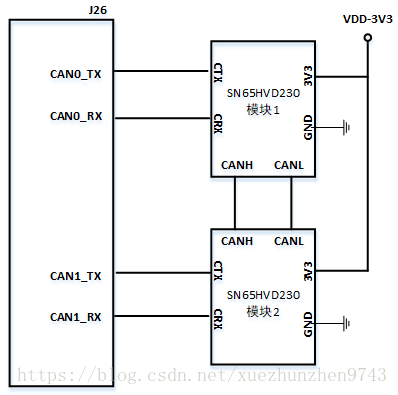

<!DOCTYPE HTML>
<html lang="zh-hans" >
    <head>
        <meta charset="UTF-8">
        <meta content="text/html; charset=utf-8" http-equiv="Content-Type">
        <title>jetson笔记 · robotchaoX</title>
        <meta http-equiv="X-UA-Compatible" content="IE=edge" />
        <meta name="description" content="">
        <meta name="generator" content="GitBook 3.2.3">
        
        
        
    
    <link rel="stylesheet" href="../gitbook/style.css">

    
            
                
                <link rel="stylesheet" href="../gitbook/gitbook-plugin-back-to-top-button/plugin.css">
                
            
                
                <link rel="stylesheet" href="../gitbook/gitbook-plugin-chapter-fold/chapter-fold.css">
                
            
                
                <link rel="stylesheet" href="../gitbook/gitbook-plugin-splitter/splitter.css">
                
            
                
                <link rel="stylesheet" href="../gitbook/gitbook-plugin-anchor-navigation-ex/style/plugin.css">
                
            
                
                <link rel="stylesheet" href="../gitbook/gitbook-plugin-search-pro/search.css">
                
            
                
                <link rel="stylesheet" href="../gitbook/gitbook-plugin-lightbox/css/lightbox.min.css">
                
            
                
                <link rel="stylesheet" href="../gitbook/gitbook-plugin-highlight/website.css">
                
            
                
                <link rel="stylesheet" href="../gitbook/gitbook-plugin-fontsettings/website.css">
                
            
        

    

    
        
    
        
    
        
    
        
    
        
    
        
    

        
    
    
    <meta name="HandheldFriendly" content="true"/>
    <meta name="viewport" content="width=device-width, initial-scale=1, user-scalable=no">
    <meta name="apple-mobile-web-app-capable" content="yes">
    <meta name="apple-mobile-web-app-status-bar-style" content="black">
    <link rel="apple-touch-icon-precomposed" sizes="152x152" href="../gitbook/images/apple-touch-icon-precomposed-152.png">
    <link rel="shortcut icon" href="../gitbook/images/favicon.ico" type="image/x-icon">

    
    <link rel="next" href="../opencv/" />
    
    
    <link rel="prev" href="./" />
    

    </head>
    <body>
        
<div class="book">
    <div class="book-summary">
        
            
<div id="book-search-input" role="search">
    <input type="text" placeholder="输入并搜索" />
</div>

            
                <nav role="navigation">
                


<ul class="summary">
    
    
    
        
        <li>
            <a href="https://github.com/robotchaoX" target="_blank" class="custom-link">GitHub</a>
        </li>
    
    

    
    <li class="divider"></li>
    

    
        
        
    
        <li class="chapter " data-level="1.1" data-path="../">
            
                <a href="../">
            
                    
                    Summary
            
                </a>
            

            
        </li>
    
        <li class="chapter " data-level="1.2" data-path="../c++/">
            
                <a href="../c++/">
            
                    
                    C++
            
                </a>
            

            
            <ul class="articles">
                
    
        <li class="chapter " data-level="1.2.1" data-path="../c++/c++-basic.html">
            
                <a href="../c++/c++-basic.html">
            
                    
                    C++基础
            
                </a>
            

            
        </li>
    
        <li class="chapter " data-level="1.2.2" data-path="../c++/c++11.html">
            
                <a href="../c++/c++11.html">
            
                    
                    C++11
            
                </a>
            

            
        </li>
    
        <li class="chapter " data-level="1.2.3" data-path="../c++/stl.html">
            
                <a href="../c++/stl.html">
            
                    
                    STL
            
                </a>
            

            
        </li>
    

            </ul>
            
        </li>
    
        <li class="chapter " data-level="1.3" data-path="../linux-basic/">
            
                <a href="../linux-basic/">
            
                    
                    linux基础
            
                </a>
            

            
            <ul class="articles">
                
    
        <li class="chapter " data-level="1.3.1" data-path="../linux-basic/linux-command.html">
            
                <a href="../linux-basic/linux-command.html">
            
                    
                    Linux基本命令
            
                </a>
            

            
        </li>
    

            </ul>
            
        </li>
    
        <li class="chapter " data-level="1.4" data-path="../linux-tool/">
            
                <a href="../linux-tool/">
            
                    
                    linux工具
            
                </a>
            

            
            <ul class="articles">
                
    
        <li class="chapter " data-level="1.4.1" data-path="../linux-tool/gcc.html">
            
                <a href="../linux-tool/gcc.html">
            
                    
                    GCC
            
                </a>
            

            
        </li>
    
        <li class="chapter " data-level="1.4.2" data-path="../linux-tool/gdb.html">
            
                <a href="../linux-tool/gdb.html">
            
                    
                    GDB
            
                </a>
            

            
        </li>
    
        <li class="chapter " data-level="1.4.3" data-path="../linux-tool/make.html">
            
                <a href="../linux-tool/make.html">
            
                    
                    make
            
                </a>
            

            
        </li>
    
        <li class="chapter " data-level="1.4.4" data-path="../linux-tool/json.html">
            
                <a href="../linux-tool/json.html">
            
                    
                    json
            
                </a>
            

            
        </li>
    
        <li class="chapter " data-level="1.4.5" data-path="../linux-tool/valgrind内存检测.html">
            
                <a href="../linux-tool/valgrind内存检测.html">
            
                    
                    valgrind内存检测
            
                </a>
            

            
        </li>
    

            </ul>
            
        </li>
    
        <li class="chapter " data-level="1.5" data-path="../linux-system/">
            
                <a href="../linux-system/">
            
                    
                    linux系统编程
            
                </a>
            

            
            <ul class="articles">
                
    
        <li class="chapter " data-level="1.5.1" data-path="../linux-system/01-process.html">
            
                <a href="../linux-system/01-process.html">
            
                    
                    进程
            
                </a>
            

            
        </li>
    
        <li class="chapter " data-level="1.5.2" data-path="../linux-system/02-Inter-Process-Communication.html">
            
                <a href="../linux-system/02-Inter-Process-Communication.html">
            
                    
                    进程间通信
            
                </a>
            

            
        </li>
    
        <li class="chapter " data-level="1.5.3" data-path="../linux-system/04-signal.html">
            
                <a href="../linux-system/04-signal.html">
            
                    
                    信号
            
                </a>
            

            
        </li>
    
        <li class="chapter " data-level="1.5.4" data-path="../linux-system/05-daemon.html">
            
                <a href="../linux-system/05-daemon.html">
            
                    
                    守护进程
            
                </a>
            

            
        </li>
    
        <li class="chapter " data-level="1.5.5" data-path="../linux-system/06-thread.html">
            
                <a href="../linux-system/06-thread.html">
            
                    
                    线程
            
                </a>
            

            
        </li>
    
        <li class="chapter " data-level="1.5.6" data-path="../linux-system/07-thread-synchronization.html">
            
                <a href="../linux-system/07-thread-synchronization.html">
            
                    
                    线程同步
            
                </a>
            

            
        </li>
    

            </ul>
            
        </li>
    
        <li class="chapter " data-level="1.6" data-path="../linux-internet/">
            
                <a href="../linux-internet/">
            
                    
                    linux网络编程
            
                </a>
            

            
            <ul class="articles">
                
    
        <li class="chapter " data-level="1.6.1" data-path="../linux-internet/wang-luo-ji-chu.html">
            
                <a href="../linux-internet/wang-luo-ji-chu.html">
            
                    
                    网络基础
            
                </a>
            

            
        </li>
    
        <li class="chapter " data-level="1.6.2" data-path="../linux-internet/tcp-udp.html">
            
                <a href="../linux-internet/tcp-udp.html">
            
                    
                    TCP/UDP
            
                </a>
            

            
        </li>
    
        <li class="chapter " data-level="1.6.3" data-path="../linux-internet/duo-jin-cheng-bing-fa.html">
            
                <a href="../linux-internet/duo-jin-cheng-bing-fa.html">
            
                    
                    多进程线程并发
            
                </a>
            

            
        </li>
    
        <li class="chapter " data-level="1.6.4" data-path="../linux-internet/duo-lu-IO-zhuan-jie.html">
            
                <a href="../linux-internet/duo-lu-IO-zhuan-jie.html">
            
                    
                    多路IO转接
            
                </a>
            

            
        </li>
    

            </ul>
            
        </li>
    
        <li class="chapter " data-level="1.7" data-path="../web-server/">
            
                <a href="../web-server/">
            
                    
                    Web服务器
            
                </a>
            

            
            <ul class="articles">
                
    
        <li class="chapter " data-level="1.7.1" data-path="../web-server/untitled.html">
            
                <a href="../web-server/untitled.html">
            
                    
                    Untitled
            
                </a>
            

            
        </li>
    

            </ul>
            
        </li>
    
        <li class="chapter " data-level="1.8" data-path="../html/">
            
                <a href="../html/">
            
                    
                    HTML
            
                </a>
            

            
            <ul class="articles">
                
    
        <li class="chapter " data-level="1.8.1" data-path="../html/html.html">
            
                <a href="../html/html.html">
            
                    
                    HTML基础
            
                </a>
            

            
        </li>
    

            </ul>
            
        </li>
    
        <li class="chapter " data-level="1.9" data-path="../http/">
            
                <a href="../http/">
            
                    
                    HTTP协议
            
                </a>
            

            
            <ul class="articles">
                
    
        <li class="chapter " data-level="1.9.1" data-path="../http/http.html">
            
                <a href="../http/http.html">
            
                    
                    HTTP基础
            
                </a>
            

            
        </li>
    
        <li class="chapter " data-level="1.9.2" data-path="../http/https.md">
            
                <span>
            
                    
                    https原理
            
                </a>
            

            
        </li>
    

            </ul>
            
        </li>
    
        <li class="chapter " data-level="1.10" data-path="../design-pattern/">
            
                <a href="../design-pattern/">
            
                    
                    设计模式
            
                </a>
            

            
            <ul class="articles">
                
    
        <li class="chapter " data-level="1.10.1" data-path="../design-pattern/uml.html">
            
                <a href="../design-pattern/uml.html">
            
                    
                    UML
            
                </a>
            

            
        </li>
    
        <li class="chapter " data-level="1.10.2" data-path="../design-pattern/design-pattern.html">
            
                <a href="../design-pattern/design-pattern.html">
            
                    
                    设计模式
            
                </a>
            

            
        </li>
    

            </ul>
            
        </li>
    
        <li class="chapter " data-level="1.11" data-path="../shell/">
            
                <a href="../shell/">
            
                    
                    shell编程
            
                </a>
            

            
            <ul class="articles">
                
    
        <li class="chapter " data-level="1.11.1" data-path="../shell/shell.html">
            
                <a href="../shell/shell.html">
            
                    
                    shell基础
            
                </a>
            

            
        </li>
    

            </ul>
            
        </li>
    
        <li class="chapter " data-level="1.12" data-path="../python/">
            
                <a href="../python/">
            
                    
                    Python
            
                </a>
            

            
            <ul class="articles">
                
    
        <li class="chapter " data-level="1.12.1" data-path="../python/python.html">
            
                <a href="../python/python.html">
            
                    
                    Python基础
            
                </a>
            

            
        </li>
    

            </ul>
            
        </li>
    
        <li class="chapter " data-level="1.13" data-path="../vim/">
            
                <a href="../vim/">
            
                    
                    vim编辑器
            
                </a>
            

            
            <ul class="articles">
                
    
        <li class="chapter " data-level="1.13.1" data-path="../vim/vim.html">
            
                <a href="../vim/vim.html">
            
                    
                    vim编辑器
            
                </a>
            

            
        </li>
    

            </ul>
            
        </li>
    
        <li class="chapter " data-level="1.14" data-path="../doxygen/">
            
                <a href="../doxygen/">
            
                    
                    doxygen
            
                </a>
            

            
            <ul class="articles">
                
    
        <li class="chapter " data-level="1.14.1" data-path="../doxygen/doxygen源码文档.md">
            
                <span>
            
                    
                    doxygen源码文档
            
                </a>
            

            
        </li>
    

            </ul>
            
        </li>
    
        <li class="chapter " data-level="1.15" data-path="../markdown/">
            
                <a href="../markdown/">
            
                    
                    MarkDown
            
                </a>
            

            
            <ul class="articles">
                
    
        <li class="chapter " data-level="1.15.1" data-path="../markdown/markdown.html">
            
                <a href="../markdown/markdown.html">
            
                    
                    MarkDown语法
            
                </a>
            

            
        </li>
    

            </ul>
            
        </li>
    
        <li class="chapter " data-level="1.16" data-path="../gitbook/">
            
                <a href="../gitbook/">
            
                    
                    GitBook
            
                </a>
            

            
            <ul class="articles">
                
    
        <li class="chapter " data-level="1.16.1" data-path="../gitbook/gitbook.html">
            
                <a href="../gitbook/gitbook.html">
            
                    
                    GitBook笔记
            
                </a>
            

            
        </li>
    

            </ul>
            
        </li>
    
        <li class="chapter " data-level="1.17" data-path="../git/">
            
                <a href="../git/">
            
                    
                    Git
            
                </a>
            

            
            <ul class="articles">
                
    
        <li class="chapter " data-level="1.17.1" data-path="../git/git.html">
            
                <a href="../git/git.html">
            
                    
                    Git&GitHub
            
                </a>
            

            
        </li>
    

            </ul>
            
        </li>
    
        <li class="chapter " data-level="1.18" data-path="./">
            
                <a href="./">
            
                    
                    NVIDIA-jetson
            
                </a>
            

            
            <ul class="articles">
                
    
        <li class="chapter active" data-level="1.18.1" data-path="jetson.html">
            
                <a href="jetson.html">
            
                    
                    jetson笔记
            
                </a>
            

            
        </li>
    

            </ul>
            
        </li>
    
        <li class="chapter " data-level="1.19" data-path="../opencv/">
            
                <a href="../opencv/">
            
                    
                    OpenCV
            
                </a>
            

            
            <ul class="articles">
                
    
        <li class="chapter " data-level="1.19.1" data-path="../opencv/opencv.html">
            
                <a href="../opencv/opencv.html">
            
                    
                    OpenCV笔记
            
                </a>
            

            
        </li>
    

            </ul>
            
        </li>
    
        <li class="chapter " data-level="1.20" data-path="../shu-ju-ku/">
            
                <a href="../shu-ju-ku/">
            
                    
                    数据库
            
                </a>
            

            
            <ul class="articles">
                
    
        <li class="chapter " data-level="1.20.1" data-path="../shu-ju-ku/mysql.html">
            
                <a href="../shu-ju-ku/mysql.html">
            
                    
                    MySQL
            
                </a>
            

            
        </li>
    
        <li class="chapter " data-level="1.20.2" data-path="../shu-ju-ku/mongodb.html">
            
                <a href="../shu-ju-ku/mongodb.html">
            
                    
                    MongoDB
            
                </a>
            

            
        </li>
    

            </ul>
            
        </li>
    
        <li class="chapter " data-level="1.21" data-path="../shu-ju-jie-gou/README.md">
            
                <span>
            
                    
                    数据结构与算法
            
                </a>
            

            
        </li>
    

    

    <li class="divider"></li>

    <li>
        <a href="https://www.gitbook.com" target="blank" class="gitbook-link">
            本书使用 GitBook 发布
        </a>
    </li>
</ul>


                </nav>
            
        
    </div>

    <div class="book-body">
        
            <div class="body-inner">
                
                    

<div class="book-header" role="navigation">
    

    <!-- Title -->
    <h1>
        <i class="fa fa-circle-o-notch fa-spin"></i>
        <a href=".." >jetson笔记</a>
    </h1>
</div>


                    <div class="page-wrapper" tabindex="-1" role="main">
                        <div class="page-inner">
                            
<div id="book-search-results">
    <div class="search-noresults">
    
                                <section class="normal markdown-section">
                                
                                <div id="anchor-navigation-ex-navbar"><i class="fa fa-navicon"></i><ul><li><span class="title-icon "></span><a href="#jetson&#x7B14;&#x8BB0;"><b></b>Jetson&#x7B14;&#x8BB0;</a></li><ul><li><span class="title-icon "></span><a href="#jetson-tx2&#x5237;&#x673A;"><b></b>Jetson TX2&#x5237;&#x673A;</a></li><ul><li><span class="title-icon "></span><a href="#&#x9996;&#x6B21;&#x5F00;&#x673A;"><b></b>&#x9996;&#x6B21;&#x5F00;&#x673A;</a></li><li><span class="title-icon "></span><a href="#jetpack42&#x5237;&#x673A;"><b></b>Jetpack4.2&#x5237;&#x673A;</a></li><li><span class="title-icon "></span><a href="#&#x56FE;&#x4E3A;&#x79D1;&#x6280;007&#x8F7D;&#x677F;&#x5237;&#x673A;"><b></b>&#x56FE;&#x4E3A;&#x79D1;&#x6280;007&#x8F7D;&#x677F;&#x5237;&#x673A;</a></li></ul><li><span class="title-icon "></span><a href="#jetson-tx1&#x5237;&#x673A;"><b></b>Jetson TX1&#x5237;&#x673A;</a></li><ul><li><span class="title-icon "></span><a href="#jetpack&#x5237;&#x673A;tx1"><b></b>Jetpack&#x5237;&#x673A;TX1</a></li><li><span class="title-icon "></span><a href="#opencv&#x81EA;&#x5B9A;&#x4E49;&#x5B89;&#x88C5;"><b></b>opencv&#x81EA;&#x5B9A;&#x4E49;&#x5B89;&#x88C5;</a></li><li><span class="title-icon "></span><a href="#&#x5B89;&#x88C5;pcl"><b></b>&#x5B89;&#x88C5;PCL</a></li></ul><li><span class="title-icon "></span><a href="#&#x7CFB;&#x7EDF;&#x914D;&#x7F6E;"><b></b>&#x7CFB;&#x7EDF;&#x914D;&#x7F6E;</a></li><ul><li><span class="title-icon "></span><a href="#&#x7CFB;&#x7EDF;&#x62D3;&#x5BB9;"><b></b>&#x7CFB;&#x7EDF;&#x62D3;&#x5BB9;</a></li><li><span class="title-icon "></span><a href="#&#x8F6F;&#x4EF6;&#x5B89;&#x88C5;"><b></b>&#x8F6F;&#x4EF6;&#x5B89;&#x88C5;</a></li><li><span class="title-icon "></span><a href="#&#x5DE5;&#x4F5C;&#x6A21;&#x5F0F;"><b></b>&#x5DE5;&#x4F5C;&#x6A21;&#x5F0F;</a></li><li><span class="title-icon "></span><a href="#&#x98CE;&#x6247;&#x63A7;&#x5236;"><b></b>&#x98CE;&#x6247;&#x63A7;&#x5236;</a></li><li><span class="title-icon "></span><a href="#&#x6E29;&#x5EA6;&#x63A7;&#x5236;"><b></b>&#x6E29;&#x5EA6;&#x63A7;&#x5236;</a></li><li><span class="title-icon "></span><a href="#&#x4E0A;&#x7535;&#x542F;&#x52A8;"><b></b>&#x4E0A;&#x7535;&#x542F;&#x52A8;</a></li><li><span class="title-icon "></span><a href="#jetson-stats--jtop"><b></b>jetson-stats / jtop</a></li><li><span class="title-icon "></span><a href="#&#x67E5;&#x770B;&#x7CFB;&#x7EDF;&#x4FE1;&#x606F;"><b></b>&#x67E5;&#x770B;&#x7CFB;&#x7EDF;&#x4FE1;&#x606F;</a></li><li><span class="title-icon "></span><a href="#&#x4FEE;&#x6539;&#x663E;&#x793A;&#x5668;&#x5206;&#x8FA8;&#x7387;"><b></b>&#x4FEE;&#x6539;&#x663E;&#x793A;&#x5668;&#x5206;&#x8FA8;&#x7387;</a></li><li><span class="title-icon "></span><a href="#&#x7F51;&#x7EDC;&#x8BBE;&#x7F6E;"><b></b>&#x7F51;&#x7EDC;&#x8BBE;&#x7F6E;</a></li><li><span class="title-icon "></span><a href="#root-&#x81EA;&#x52A8;&#x767B;&#x5F55;"><b></b>root &#x81EA;&#x52A8;&#x767B;&#x5F55;</a></li><li><span class="title-icon "></span><a href="#&#x542F;&#x52A8;&#x56FE;&#x5F62;&#x754C;&#x9762;"><b></b>&#x542F;&#x52A8;&#x56FE;&#x5F62;&#x754C;&#x9762;</a></li><li><span class="title-icon "></span><a href="#&#x5F00;&#x673A;&#x542F;&#x52A8;&#x63D0;&#x793A;&#x6587;&#x5B57;"><b></b>&#x5F00;&#x673A;&#x542F;&#x52A8;&#x63D0;&#x793A;&#x6587;&#x5B57;</a></li><li><span class="title-icon "></span><a href="#&#x5F00;&#x673A;&#x52A8;&#x753B;"><b></b>&#x5F00;&#x673A;&#x52A8;&#x753B;</a></li><li><span class="title-icon "></span><a href="#&#x5B88;&#x62A4;&#x8FDB;&#x7A0B;"><b></b>&#x5B88;&#x62A4;&#x8FDB;&#x7A0B;</a></li><li><span class="title-icon "></span><a href="#&#x7A0B;&#x5E8F;&#x81EA;&#x542F;&#x52A8;"><b></b>&#x7A0B;&#x5E8F;&#x81EA;&#x542F;&#x52A8;</a></li><li><span class="title-icon "></span><a href="#&#x5F00;&#x673A;&#x542F;&#x52A8;&#x9879;"><b></b>&#x5F00;&#x673A;&#x542F;&#x52A8;&#x9879;</a></li><li><span class="title-icon "></span><a href="#&#x6302;&#x8F7D;&#x78C1;&#x76D8;"><b></b>&#x6302;&#x8F7D;&#x78C1;&#x76D8;</a></li><li><span class="title-icon "></span><a href="#&#x767B;&#x5F55;shell"><b></b>&#x767B;&#x5F55;shell</a></li><li><span class="title-icon "></span><a href="#ssh&#x767B;&#x5F55;"><b></b>SSH&#x767B;&#x5F55;</a></li><li><span class="title-icon "></span><a href="#&#x684C;&#x9762;&#x5171;&#x4EAB;"><b></b>&#x684C;&#x9762;&#x5171;&#x4EAB;</a></li><li><span class="title-icon "></span><a href="#clion&#x8FDC;&#x7A0B;&#x540C;&#x6B65;&#x53CA;&#x8C03;&#x8BD5;"><b></b>CLion&#x8FDC;&#x7A0B;&#x540C;&#x6B65;&#x53CA;&#x8C03;&#x8BD5;</a></li></ul><li><span class="title-icon "></span><a href="#&#x5916;&#x8BBE;io"><b></b>&#x5916;&#x8BBE;IO</a></li><ul><li><span class="title-icon "></span><a href="#gpio"><b></b>GPIO</a></li><li><span class="title-icon "></span><a href="#python-jetsongpio"><b></b>python Jetson.GPIO</a></li><li><span class="title-icon "></span><a href="#&#x4E32;&#x53E3;"><b></b>&#x4E32;&#x53E3;</a></li><li><span class="title-icon "></span><a href="#&#x4E32;&#x53E3;&#x8C03;&#x8BD5;"><b></b>&#x4E32;&#x53E3;&#x8C03;&#x8BD5;</a></li><li><span class="title-icon "></span><a href="#linux&#x4E0B;&#x4F7F;&#x7528;usb&#x8F6C;&#x4E32;&#x53E3;&#x8BBE;&#x5907;"><b></b>Linux&#x4E0B;&#x4F7F;&#x7528;USB&#x8F6C;&#x4E32;&#x53E3;&#x8BBE;&#x5907;</a></li><li><span class="title-icon "></span><a href="#i2c"><b></b>I2C</a></li><li><span class="title-icon "></span><a href="#can&#x901A;&#x4FE1;"><b></b>CAN&#x901A;&#x4FE1;</a></li><li><span class="title-icon "></span><a href="#&#x4E2D;&#x65AD;&#x4FE1;&#x53F7;"><b></b>&#x4E2D;&#x65AD;&#x4FE1;&#x53F7;</a></li><li><span class="title-icon "></span><a href="#linux&#x4FE1;&#x53F7;&#x673A;&#x5236;"><b></b>LINUX&#x4FE1;&#x53F7;&#x673A;&#x5236;</a></li><li><span class="title-icon "></span><a href="#&#x56FE;&#x4E3A;007&#x8F7D;&#x677F;"><b></b>&#x56FE;&#x4E3A;007&#x8F7D;&#x677F;</a></li></ul><li><span class="title-icon "></span><a href="#realsense-&#x76F8;&#x673A;"><b></b>RealSense &#x76F8;&#x673A;</a></li><ul><li><span class="title-icon "></span><a href="#realsense-d435-&#x53C2;&#x6570;"><b></b>RealSense D435 &#x53C2;&#x6570;</a></li><li><span class="title-icon "></span><a href="#realsense-sdk-&#x5B89;&#x88C5;"><b></b>RealSense SDK &#x5B89;&#x88C5;</a></li><li><span class="title-icon "></span><a href="#&#x66F4;&#x65B0;&#x56FA;&#x4EF6;"><b></b>&#x66F4;&#x65B0;&#x56FA;&#x4EF6;</a></li></ul><li><span class="title-icon "></span><a href="#zed-&#x76F8;&#x673A;"><b></b>ZED &#x76F8;&#x673A;</a></li></ul></ul></div><h1 id="jetson&#x7B14;&#x8BB0;"><a name="jetson&#x7B14;&#x8BB0;" class="anchor-navigation-ex-anchor" href="#jetson&#x7B14;&#x8BB0;"><i class="fa fa-link" aria-hidden="true"></i></a>Jetson&#x7B14;&#x8BB0;</h1>
<p>[TOC]</p>
<!-- toc -->
<ul>
<li><a href="#jetson-tx2%E5%88%B7%E6%9C%BA">Jetson TX2&#x5237;&#x673A;</a><ul>
<li><a href="#%E9%A6%96%E6%AC%A1%E5%BC%80%E6%9C%BA">&#x9996;&#x6B21;&#x5F00;&#x673A;</a></li>
<li><a href="#jetpack42%E5%88%B7%E6%9C%BA">Jetpack4.2&#x5237;&#x673A;</a></li>
<li><a href="#%E5%9B%BE%E4%B8%BA%E7%A7%91%E6%8A%80007%E8%BD%BD%E6%9D%BF%E5%88%B7%E6%9C%BA">&#x56FE;&#x4E3A;&#x79D1;&#x6280;007&#x8F7D;&#x677F;&#x5237;&#x673A;</a></li>
</ul>
</li>
<li><a href="#jetson-tx1%E5%88%B7%E6%9C%BA">Jetson TX1&#x5237;&#x673A;</a><ul>
<li><a href="#jetpack%E5%88%B7%E6%9C%BAtx1">Jetpack&#x5237;&#x673A;TX1</a></li>
<li><a href="#opencv%E8%87%AA%E5%AE%9A%E4%B9%89%E5%AE%89%E8%A3%85">opencv&#x81EA;&#x5B9A;&#x4E49;&#x5B89;&#x88C5;</a></li>
<li><a href="#%E5%AE%89%E8%A3%85pcl">&#x5B89;&#x88C5;PCL</a></li>
</ul>
</li>
<li><a href="#%E7%B3%BB%E7%BB%9F%E9%85%8D%E7%BD%AE">&#x7CFB;&#x7EDF;&#x914D;&#x7F6E;</a><ul>
<li><a href="#%E7%B3%BB%E7%BB%9F%E6%8B%93%E5%AE%B9">&#x7CFB;&#x7EDF;&#x62D3;&#x5BB9;</a></li>
<li><a href="#%E8%BD%AF%E4%BB%B6%E5%AE%89%E8%A3%85">&#x8F6F;&#x4EF6;&#x5B89;&#x88C5;</a></li>
<li><a href="#%E5%B7%A5%E4%BD%9C%E6%A8%A1%E5%BC%8F">&#x5DE5;&#x4F5C;&#x6A21;&#x5F0F;</a></li>
<li><a href="#%E9%A3%8E%E6%89%87%E6%8E%A7%E5%88%B6">&#x98CE;&#x6247;&#x63A7;&#x5236;</a></li>
<li><a href="#%E6%B8%A9%E5%BA%A6%E6%8E%A7%E5%88%B6">&#x6E29;&#x5EA6;&#x63A7;&#x5236;</a></li>
<li><a href="#%E4%B8%8A%E7%94%B5%E5%90%AF%E5%8A%A8">&#x4E0A;&#x7535;&#x542F;&#x52A8;</a></li>
<li><a href="#jetson-stats--jtop">jetson-stats / jtop</a></li>
<li><a href="#%E6%9F%A5%E7%9C%8B%E7%B3%BB%E7%BB%9F%E4%BF%A1%E6%81%AF">&#x67E5;&#x770B;&#x7CFB;&#x7EDF;&#x4FE1;&#x606F;</a></li>
<li><a href="#%E4%BF%AE%E6%94%B9%E6%98%BE%E7%A4%BA%E5%99%A8%E5%88%86%E8%BE%A8%E7%8E%87">&#x4FEE;&#x6539;&#x663E;&#x793A;&#x5668;&#x5206;&#x8FA8;&#x7387;</a></li>
<li><a href="#%E7%BD%91%E7%BB%9C%E8%AE%BE%E7%BD%AE">&#x7F51;&#x7EDC;&#x8BBE;&#x7F6E;</a></li>
<li><a href="#root-%E8%87%AA%E5%8A%A8%E7%99%BB%E5%BD%95">root &#x81EA;&#x52A8;&#x767B;&#x5F55;</a></li>
<li><a href="#%E5%90%AF%E5%8A%A8%E5%9B%BE%E5%BD%A2%E7%95%8C%E9%9D%A2">&#x542F;&#x52A8;&#x56FE;&#x5F62;&#x754C;&#x9762;</a></li>
<li><a href="#%E5%BC%80%E6%9C%BA%E5%90%AF%E5%8A%A8%E6%8F%90%E7%A4%BA%E6%96%87%E5%AD%97">&#x5F00;&#x673A;&#x542F;&#x52A8;&#x63D0;&#x793A;&#x6587;&#x5B57;</a></li>
<li><a href="#%E5%BC%80%E6%9C%BA%E5%8A%A8%E7%94%BB">&#x5F00;&#x673A;&#x52A8;&#x753B;</a></li>
<li><a href="#%E5%AE%88%E6%8A%A4%E8%BF%9B%E7%A8%8B">&#x5B88;&#x62A4;&#x8FDB;&#x7A0B;</a></li>
<li><a href="#%E7%A8%8B%E5%BA%8F%E8%87%AA%E5%90%AF%E5%8A%A8">&#x7A0B;&#x5E8F;&#x81EA;&#x542F;&#x52A8;</a></li>
<li><a href="#%E5%BC%80%E6%9C%BA%E5%90%AF%E5%8A%A8%E9%A1%B9">&#x5F00;&#x673A;&#x542F;&#x52A8;&#x9879;</a></li>
<li><a href="#%E6%8C%82%E8%BD%BD%E7%A3%81%E7%9B%98">&#x6302;&#x8F7D;&#x78C1;&#x76D8;</a></li>
<li><a href="#%E7%99%BB%E5%BD%95shell">&#x767B;&#x5F55;shell</a></li>
<li><a href="#ssh%E7%99%BB%E5%BD%95">SSH&#x767B;&#x5F55;</a></li>
<li><a href="#%E6%A1%8C%E9%9D%A2%E5%85%B1%E4%BA%AB">&#x684C;&#x9762;&#x5171;&#x4EAB;</a></li>
<li><a href="#clion%E8%BF%9C%E7%A8%8B%E5%90%8C%E6%AD%A5%E5%8F%8A%E8%B0%83%E8%AF%95">CLion&#x8FDC;&#x7A0B;&#x540C;&#x6B65;&#x53CA;&#x8C03;&#x8BD5;</a></li>
</ul>
</li>
<li><a href="#%E5%A4%96%E8%AE%BEio">&#x5916;&#x8BBE;IO</a><ul>
<li><a href="#gpio">GPIO</a></li>
<li><a href="#python-jetsongpio">python Jetson.GPIO</a></li>
<li><a href="#%E4%B8%B2%E5%8F%A3">&#x4E32;&#x53E3;</a></li>
<li><a href="#%E4%B8%B2%E5%8F%A3%E8%B0%83%E8%AF%95">&#x4E32;&#x53E3;&#x8C03;&#x8BD5;</a></li>
<li><a href="#linux%E4%B8%8B%E4%BD%BF%E7%94%A8usb%E8%BD%AC%E4%B8%B2%E5%8F%A3%E8%AE%BE%E5%A4%87">Linux&#x4E0B;&#x4F7F;&#x7528;USB&#x8F6C;&#x4E32;&#x53E3;&#x8BBE;&#x5907;</a></li>
<li><a href="#i2c">I2C</a></li>
<li><a href="#can%E9%80%9A%E4%BF%A1">CAN&#x901A;&#x4FE1;</a></li>
<li><a href="#%E4%B8%AD%E6%96%AD%E4%BF%A1%E5%8F%B7">&#x4E2D;&#x65AD;&#x4FE1;&#x53F7;</a></li>
<li><a href="#linux%E4%BF%A1%E5%8F%B7%E6%9C%BA%E5%88%B6">LINUX&#x4FE1;&#x53F7;&#x673A;&#x5236;</a></li>
<li><a href="#%E5%9B%BE%E4%B8%BA007%E8%BD%BD%E6%9D%BF">&#x56FE;&#x4E3A;007&#x8F7D;&#x677F;</a></li>
</ul>
</li>
<li><a href="#realsense-%E7%9B%B8%E6%9C%BA">RealSense &#x76F8;&#x673A;</a><ul>
<li><a href="#realsense-d435-%E5%8F%82%E6%95%B0">RealSense D435 &#x53C2;&#x6570;</a></li>
<li><a href="#realsense-sdk-%E5%AE%89%E8%A3%85">RealSense SDK &#x5B89;&#x88C5;</a></li>
<li><a href="#%E6%9B%B4%E6%96%B0%E5%9B%BA%E4%BB%B6">&#x66F4;&#x65B0;&#x56FA;&#x4EF6;</a></li>
</ul>
</li>
<li><a href="#zed-%E7%9B%B8%E6%9C%BA">ZED &#x76F8;&#x673A;</a></li>
</ul>
<!-- tocstop -->
<h2 id="jetson-tx2&#x5237;&#x673A;"><a name="jetson-tx2&#x5237;&#x673A;" class="anchor-navigation-ex-anchor" href="#jetson-tx2&#x5237;&#x673A;"><i class="fa fa-link" aria-hidden="true"></i></a>Jetson TX2&#x5237;&#x673A;</h2>
<h3 id="&#x9996;&#x6B21;&#x5F00;&#x673A;"><a name="&#x9996;&#x6B21;&#x5F00;&#x673A;" class="anchor-navigation-ex-anchor" href="#&#x9996;&#x6B21;&#x5F00;&#x673A;"><i class="fa fa-link" aria-hidden="true"></i></a>&#x9996;&#x6B21;&#x5F00;&#x673A;</h3>
<p>Jetson TX2&#x9996;&#x6B21;&#x5F00;&#x673A;&#x5F00;&#x4E0D;&#x4E86;&#xFF0C;&#x6309;&#x4E00;&#x4E0B;&#x5F00;&#x673A;&#x952E;&#x7535;&#x6E90;&#x7EA2;&#x706F;&#x4EAE;&#x4E00;&#x4E0B;&#x5C31;&#x7184;&#x706D;&#x4E86;&#xFF0C;&#x6CA1;&#x6709;&#x5176;&#x4ED6;&#x53CD;&#x5E94;&#xFF1F;&#xFF1F;</p>
<p>&#x539F;&#x56E0;&#x662F;Jetson TX2&#x5F00;&#x673A;&#x5FC5;&#x987B;==&#x957F;&#x6309;&#x7535;&#x6E90;&#x952E;==&#xFF0C;&#x7B49;&#x5230;&#x6309;&#x952E;&#x4E24;&#x4FA7;&#x7EFF;&#x706F;&#x4EAE;&#x4E86;&#xFF0C;&#x518D;&#x677E;&#x5F00;&#x7535;&#x6E90;&#x952E;&#x5373;&#x53EF;&#x542F;&#x52A8;&#x70B9;&#x4EAE;&#x5C4F;&#x5E55;&#x3002;</p>
<p>&#x4EB2;&#x6D4B;TX2&#x90E8;&#x5206;&#x5C4F;&#x5E55;&#x53EF;&#x4EE5;&#x4F7F;&#x7528;HDMI&#x8F6C;VGA&#x6765;&#x8F6C;&#x63A5;&#xFF0C;&#x5373;&#x4F7F;&#x662F;&#x9996;&#x6B21;&#x5F00;&#x673A;&#x65F6;&#x4F7F;&#x7528;&#x8F6C;&#x63A5;&#x5934;&#x4E5F;&#x53EF;&#x4EE5;&#x6B63;&#x5E38;&#x663E;&#x793A;&#xFF0C;&#x4F46;&#x662F;&#xFF0C;&#x6709;&#x7684;&#x5C4F;&#x5E55;&#x4E0D;&#x53EF;&#x4EE5;&#x4F7F;&#x7528;HDMI&#x8F6C;VGA&#x6765;&#x8F6C;&#x63A5;&#xFF0C;&#x4E24;&#x79CD;&#x60C5;&#x51B5;&#x90FD;&#x9047;&#x5230;&#x8FC7;&#x3002;</p>
<p>&#x63D2;&#x597D;&#x7535;&#x6E90;&#x5E76;&#x4F9B;&#x7535;&#xFF08;&#x4E9A;&#x592A;&#x7248;&#x9ED8;&#x8BA4;&#x4E0D;&#x5E26;&#x7535;&#x6E90;&#x63D2;&#x7EBF;&#x9700;&#x8981;&#x81EA;&#x914D;&#xFF0C;&#x7F8E;&#x7248;&#x5E26;&#x4E86;&#x7535;&#x6E90;&#x63D2;&#x7EBF;&#x4F3C;&#x4E4E;&#x63D2;&#x53E3;&#x4E0E;&#x56FD;&#x5185;&#x63D2;&#x5EA7;&#x4E0D;&#x5339;&#x914D;&#xFF09;&#xFF0C;&#x63A5;&#x901A;&#x663E;&#x793A;&#x5668;&#x3001;&#x952E;&#x76D8;&#x3001;&#x9F20;&#x6807;&#xFF0C;&#x7136;&#x540E;&#x6309;&#x4E0B;&#x4E3B;&#x677F;&#x4E0A;&#x7EA2;&#x8272;&#x7684;&quot;POWER BTN&quot;&#x5F00;&#x673A;&#x6309;&#x94AE;&#x3002;
Jetson TX2 &#x81EA;&#x5E26;ubuntu 16.04 &#x7CFB;&#x7EDF;&#xFF0C;&#x9ED8;&#x8BA4;&#x7528;&#x6237;&#x540D;nvidia&#xFF0C;&#x5BC6;&#x7801;nvidia&#x3002;&#x9996;&#x6B21;&#x5F00;&#x673A;&#x65F6;&#xFF0C;&#x5C4F;&#x5E55;&#x4F1A;&#x663E;&#x793A;&#x4E00;&#x4E9B;&#x63D0;&#x793A;&#x4FE1;&#x606F;&#xFF0C;&#x6309;&#x63D0;&#x793A;&#x6B65;&#x9AA4;&#x8F93;&#x5165;&#x547D;&#x4EE4;&#xFF0C;&#x5B89;&#x88C5;Nvidia Linux driver&#x56FE;&#x5F62;&#x5316;&#x754C;&#x9762;&#x9A71;&#x52A8;&#x3002;</p>
<pre><code>ls
cd ${HOME}/NVIDIA_INSTALLER
sudo ./install.sh
sudo reboot
</code></pre><h3 id="jetpack42&#x5237;&#x673A;"><a name="jetpack42&#x5237;&#x673A;" class="anchor-navigation-ex-anchor" href="#jetpack42&#x5237;&#x673A;"><i class="fa fa-link" aria-hidden="true"></i></a>Jetpack4.2&#x5237;&#x673A;</h3>
<p>&#x5B98;&#x7F51;&#x6559;&#x7A0B;&#xFF1A;
<a href="https://docs.nvidia.com/jetson/jetpack/index.html" target="_blank">NVIDIA JetPack SDK&#x5B98;&#x65B9;&#x6587;&#x6863;</a>
<a href="https://docs.nvidia.com/sdk-manager/index.html" target="_blank">NVIDIA SDK Manager&#x5B98;&#x65B9;&#x624B;&#x518C;</a>
<a href="https://docs.nvidia.com/sdk-manager/install-with-sdkm-jetson/index.html" target="_blank">SDK Manager &#x5B89;&#x88C5; Jetson</a></p>
<p><a href="https://www.jianshu.com/p/b70701660db3" target="_blank">&#x53C2;&#x8003;&#x6559;&#x7A0B;</a></p>
<p>NVIDIA JetPack SDK&#x662F;&#x7528;&#x4E8E;&#x6784;&#x5EFA;AI&#x5E94;&#x7528;&#x7A0B;&#x5E8F;&#x7684;&#x6700;&#x5168;&#x9762;&#x7684;&#x89E3;&#x51B3;&#x65B9;&#x6848;&#x3002;&#x4F7F;&#x7528;JetPack&#x5B89;&#x88C5;&#x7A0B;&#x5E8F;&#x4F7F;&#x7528;&#x6700;&#x65B0;&#x7684;&#x64CD;&#x4F5C;&#x7CFB;&#x7EDF;&#x6620;&#x50CF;&#x5237;&#x65B0;Jetson Developer Kit&#xFF0C;&#x4E3A;&#x4E3B;&#x673A;PC&#x548C;Developer Kit&#x5B89;&#x88C5;&#x5F00;&#x53D1;&#x4EBA;&#x5458;&#x5DE5;&#x5177;&#xFF0C;&#x5E76;&#x5B89;&#x88C5;&#x5FEB;&#x901F;&#x542F;&#x52A8;&#x5F00;&#x53D1;&#x73AF;&#x5883;&#x6240;&#x9700;&#x7684;&#x5E93;&#x548C;API&#x3002;JetPack&#x5305;&#x62EC;&#x64CD;&#x4F5C;&#x7CFB;&#x7EDF;&#x6620;&#x50CF;&#xFF0C;&#x5E93;&#x548C;API&#xFF0C;&#x5F00;&#x53D1;&#x4EBA;&#x5458;&#x5DE5;&#x5177;&#xFF0C;&#x793A;&#x4F8B;&#x548C;&#x6587;&#x6863;&#x3002;&#x9884;&#x88C5;&#x7684;Ubuntu&#x6CA1;&#x6709;&#x96C6;&#x6210;NVIDIA&#x7684;&#x5F00;&#x53D1;&#x5DE5;&#x5177;&#xFF0C;&#x9700;&#x8981;&#x5148;&#x5B89;&#x88C5;JETPACK&#x624D;&#x80FD;&#x8FDB;&#x884C;&#x5F00;&#x53D1;&#xFF0C;&#x4E5F;&#x5C31;&#x662F;&#x4FD7;&#x79F0;&#x7684;&#x5237;&#x673A;&#x3002;&#x53EA;&#x6709;TX2&#x5F00;&#x53D1;&#x677F;&#x662F;&#x65E0;&#x6CD5;&#x5237;&#x673A;&#x7684;&#xFF0C;Jetpack&#x5237;&#x673A;&#x9700;&#x8981;&#x51C6;&#x5907;&#x4E00;&#x53F0;&#x88C5;&#x6709;64&#x4F4D;Ubuntu16.04&#x7CFB;&#x7EDF;host&#x4E3B;&#x673A;&#xFF0C;&#x53EF;&#x4EE5;&#x5728;&#x865A;&#x62DF;&#x673A;&#x4E2D;&#x5B89;&#x88C5;Ubuntu16.04&#x7CFB;&#x7EDF;&#x4F5C;&#x4E3A;host&#x4E3B;&#x673A;&#x3002;</p>
<blockquote>
<p>&#x5237;&#x673A;&#x6CE8;&#x610F;&#x70B9;&#xFF1A;
&#x5237;&#x673A;&#x65F6;&#x95F4;&#x5927;&#x6982;&#x9700;&#x8981; 1~2 &#x5C0F;&#x65F6;&#xFF0C;&#x4F1A;&#x683C;&#x5F0F;&#x5316; eMMC
host&#x4E3B;&#x673A;Ubuntu16.04&#x7CFB;&#x7EDF;&#x81F3;&#x5C11;30GB&#x7684;&#x786C;&#x76D8;&#x7A7A;&#x95F4;&#xFF0C;&#x56E0;&#x4E3A;jetpack&#x9700;&#x4E0B;&#x8F7D;&#x7684;&#x6587;&#x4EF6;&#x6BD4;&#x8F83;&#x5927;
&#x82E5;&#x662F;&#x865A;&#x62DF;&#x673A;&#x865A;&#x9700;&#x8BBE;&#x7F6E;&#x4E3A;USB3.0,jetson&#x4E0E;&#x4E3B;&#x673A;&#x4E5F;&#x4F7F;&#x7528;USB3.0&#x53E3;&#x76F8;&#x8FDE;
&#x91CD;&#x88C5;&#x7CFB;&#x7EDF;&#x540E;jetson&#x7684;USB&#x540D;&#x79F0;&#x4F1A;&#x7531;&#x201C;NVIDIA Corp&#x201D;&#x6539;&#x53D8;&#x4E3A;&#x201C;NVIDIA Linux for Tegra&#x201D;</p>
</blockquote>
<h4 id="&#x5237;&#x673A;&#x51C6;&#x5907;"><a name="&#x5237;&#x673A;&#x51C6;&#x5907;" class="anchor-navigation-ex-anchor" href="#&#x5237;&#x673A;&#x51C6;&#x5907;"><i class="fa fa-link" aria-hidden="true"></i></a>&#x5237;&#x673A;&#x51C6;&#x5907;</h4>
<h4 id="virtualbox-&#x865A;&#x62DF;&#x673A;&#x8BBE;&#x7F6E;"><a name="virtualbox-&#x865A;&#x62DF;&#x673A;&#x8BBE;&#x7F6E;" class="anchor-navigation-ex-anchor" href="#virtualbox-&#x865A;&#x62DF;&#x673A;&#x8BBE;&#x7F6E;"><i class="fa fa-link" aria-hidden="true"></i></a>VirtualBox &#x865A;&#x62DF;&#x673A;&#x8BBE;&#x7F6E;</h4>
<p>&#x6CA1;&#x7528;VirtualBox&#x865A;&#x62DF;&#x673A;&#x7684;&#x8DF3;&#x8FC7;</p>
<h5 id="&#x8BBE;&#x7F6E;&#x865A;&#x62DF;&#x673A;&#x7F51;&#x7EDC;&#x8FDE;&#x63A5;&#x6865;&#x63A5;&#x6A21;&#x5F0F;"><a name="&#x8BBE;&#x7F6E;&#x865A;&#x62DF;&#x673A;&#x7F51;&#x7EDC;&#x8FDE;&#x63A5;&#x6865;&#x63A5;&#x6A21;&#x5F0F;" class="anchor-navigation-ex-anchor" href="#&#x8BBE;&#x7F6E;&#x865A;&#x62DF;&#x673A;&#x7F51;&#x7EDC;&#x8FDE;&#x63A5;&#x6865;&#x63A5;&#x6A21;&#x5F0F;"><i class="fa fa-link" aria-hidden="true"></i></a>&#x8BBE;&#x7F6E;&#x865A;&#x62DF;&#x673A;&#x7F51;&#x7EDC;&#x8FDE;&#x63A5;&#x6865;&#x63A5;&#x6A21;&#x5F0F;</h5>
<p>&#x5982;&#x679C;&#x4E3B;&#x673A;&#x4E3B;&#x673A;&#x662F;&#x5728;&#x865A;&#x62DF;&#x673A;&#x4E2D;&#x8FD0;&#x884C;&#x7684;&#xFF0C;&#x4E00;&#x5B9A;&#x8981;&#x8BBE;&#x7F6E;&#x865A;&#x62DF;&#x673A;&#x7F51;&#x7EDC;&#x8FDE;&#x63A5;&#x6A21;&#x5F0F;&#x6865;&#x63A5;&#x6A21;&#x5F0F;&#xFF0C;<del>&#x5E76;&#x52FE;&#x9009;&#x590D;&#x5236;&#x7269;&#x7406;&#x7F51;&#x8DEF;&#x8FDE;&#x63A5;&#x72B6;&#x6001;</del>&#xFF0C;&#x6865;&#x63A5;&#x6A21;&#x5F0F;&#x53EF;&#x4EE5;&#x8BA9;&#x865A;&#x62DF;&#x51FA;&#x6765;&#x7684;&#x64CD;&#x4F5C;&#x7CFB;&#x7EDF;&#x5C31;&#x50CF;&#x662F;&#x5C40;&#x57DF;&#x7F51;&#x4E2D;&#x7684;&#x4E00;&#x53F0;&#x72EC;&#x7ACB;&#x7684;&#x4E3B;&#x673A;&#xFF0C;&#x5B83;&#x53EF;&#x4EE5;&#x8BBF;&#x95EE;&#x7F51;&#x5185;&#x4EFB;&#x4F55;&#x4E00;&#x53F0;&#x673A;&#x5668;&#x3002;&#x4E0D;&#x7136;&#x5728;&#x5237;&#x5B8C;&#x7CFB;&#x7EDF;&#x540E;&#x88C5;&#x8F6F;&#x4EF6;&#x7684;&#x65F6;&#x5019;&#x4F1A;&#x5361;&#x6B7B;&#x5728;&#x7B49;&#x5F85;&#x83B7;&#x53D6;&#x8BBE;&#x5907;IP&#x5730;&#x5740;&#x8FD9;&#x4E2A;&#x5730;&#x65B9;</p>
<h5 id="&#x8BBE;&#x7F6E;&#x5171;&#x4EAB;&#x7C98;&#x8D34;&#x677F;"><a name="&#x8BBE;&#x7F6E;&#x5171;&#x4EAB;&#x7C98;&#x8D34;&#x677F;" class="anchor-navigation-ex-anchor" href="#&#x8BBE;&#x7F6E;&#x5171;&#x4EAB;&#x7C98;&#x8D34;&#x677F;"><i class="fa fa-link" aria-hidden="true"></i></a>&#x8BBE;&#x7F6E;&#x5171;&#x4EAB;&#x7C98;&#x8D34;&#x677F;</h5>
<p>&#x6253;&#x5F00;&#x865A;&#x62DF;&#x673A;&#x8BBE;&#x7F6E;&#x5BF9;&#x8BDD;&#x6846;&#xFF0C;&#x5728;&#x5DE6;&#x4FA7;&#x5BFC;&#x822A;&#x680F;&#x4E2D;&#x70B9;&#x51FB;&#x3010;&#x5E38;&#x89C4;&#x3011;&#xFF0C;&#x5728;&#x53F3;&#x4FA7;&#x8BBE;&#x7F6E;&#x9762;&#x677F;&#x4E2D;&#x9009;&#x62E9;&#x3010;&#x9AD8;&#x7EA7;&#x3011;tab&#x9875;&#xFF0C;&#x5C06;&#x3010;&#x5171;&#x4EAB;&#x7C98;&#x8D34;&#x677F;&#x3011;&#x548C;&#x3010;&#x62D6;&#x653E;&#x3011;&#x90FD;&#x7531;&#x9ED8;&#x8BA4;&#x7684;&#x3010;&#x5DF2;&#x7981;&#x6B62;&#x3011;&#x6539;&#x4E3A;&#x3010;&#x53CC;&#x5411;&#x3011;&#x3002;</p>
<h5 id="&#x8BBE;&#x7F6E;&#x5171;&#x4EAB;&#x6587;&#x4EF6;&#x5939;"><a name="&#x8BBE;&#x7F6E;&#x5171;&#x4EAB;&#x6587;&#x4EF6;&#x5939;" class="anchor-navigation-ex-anchor" href="#&#x8BBE;&#x7F6E;&#x5171;&#x4EAB;&#x6587;&#x4EF6;&#x5939;"><i class="fa fa-link" aria-hidden="true"></i></a>&#x8BBE;&#x7F6E;&#x5171;&#x4EAB;&#x6587;&#x4EF6;&#x5939;</h5>
<p>&#x5728;&#x72B6;&#x6001;&#x680F;Linux&#x684C;&#x9762;&#x83DC;&#x5355;&#x4E2D;&#xFF0C;&#x70B9;&#x51FB;&#x3010;&#x8BBE;&#x5907;&#x3011;-&#x3010;&#x5B89;&#x88C5;&#x589E;&#x5F3A;&#x529F;&#x80FD;&#x2026;&#x3011;&#x83DC;&#x5355;&#x9879;</p>
<p>&#x5B89;&#x88C5;&#x5305;&#x4F1A;&#x88AB;&#x52A0;&#x8F7D;&#x5230;&#x865A;&#x62DF;&#x673A;&#x4E2D;,&#x70B9;&#x51FB;&#x5B89;&#x88C5;&#x5373;&#x53EF;</p>
<p><a href="../../%E5%AD%A6%E4%B9%A0%E7%AC%94%E8%AE%B0/Linux/ubuntu/ubuntu%E8%A3%85%E6%9C%BA%E6%89%8B%E5%86%8C.assets/1556293467030.png" data-lightbox="cf3292a3-6d49-4be6-88a7-bdbd037d8355" data-title="1556293467030"></a></p>
<p>&#x9047;&#x5230;&#x6CA1;&#x6709;&#x6743;&#x9650;&#x8BBF;&#x95EE;&#x5171;&#x4EAB;&#x76EE;&#x5F55;&#x7684;&#x89E3;&#x51B3;&#x529E;&#x6CD5;</p>
<p><code>You do not have the permissions necessary to view the contents of &#x201C;sf_deepin_Downloads&#x201D;</code></p>
<p>&#x5C06;&#x7528;&#x6237;&#x6DFB;&#x52A0;&#x5230;vboxsf&#xFF0C;&#x7136;&#x540E;&#x91CD;&#x542F;</p>
<pre><code>sudo usermod -a -G vboxsf &#x7528;&#x6237;&#x540D;
</code></pre><h5 id="&#x5FC5;&#x987B;&#x8BBE;&#x7F6E;usb-30-xhci-controller"><a name="&#x5FC5;&#x987B;&#x8BBE;&#x7F6E;usb-30-xhci-controller" class="anchor-navigation-ex-anchor" href="#&#x5FC5;&#x987B;&#x8BBE;&#x7F6E;usb-30-xhci-controller"><i class="fa fa-link" aria-hidden="true"></i></a>&#x5FC5;&#x987B;&#x8BBE;&#x7F6E;USB 3.0 (xHCI) Controller</h5>
<p>VM VirtualBox  &#x9700;&#x8BBE;&#x7F6E;USB 3.0 (xHCI) Controller&#xFF0C;jetson&#x4E0E;host&#x4E3B;&#x673A;&#x8FDE;&#x63A5;&#x7684;&#x7269;&#x7406;&#x63A5;&#x53E3;&#x4E5F;&#x4F7F;&#x7528;&#x7535;&#x8111;&#x7684;USB3.0&#x53E3;&#xFF0C;&#x5728;&#x8FDB;&#x5165;Recovery&#x6A21;&#x5F0F;&#x540E;&#x9700;&#x8BBE;&#x7F6E;&#x865A;&#x62DF;&#x673A;&#xFF0C;&#x83DC;&#x5355;&#x680F;&#x2014;-device&#x2014;-USB&#x2014;-USB setting&#x2014;-&#x6DFB;&#x52A0;&#x201C;NVIDIA Corp&#x201D;&#x7684;USB&#x8BBE;&#x5907;&#x4EE5;&#x4FBF;&#x5237;&#x673A;&#x91CD;&#x542F;&#x540E;&#x4ECD;&#x80FD;&#x591F;&#x81EA;&#x52A8;&#x8FDE;&#x63A5;jetson&#x7684;USB&#x8BBE;&#x5907;</p>
<h4 id="host&#x4E3B;&#x673A;ubuntu&#x7CFB;&#x7EDF;&#x8BBE;&#x7F6E;"><a name="host&#x4E3B;&#x673A;ubuntu&#x7CFB;&#x7EDF;&#x8BBE;&#x7F6E;" class="anchor-navigation-ex-anchor" href="#host&#x4E3B;&#x673A;ubuntu&#x7CFB;&#x7EDF;&#x8BBE;&#x7F6E;"><i class="fa fa-link" aria-hidden="true"></i></a>host&#x4E3B;&#x673A;ubuntu&#x7CFB;&#x7EDF;&#x8BBE;&#x7F6E;</h4>
<h5 id="&#x66F4;&#x6362;&#x6210;&#x56FD;&#x5185;&#x7684;&#x8F6F;&#x4EF6;&#x6E90;"><a name="&#x66F4;&#x6362;&#x6210;&#x56FD;&#x5185;&#x7684;&#x8F6F;&#x4EF6;&#x6E90;" class="anchor-navigation-ex-anchor" href="#&#x66F4;&#x6362;&#x6210;&#x56FD;&#x5185;&#x7684;&#x8F6F;&#x4EF6;&#x6E90;"><i class="fa fa-link" aria-hidden="true"></i></a>&#x66F4;&#x6362;&#x6210;&#x56FD;&#x5185;&#x7684;&#x8F6F;&#x4EF6;&#x6E90;</h5>
<p>&#x4E2D;&#x79D1;&#x5927;USTC&#x955C;&#x50CF;&#x6E90;prots</p>
<h4 id="&#x5B89;&#x88C5;&#x5DE5;&#x5177;sdkmanager"><a name="&#x5B89;&#x88C5;&#x5DE5;&#x5177;sdkmanager" class="anchor-navigation-ex-anchor" href="#&#x5B89;&#x88C5;&#x5DE5;&#x5177;sdkmanager"><i class="fa fa-link" aria-hidden="true"></i></a>&#x5B89;&#x88C5;&#x5DE5;&#x5177;sdkmanager</h4>
<p><a href="https://docs.nvidia.com/sdk-manager/index.html" target="_blank">NVIDIA SDK Manager&#x5B98;&#x65B9;&#x624B;&#x518C;</a></p>
<p><a href="https://docs.nvidia.com/sdk-manager/install-with-sdkm-jetson/index.html" target="_blank">SDK Manager &#x5B89;&#x88C5; Jetson</a></p>
<p>&#x4E0B;&#x8F7D;&#x5E76;&#x5B89;&#x88C5;&#x6700;&#x65B0;&#x7684;JetPack&#x5B89;&#x88C5;&#x5DE5;&#x5177;sdkmanager&#xFF0C;&#x5B89;&#x88C5;JetPack&#x9700;&#x8981;&#x901A;&#x8FC7;NVIDIA SDK Manager&#x5B89;&#x88C5;&#x5DE5;&#x5177;sdkmanager&#xFF0C;&#x4E0B;&#x8F7D;sdkmanager&#x65F6;&#x9700;&#x8981;&#x6CE8;&#x518C;&#x4E00;&#x4E2A;nvidia&#x7684;&#x8D26;&#x6237;&#xFF0C;&#x540E;&#x9762;&#x4E5F;&#x9700;&#x8981;&#x7528;&#x3002;</p>
<p><a href="https://developer.nvidia.com/embedded/jetpack" target="_blank">JetPack 4.2&#x5B89;&#x88C5;&#x5DE5;&#x5177;sdkmanager&#x4E0B;&#x8F7D;&#x5730;&#x5740;</a></p>
<p>&#x5728;host&#x4E3B;&#x673A;&#x4E0A;&#x5B89;&#x88C5;&#x4E0B;&#x8F7D;&#x7684;JetPack&#x5B89;&#x88C5;&#x5DE5;&#x5177;sdkmanager</p>
<pre><code>sudo dpkg -i sdkmanager_0.9.11-3405_amd64.deb  # &#x5B89;&#x88C5;sdkmanager
#sudo apt install ./sdkmanager-[version].[build#].deb  # &#x5B89;&#x88C5;sdkmanager 
sdkmanager  # &#x542F;&#x52A8;sdkmanager&#x8F6F;&#x4EF6;
</code></pre><p>&#x6253;&#x5F00;&#x5B89;&#x88C5;&#x7684;sdkmanager&#x8F6F;&#x4EF6;&#xFF0C;&#x767B;&#x5F55;nvidia&#x7684;&#x8D26;&#x6237;&#x3002;</p>
<p>STEP01 &#x9009;&#x62E9;&#x5F00;&#x53D1;&#x73AF;&#x5883;&#xFF1A;
&#x5728; Product Category &#x4E2D;&#x9009;&#x62E9; Jetson
&#x5728; Hardware Configuration &#x4E2D;&#x9009;&#x62E9; Host Machine &#x5219;&#x5728;host&#x4E3B;&#x673A;&#x4E0A;&#x5B89;&#x88C5;NVIDIA&#x5168;&#x5BB6;&#x6876;&#xFF0C;&#x4E0D;&#x9009;&#x5219;honst&#x4E0D;&#x4F1A;&#x5B89;&#x88C5;&#x4EFB;&#x4F55;&#x8F6F;&#x4EF6;&#xFF1B;Target Hardware &#x9009;&#x62E9; Jetson TX2
&#x5728; Target Operating System &#x4E2D;&#x9009;&#x62E9; JetPack &#x7684;&#x7248;&#x672C;
&#x70B9;&#x51FB;CONTINUE&#x8FDB;&#x5165;&#x4E0B;&#x4E00;&#x6B65;</p>
<p><a href="assets/jetson_step1.png" data-lightbox="7206e1f5-e3ce-45ff-9fc6-1b2f0530f9db" data-title=""></a></p>
<p>STEP02 &#x9009;&#x62E9;&#x5B89;&#x88C5;&#x7684;&#x7EC4;&#x4EF6;&#xFF1A;
&#x9009;&#x62E9;&#x5B89;&#x88C5;&#x7684;&#x7EC4;&#x4EF6;&#xFF0C;&#x52FE;&#x9009;Jetson OS&#x5219;&#x4F1A;&#x91CD;&#x65B0;&#x5237;&#x7CFB;&#x7EDF;&#xFF0C;&#x4E0D;&#x52FE;&#x9009;&#x5219;&#x4E0D;&#x4F1A;&#xFF1B;&#x52FE;&#x9009;Jetson SDK component &#x5219;&#x4F1A;&#x7ED9;jetson&#x5B89;&#x88C5;CUDA Opencv&#x7B49;
&#x9009;&#x62E9;&#x5B58;&#x50A8;&#x8DEF;&#x5F84;
&#x540C;&#x610F;&#x6761;&#x6B3E;
&#x70B9;&#x51FB;CONTINUE&#x8FDB;&#x5165;&#x4E0B;&#x4E00;&#x6B65;</p>
<p>Tips&#xFF1A;&#x82E5;&#x754C;&#x9762;&#x663E;&#x793A;&#x4E0D;&#x5B8C;&#x6574;&#xFF0C;&#x65E0;&#x6CD5;&#x52FE;&#x9009;&#x63A5;&#x53D7;&#x6761;&#x6B3E;&#x8FDB;&#x884C;&#x4E0B;&#x4E00;&#x6B65;&#xFF0C;&#x539F;&#x56E0;&#x662F;&#x7B14;&#x8BB0;&#x672C;&#x7684;&#x5C4F;&#x5E55;&#x592A;&#x5C0F;&#x4E86;&#xFF0C;&#x5916;&#x63A5;21&#x5BF8;&#x4EE5;&#x4E0A;<strong>&#x62D3;&#x5C55;&#x5C4F;</strong>&#x5373;&#x53EF;&#x3002;</p>
<p><a href="assets/jetson_step2.png" data-lightbox="927ff8f3-72bf-4140-906b-f09a2396054a" data-title=""></a></p>
<p>STEP03 &#x5F00;&#x59CB;&#x4E0B;&#x8F7D;&#x5B89;&#x88C5;&#x76F8;&#x5173;&#x5305;&#xFF1A;
&#x4E0B;&#x8F7D;&#x7684;&#x65F6;&#x95F4;&#x6BD4;&#x8F83;&#x4E45;</p>
<p><a href="assets/jetson_step3.png" data-lightbox="a1e976a7-9d6d-4002-8343-8ca528b56e05" data-title=""></a></p>
<p>&#x5982;&#x679C;&#x4E0B;&#x8F7D;&#x4E2D;&#x9014;&#x4E2D;&#x65AD;&#x4E86;&#x518D;&#x6B21;&#x6253;&#x5F00;&#x540E;error&#x62A5;&#x9519;&#x65E0;&#x6CD5;&#x7EE7;&#x7EED;&#x4E0B;&#x8F7D;&#xFF0C;&#x76F4;&#x63A5;<strong>&#x8986;&#x76D6;&#x5B89;&#x88C5;&#x4E00;&#x904D;sdkmanager</strong>&#x5373;&#x53EF;&#x3002;</p>
<p>&#x4E0B;&#x8F7D;&#x5B8C;&#x6BD5;&#x4E4B;&#x540E;&#xFF0C;&#x4F1A;&#x5F39;&#x51FA;&#x4E00;&#x4E2A;&#x63D0;&#x793A;&#x6846;&#xFF0C;&#x8BA9;&#x4F60;&#x7528;USB&#x8FDE;&#x63A5;&#x7535;&#x8111;&#xFF0C;&#x7136;&#x540E;&#x6062;&#x590D;TX2&#x5230;Recovery&#x6A21;&#x5F0F;&#xFF0C;&#x9996;&#x6B21;&#x5237;&#x673A;&#x53EF;&#x80FD;&#x81EA;&#x52A8;&#x6A21;&#x5F0F;&#x4F1A;&#x62A5;&#x9519;usb&#x8FDE;&#x63A5;&#x4E0D;&#x4E0A;&#x8BBE;&#x5907;&#xFF0C;&#x5EFA;&#x8BAE;&#x9009;&#x62E9;&#x624B;&#x52A8;&#x8FDB;&#x5165;&#x6062;&#x590D;&#x6A21;&#x5F0F;&#x3002;&#x5982;&#x679C;&#x53EA;&#x88C5;Jetson SDK component &#x4E0D;&#x91CD;&#x88C5;&#x7CFB;&#x7EDF;&#x7684;&#x8BDD;&#xFF0C;&#x76F4;&#x63A5;&#x70B9; Skip &#x8DF3;&#x8FC7;&#x91CD;&#x88C5;&#x7CFB;&#x7EDF;&#xFF0C;&#x8FDB;&#x5165;&#x4E0B;&#x4E00;&#x6B65;&#x5B89;&#x88C5; Jetson SDK components&#x3002;</p>
<h4 id="&#x4E3B;&#x673A;&#x548C;jetson&#x8FDE;&#x63A5;usb"><a name="&#x4E3B;&#x673A;&#x548C;jetson&#x8FDE;&#x63A5;usb" class="anchor-navigation-ex-anchor" href="#&#x4E3B;&#x673A;&#x548C;jetson&#x8FDE;&#x63A5;usb"><i class="fa fa-link" aria-hidden="true"></i></a>&#x4E3B;&#x673A;&#x548C;Jetson&#x8FDE;&#x63A5;usb</h4>
<p>&#x53EA;&#x9700;&#x8981;&#x5C06;host&#x4E3B;&#x673A;&#xFF08;USB&#x7AEF;&#x53E3;&#xFF09;&#x548C;Jetson TX2&#xFF08;micro USB&#x7AEF;&#x53E3;&#xFF09;&#x901A;&#x8FC7;USB&#x8FDE;&#x63A5;&#x7EBF;&#xFF08;&#x5B89;&#x5353;&#x624B;&#x673A;&#x6570;&#x636E;&#x7EBF;&#xFF09;&#x8FDE;&#x63A5;&#x8D77;&#x6765;&#xFF0C;&#x4E0D;&#x518D;&#x9700;&#x8981;&#x7528;&#x7F51;&#x7EBF;&#x5C06;host&#x4E3B;&#x673A;&#x548C;jetson&#x8FDE;&#x5728;&#x540C;&#x4E00;&#x4E2A;&#x8DEF;&#x7531;&#x4E0B;&#xFF0C;&#x76F4;&#x63A5;&#x901A;&#x8FC7;USB&#x5237;&#x673A;&#x3002;&#x4ECD;&#x7136;&#x5EFA;&#x8BAE;&#x8054;&#x7F51;&#x3002;
&#x82E5;&#x4F7F;&#x7528; VM VirtualBox &#x865A;&#x62DF;&#x673A;&#xFF0C;&#x9700;&#x8BBE;&#x7F6E;&#x4E3A;USB 3.0 (xHCI) Controller&#xFF0C;jetson&#x4E0E;host&#x4E3B;&#x673A;&#x8FDE;&#x63A5;&#x7684;&#x7269;&#x7406;&#x63A5;&#x53E3;&#x4E5F;&#x4F7F;&#x7528;&#x7535;&#x8111;&#x7684;USB3.0&#x53E3;</p>
<h4 id="&#x81EA;&#x52A8;&#x8FDB;&#x5165;recovery&#x6A21;&#x5F0F;&#xFF08;&#x4E0D;&#x63A8;&#x8350;&#xFF09;"><a name="&#x81EA;&#x52A8;&#x8FDB;&#x5165;recovery&#x6A21;&#x5F0F;&#xFF08;&#x4E0D;&#x63A8;&#x8350;&#xFF09;" class="anchor-navigation-ex-anchor" href="#&#x81EA;&#x52A8;&#x8FDB;&#x5165;recovery&#x6A21;&#x5F0F;&#xFF08;&#x4E0D;&#x63A8;&#x8350;&#xFF09;"><i class="fa fa-link" aria-hidden="true"></i></a>&#x81EA;&#x52A8;&#x8FDB;&#x5165;Recovery&#x6A21;&#x5F0F;&#xFF08;&#x4E0D;&#x63A8;&#x8350;&#xFF09;</h4>
<p>&#x7B2C;&#x4E8C;&#x6B21;&#x5237;&#x673A;&#x7684;&#x8BDD;&#x81EA;&#x52A8;&#x6A21;&#x5F0F;&#x5C31;&#x53EF;&#x4EE5;&#x4F7F;&#x7528;&#x4E86;&#xFF08;&#x53EF;&#x80FD;&#x4ECD;&#x7136;&#x4E0D;&#x80FD;&#x4F7F;&#x7528;&#xFF09;&#xFF0C;&#x542F;&#x52A8;jetson&#x8FD0;&#x884C;&#xFF0C;&#x901A;&#x8FC7;USB&#x8FDE;&#x63A5;host&#x4E3B;&#x673A;&#x548C;jetson&#xFF0C;&#x8F93;&#x5165;&#x5F53;&#x524D;&#x80FD;&#x591F;&#x767B;&#x5F55;jetson&#x7684;&#x7528;&#x6237;&#x540D;&#x548C;&#x5BC6;&#x7801;&#x3002;
&#x6CE8;&#x610F;&#xFF1A;&#x82E5;&#x4F7F;&#x7528; VM VirtualBox &#x865A;&#x62DF;&#x673A;&#xFF0C;&#x9700;&#x8BBE;&#x7F6E;&#x4E3A;USB 3.0 (xHCI) Controller&#xFF0C;jetson&#x4E0E;host&#x4E3B;&#x673A;&#x8FDE;&#x63A5;&#x7684;&#x7269;&#x7406;&#x63A5;&#x53E3;&#x4E5F;&#x4F7F;&#x7528;&#x7535;&#x8111;&#x7684;USB3.0&#x53E3;&#xFF0C;&#x5728;host&#x4E3B;&#x673A;&#x4E0A;&#x65B0;&#x6253;&#x5F00;&#x4E00;&#x4E2A;&#x7EC8;&#x7AEF;&#xFF0C;&#x4F7F;&#x7528; lsusb &#x547D;&#x4EE4;&#x67E5;&#x770B;&#x662F;&#x5426;&#x6709;&#x201C;NVIDIA Corp&#x201D;&#x7684;&#x8BBE;&#x5907;&#xFF0C;&#x6709;&#x8BF4;&#x660E;&#x8FDE;&#x63A5;&#x6210;&#x529F;&#xFF0C;&#x6210;&#x529F;&#x8FDB;&#x5165;Recovery&#x6A21;&#x5F0F;&#xFF0C;&#x5982;&#x679C;&#x662F;&#x4F7F;&#x7528; VM VirtualBox &#x7684;&#x8BDD;&#x9700;&#x8BBE;&#x7F6E;&#x865A;&#x62DF;&#x673A;&#xFF0C;&#x5728;&#x865A;&#x62DF;&#x673A;&#x83DC;&#x5355;&#x680F;&#x2014;-device&#x2014;-USB&#x2014;-&#x52FE;&#x9009;&#x5E26;NVIDIA&#x7684;USB&#x8BBE;&#x5907;&#xFF0C;&#x7136;&#x540E;&#x5728;&#x83DC;&#x5355;&#x680F;&#x2014;-device&#x2014;-USB&#x2014;-USB setting&#x2014;-&#x6DFB;&#x52A0;&#x201C;NVIDIA Corp&#x201D;&#x6216;&#x201C;NVIDIA Linux for Tegra&#x201D;&#x7684;USB&#x8BBE;&#x5907;&#x4EE5;&#x4FBF;&#x5237;&#x673A;&#x65F6;&#x91CD;&#x542F;&#x540E;&#x4ECD;&#x80FD;&#x591F;&#x81EA;&#x52A8;&#x8FDE;&#x63A5;NVIDIA jetson&#x7684;USB&#x8BBE;&#x5907;</p>
<p><a href="assets/automatic_setup.png" data-lightbox="8c2a5bce-65dd-4f9e-868f-a1f2c239b773" data-title=""></a></p>
<h4 id="&#x624B;&#x52A8;&#x8FDB;&#x5165;recovery&#x6A21;&#x5F0F;"><a name="&#x624B;&#x52A8;&#x8FDB;&#x5165;recovery&#x6A21;&#x5F0F;" class="anchor-navigation-ex-anchor" href="#&#x624B;&#x52A8;&#x8FDB;&#x5165;recovery&#x6A21;&#x5F0F;"><i class="fa fa-link" aria-hidden="true"></i></a>&#x624B;&#x52A8;&#x8FDB;&#x5165;Recovery&#x6A21;&#x5F0F;</h4>
<p><a href="assets/manual_setup.png" data-lightbox="099ddda1-6e90-4691-94ed-e5b519cf2321" data-title=""></a></p>
<blockquote>
<p>&#x624B;&#x52A8;&#x8FDB;&#x5165;Recovery&#x6A21;&#x5F0F;&#x5177;&#x4F53;&#x6B65;&#x9AA4;&#x5982;&#x4E3A;&#xFF1A; 
1.&#x65AD;&#x5F00;&#x7535;&#x6E90;&#xFF0C;&#x62D4;&#x6389;JetSon TX2&#x7535;&#x6E90;&#x7EBF; &#xFF08;&#x65AD;&#x7535;2&#x5206;&#x949F;&#xFF09;
2.&#x91CD;&#x65B0;&#x63A5;&#x4E0A;&#x7535;&#x6E90;
3.&#x957F;&#x6309;&#x4E00;&#x4E0B;power&#x952E;&#xFF08;PWR&#xFF09;&#x7B49;&#x7EFF;&#x706F;&#x4EAE;&#x5F00;&#x673A;&#x518D;&#x677E;&#x5F00;&#xFF0C;&#x7136;&#x540E;&#x7ACB;&#x5373;&#x6309;&#x4F4F;Recovery&#x952E;(REC)&#x4E0D;&#x677E;&#x5F00;&#xFF0C;0.5s&#x540E;&#x6309;&#x4E00;&#x4E0B;Reset&#x952E;&#xFF08;RST&#xFF09; &#x7EFF;&#x706F;&#x95EA;&#x4E00;&#x4E0B;&#xFF0C;&#x7EE7;&#x7EED;&#x4FDD;&#x6301;&#x6309;&#x4F4F;Recovery&#x952E;2s&#x540E;&#x677E;&#x5F00;Recovery&#x952E;&#xFF0C;&#x8FDB;&#x5165;Recovery&#x5F3A;&#x5236;&#x6062;&#x590D;&#x6A21;&#x5F0F;</p>
</blockquote>
<p>&#x5728;host&#x4E3B;&#x673A;&#x4E0A;&#x65B0;&#x6253;&#x5F00;&#x4E00;&#x4E2A;&#x7EC8;&#x7AEF;&#xFF0C;&#x4F7F;&#x7528; <code>lsusb</code> &#x547D;&#x4EE4;&#x67E5;&#x770B;&#x662F;&#x5426;&#x6709;&#x201C;NVIDIA Corp&#x201D;&#x7684;&#x8BBE;&#x5907;&#xFF0C;&#x6709;&#x8BF4;&#x660E;&#x8FDE;&#x63A5;&#x6210;&#x529F;&#xFF0C;&#x6210;&#x529F;&#x8FDB;&#x5165;Recovery&#x6A21;&#x5F0F;&#x3002;&#x5982;&#x679C;&#x662F;&#x4F7F;&#x7528; VM VirtualBox &#x7684;&#x8BDD;&#x9700;&#x8BBE;&#x7F6E;&#x865A;&#x62DF;&#x673A;&#xFF0C;&#x5728;&#x865A;&#x62DF;&#x673A;&#x83DC;&#x5355;&#x680F;&#x2014;-device&#x2014;-USB&#x2014;-&#x52FE;&#x9009;&#x5E26;NVIDIA&#x7684;USB&#x8BBE;&#x5907;&#xFF0C;&#x7136;&#x540E;&#x5728;&#x83DC;&#x5355;&#x680F;&#x2014;-device&#x2014;-USB&#x2014;-USB setting&#x2014;-&#x6DFB;&#x52A0;&#x201C;NVIDIA Corp&#x201D;&#x6216;&#x201C;NVIDIA Linux for Tegra&#x201D;&#x7684;USB&#x8BBE;&#x5907;&#xFF0C;&#x4EE5;&#x4FBF;&#x5237;&#x673A;&#x65F6;&#x91CD;&#x542F;&#x540E;&#x4ECD;&#x80FD;&#x591F;&#x81EA;&#x52A8;&#x8FDE;&#x63A5;NVIDIA jetson&#x7684;USB&#x8BBE;&#x5907;&#x3002;</p>
<h4 id="&#x5B89;&#x88C5;-jetson-os"><a name="&#x5B89;&#x88C5;-jetson-os" class="anchor-navigation-ex-anchor" href="#&#x5B89;&#x88C5;-jetson-os"><i class="fa fa-link" aria-hidden="true"></i></a>&#x5B89;&#x88C5; Jetson OS</h4>
<p>&#x8FDB;&#x5165;Recovery&#x6A21;&#x5F0F;&#x540E;&#xFF0C;&#x70B9;&#x51FB; Flash &#x8FDB;&#x884C;&#x5237;&#x673A;&#x91CD;&#x88C5;&#x7CFB;&#x7EDF;</p>
<p>&#x6CE8;&#xFF1A;&#x5237;&#x673A;&#x65E5;&#x5FD7;&#x4E2D;&#x51FA;&#x73B0;&#x9519;&#x8BEF;&#xFF0C;&#x95EE;&#x9898;&#x5E94;&#x8BE5;&#x4E0D;&#x5927;&#xFF0C;&#x53EA;&#x8981;&#x80FD;&#x6B63;&#x5E38;&#x542F;&#x52A8;&#x5C31;&#x884C;&#xFF0C;&#x591A;&#x6B21;&#x91CD;&#x8BD5;&#x90FD;&#x51FA;&#x60F3;&#x76F8;&#x540C;&#x7684;&#x9519;&#x8BEF;&#xFF0C;&#x539F;&#x56E0;&#x672A;&#x77E5;&#xFF0C;&#x5F71;&#x54CD;&#x672A;&#x77E5;&#x3002;
&#x6CE8;&#xFF1A;&#x5237;&#x5230;14.4%&#x65F6;&#x62A5;&#x9519;<code>ERROR : Flash Jetson TX2 : lost connection</code>&#xFF0C;&#x5237;&#x5230;99.9%&#xFF0C;&#x62A5;&#x9519;<code>CPU Bootloader is not running on device</code>&#x539F;&#x56E0;&#x662F;USB&#x7684;&#x95EE;&#x9898;&#xFF0C;&#x865A;&#x62DF;&#x673A;&#x548C;host&#x90FD;&#x4F7F;&#x7528;USB3.0&#xFF0C;&#x91CD;&#x65B0;&#x5237;&#x673A;&#x5373;&#x53EF;&#x3002;</p>
<h4 id="&#x5B89;&#x88C5;-jetson-sdk-components"><a name="&#x5B89;&#x88C5;-jetson-sdk-components" class="anchor-navigation-ex-anchor" href="#&#x5B89;&#x88C5;-jetson-sdk-components"><i class="fa fa-link" aria-hidden="true"></i></a>&#x5B89;&#x88C5; Jetson SDK components</h4>
<p>&#x5B89;&#x88C5;&#x5B8C;TX2&#x955C;&#x50CF;&#x7CFB;&#x7EDF;&#x540E;&#xFF0C;host&#x4E3B;&#x673A;&#x4F1A;&#x5F39;&#x51FA;&#x53E6;&#x4E00;&#x4E2A;&#x63D0;&#x793A;&#x6846;&#xFF0C;&#x8FD9;&#x4F1A;&#x76F8;&#x5F53;&#x4E8E;TX 2&#x4E0A;&#x7CFB;&#x7EDF;&#x5DF2;&#x7ECF;&#x88C5;&#x597D;&#x4E86;&#xFF0C;&#x662F;&#x4E00;&#x4E2A;&#x7EAF;&#x51C0;&#x7CFB;&#x7EDF;&#xFF0C;&#x4E0B;&#x9762;&#x9700;&#x8981;&#x5728;tx2&#x4E0A;&#x5B89;&#x88C5;&#x9700;&#x8981;&#x7684;SDK components&#x3002;</p>
<p>Jetson&#x5B89;&#x88C5;&#x65B0;&#x7684;&#x7CFB;&#x7EDF;&#x955C;&#x50CF;&#x540E;&#xFF0C;USB&#x7684;&#x540D;&#x79F0;&#x53D8;&#x6210;&#x4E86;&#x201C;NVIDIA Linux for Tegra&#x201D;&#xFF0C;&#x5982;&#x679C;&#x662F;&#x4F7F;&#x7528; VM VirtualBox &#x7684;&#x8BDD;&#x9700;&#x8981;&#x91CD;&#x65B0;&#x8BBE;&#x7F6E;&#x865A;&#x62DF;&#x673A;&#xFF0C;&#x4EE5;&#x4FBF;&#x81EA;&#x52A8;&#x8FDE;&#x63A5;jetson&#x3002;&#x5728;&#x865A;&#x62DF;&#x673A;&#x83DC;&#x5355;&#x680F;&#x2014;-device&#x2014;-USB&#x2014;-&#x52FE;&#x9009;&#x5E26;NVIDIA&#x7684;USB&#x8BBE;&#x5907;&#x201C;NVIDIA Linux for Tegra&#x201D;&#xFF0C;&#x7136;&#x540E;&#x5728;&#x83DC;&#x5355;&#x680F;&#x2014;-device&#x2014;-USB&#x2014;-USB setting&#x2014;-&#x6DFB;&#x52A0;&#x201C;NVIDIA Linux for Tegra&#x201D;&#x7684;USB&#x8BBE;&#x5907;&#x4EE5;&#x4FBF;&#x5237;&#x673A;&#x65F6;&#x91CD;&#x542F;&#x540E;&#x4ECD;&#x80FD;&#x591F;&#x81EA;&#x52A8;&#x8FDE;&#x63A5;NVIDIA jetson&#x7684;USB&#x8BBE;&#x5907;&#x3002;&#x5728;host&#x4E3B;&#x673A;&#x4E0A;&#x65B0;&#x6253;&#x5F00;&#x4E00;&#x4E2A;&#x7EC8;&#x7AEF;&#xFF0C;&#x4F7F;&#x7528; lsusb &#x547D;&#x4EE4;&#x67E5;&#x770B;&#x662F;&#x5426;&#x6709;&#x201C;NVIDIA Linux for Tegra&#x201D;&#x7684;&#x8BBE;&#x5907;&#xFF0C;&#x6709;&#x8BF4;&#x660E;&#x8FDE;&#x63A5;&#x6210;&#x529F;&#x3002;</p>
<p>&#x5B89;&#x88C5;&#x5B8C;TX2&#x7CFB;&#x7EDF;&#x955C;&#x50CF;&#x540E;&#xFF0C;jetson&#x4F1A;&#x91CD;&#x542F;&#xFF0C;&#x6309;&#x7167;&#x63D0;&#x793A;&#x914D;&#x7F6E;&#x7CFB;&#x7EDF;&#xFF08;&#x8BBE;&#x7F6E;&#x7528;&#x6237;&#x540D;&#x548C;&#x5BC6;&#x7801;&#xFF09;&#xFF0C;&#x8BBE;&#x7F6E;&#x5B8C;&#x6210;&#x540E;jetson&#x4F1A;&#x91CD;&#x542F;&#xFF0C;&#x5728;jetson&#x767B;&#x5F55;&#x754C;&#x9762;&#x7B49;&#x5F85;&#xFF0C;&#x767B;&#x5165;TX2&#x7684;&#x684C;&#x9762;&#x4E5F;&#x53EF;&#x4EE5;&#x3002;</p>
<p>&#x56DE;&#x5230;host&#x4E3B;&#x673A;&#xFF0C;&#x5728;&#x4E3B;&#x673A;SDK Manager&#x8F6F;&#x4EF6;&#x4E0A;&#x8F93;&#x5165;&#x4F60;&#x8BBE;&#x7F6E;&#x7684;&#x7528;&#x6237;&#x540D;&#x548C;&#x5BC6;&#x7801;&#xFF0C;IP Adress &#x4E0D;&#x7528;&#x7BA1;&#x9ED8;&#x8BA4;&#x5373;&#x53EF;&#xFF0C;&#x4F3C;&#x4E4E;&#x662F;&#x901A;&#x8FC7;USB&#x8FDE;&#x63A5;&#x767B;&#x5F55;jetson&#x8FDB;&#x884C;&#x8F6F;&#x4EF6;&#x5B89;&#x88C5;&#x7684;&#xFF0C;&#x70B9;&#x51FB;Install&#xFF0C;&#x7B49;&#x5F85;&#x5B89;&#x88C5;&#x5B8C;&#x6210;&#x3002;&#x5B89;&#x88C5;&#x5B8C;&#x6210;&#x540E;&#x5237;&#x673A;&#x5C31;&#x5B8C;&#x6210;&#x5566;&#x3002;</p>
<p>Tips&#xFF1A;&#x82E5;&#x88C5;Jetson SDK components &#x65F6;&#xFF0C;&#x5728;TX&#x7684;&#x767B;&#x5F55;&#x754C;&#x9762;&#x8F93;&#x5165;&#x7528;&#x6237;&#x540D;&#x548C;&#x767B;&#x5F55;&#x5BC6;&#x7801;&#x70B9;<code>install</code>&#x5B89;&#x88C5;&#x540E;&#xFF0C;&#x62A5;&#x9519;&#x65E0;&#x6CD5;&#x8FDE;&#x63A5;USB&#x8BBE;&#x5907;&#xFF0C;&#x5219;&#x91CD;&#x542F;TX&#xFF0C;<strong>&#x5728;&#x91CD;&#x542F;&#x7684;&#x8FC7;&#x7A0B;&#x4E2D;&#x4E00;&#x76F4;&#x70B9;<code>install</code></strong>&#xFF0C;&#x5728;&#x5FEB;&#x8981;&#x5230;&#x767B;&#x5F55;&#x754C;&#x9762;&#x65F6;&#x80FD;&#x591F;&#x8FDE;&#x63A5;&#x5230;USB&#x8BBE;&#x5907;&#xFF0C;&#x7EE7;&#x7EED;&#x5F00;&#x59CB;&#x5B89;&#x88C5;Jetson SDK components&#x3002;&#x6CE8;&#x610F;&#x4FDD;&#x6301;&#x7F51;&#x7EDC;&#x8FDE;&#x63A5;&#xFF0C;&#x5B89;&#x88C5;&#x8FC7;&#x7A0B;&#x4E2D;&#x4F1A;update&#x66F4;&#x65B0;&#xFF0C;&#x4FDD;&#x6301;&#x5C4F;&#x5E55;&#x5E38;&#x4EAE;&#xFF0C;&#x9632;&#x6B62;&#x4F11;&#x7720;&#x3002;</p>
<p><a href="assets/jetson_sdk_components.png" data-lightbox="a3fbead8-1247-499a-9811-45a11d540e13" data-title=""></a></p>
<p>&#x5982;&#x679C;&#x9009;&#x5220;&#x9664;&#x4E0B;&#x8F7D;&#x6587;&#x4EF6;&#xFF0C;&#x4E0B;&#x6B21;&#x5237;&#x673A;&#x8FD8;&#x8981;&#x91CD;&#x65B0;&#x4E0B;&#x8F7D;&#x3002;&#x5982;&#x679C;&#x4E0D;&#x5220;&#x9664;&#xFF0C;&#x4E0B;&#x6B21;&#x5237;&#x673A;&#x5C31;&#x4F1A;&#x7701;&#x70B9;&#x65F6;&#x95F4;&#x3002;</p>
<p>JetPack &#x81EA;&#x5E26;&#x4F8B;&#x7A0B;&#x7684;&#x4F4D;&#x7F6E;</p>
<p><a href="assets/jetson_samples.png" data-lightbox="f7fbc479-6dfc-432b-9803-ed0c69832be8" data-title=""></a></p>
<h3 id="&#x56FE;&#x4E3A;&#x79D1;&#x6280;007&#x8F7D;&#x677F;&#x5237;&#x673A;"><a name="&#x56FE;&#x4E3A;&#x79D1;&#x6280;007&#x8F7D;&#x677F;&#x5237;&#x673A;" class="anchor-navigation-ex-anchor" href="#&#x56FE;&#x4E3A;&#x79D1;&#x6280;007&#x8F7D;&#x677F;&#x5237;&#x673A;"><i class="fa fa-link" aria-hidden="true"></i></a>&#x56FE;&#x4E3A;&#x79D1;&#x6280;007&#x8F7D;&#x677F;&#x5237;&#x673A;</h3>
<p>&#x4E0E;&#x539F;&#x88C5;&#x5237;&#x673A;&#x65B9;&#x5F0F;&#x57FA;&#x672C;&#x4E00;&#x81F4;&#xFF0C;&#x4E0D;&#x540C;&#x7684;&#x662F;&#x5728; flash OS &#x524D;&#x9700;&#x66FF;&#x6362;007&#x8F7D;&#x677F;&#x56FA;&#x4EF6;</p>
<p>PS: 007&#x56FA;&#x4EF6;&#x5305;&#x4EC5;&#x7528;&#x4E8E;JetPack4.2 &#x5347;&#x7EA7;</p>
<h4 id="&#x683C;&#x5F0F;&#x5316;sd&#x5361;&#x4E3A;ext4"><a name="&#x683C;&#x5F0F;&#x5316;sd&#x5361;&#x4E3A;ext4" class="anchor-navigation-ex-anchor" href="#&#x683C;&#x5F0F;&#x5316;sd&#x5361;&#x4E3A;ext4"><i class="fa fa-link" aria-hidden="true"></i></a>&#x683C;&#x5F0F;&#x5316;SD&#x5361;&#x4E3A;ext4</h4>
<p>&#x683C;&#x5F0F;&#x5316;SD&#x5361;&#x4E3A;linux&#x7684;ext4&#x683C;&#x5F0F;&#xFF0C;&#x63D2;&#x5165;&#x8F7D;&#x677F;</p>
<h4 id="&#x4E0B;&#x8F7D;007&#x56FA;&#x4EF6;&#x5305;&#x4FDD;&#x5B58;&#x5230;&#x4EFB;&#x610F;&#x4F4D;&#x7F6E;"><a name="&#x4E0B;&#x8F7D;007&#x56FA;&#x4EF6;&#x5305;&#x4FDD;&#x5B58;&#x5230;&#x4EFB;&#x610F;&#x4F4D;&#x7F6E;" class="anchor-navigation-ex-anchor" href="#&#x4E0B;&#x8F7D;007&#x56FA;&#x4EF6;&#x5305;&#x4FDD;&#x5B58;&#x5230;&#x4EFB;&#x610F;&#x4F4D;&#x7F6E;"><i class="fa fa-link" aria-hidden="true"></i></a>&#x4E0B;&#x8F7D;007&#x56FA;&#x4EF6;&#x5305;&#x4FDD;&#x5B58;&#x5230;&#x4EFB;&#x610F;&#x4F4D;&#x7F6E;</h4>
<h4 id="&#x4E0B;&#x8F7D;&#x5B89;&#x88C5;nvidiasdkmanager"><a name="&#x4E0B;&#x8F7D;&#x5B89;&#x88C5;nvidiasdkmanager" class="anchor-navigation-ex-anchor" href="#&#x4E0B;&#x8F7D;&#x5B89;&#x88C5;nvidiasdkmanager"><i class="fa fa-link" aria-hidden="true"></i></a>&#x4E0B;&#x8F7D;&#x5B89;&#x88C5;NVIDIAsdkmanager</h4>
<pre><code>sudo dpkg -i sdkmanager_0.9.12-4180_amd64.deb
</code></pre><h4 id="jetpack&#x4E0B;&#x8F7D;sdk&#x6240;&#x9700;&#x7684;&#x6587;&#x4EF6;"><a name="jetpack&#x4E0B;&#x8F7D;sdk&#x6240;&#x9700;&#x7684;&#x6587;&#x4EF6;" class="anchor-navigation-ex-anchor" href="#jetpack&#x4E0B;&#x8F7D;sdk&#x6240;&#x9700;&#x7684;&#x6587;&#x4EF6;"><i class="fa fa-link" aria-hidden="true"></i></a>JetPack&#x4E0B;&#x8F7D;sdk&#x6240;&#x9700;&#x7684;&#x6587;&#x4EF6;</h4>
<p>JetPack&#x4E0B;&#x8F7D;&#x5B8C;&#x6210;&#x7CFB;&#x7EDF;OS&#x53CA;&#x6240;&#x9700;&#x90E8;&#x4EF6;&#xFF0C;&#x4E14;JetsonTX OS is ready</p>
<h4 id="&#x590D;&#x5236;&#x56FA;&#x4EF6;&#x5230;&#x7CFB;&#x7EDF;&#x955C;&#x50CF;"><a name="&#x590D;&#x5236;&#x56FA;&#x4EF6;&#x5230;&#x7CFB;&#x7EDF;&#x955C;&#x50CF;" class="anchor-navigation-ex-anchor" href="#&#x590D;&#x5236;&#x56FA;&#x4EF6;&#x5230;&#x7CFB;&#x7EDF;&#x955C;&#x50CF;"><i class="fa fa-link" aria-hidden="true"></i></a>&#x590D;&#x5236;&#x56FA;&#x4EF6;&#x5230;&#x7CFB;&#x7EDF;&#x955C;&#x50CF;</h4>
<p>&#x5728;&#x5F00;&#x59CB;&#x8FDE;&#x63A5;&#x8F7D;&#x677F;&#x5237;&#x673A;&#x524D;&#xFF0C;&#x8FD0;&#x884C;<code>./007.tw.run.sh</code>&#x811A;&#x672C;&#x590D;&#x5236;&#x56FA;&#x4EF6;&#x5230;&#x7CFB;&#x7EDF;&#x955C;&#x50CF;&#x76EE;&#x5F55;<code>~/nvidia/nvidia_sdk/JetPack_4.2_Linux_P3310/Linux_for_Tegra/</code></p>
<h4 id="&#x8FDB;&#x5165;-recovery-&#x6A21;&#x5F0F;"><a name="&#x8FDB;&#x5165;-recovery-&#x6A21;&#x5F0F;" class="anchor-navigation-ex-anchor" href="#&#x8FDB;&#x5165;-recovery-&#x6A21;&#x5F0F;"><i class="fa fa-link" aria-hidden="true"></i></a>&#x8FDB;&#x5165; Recovery &#x6A21;&#x5F0F;</h4>
<p>&#x53EF;&#x4EE5;&#x901A;&#x8FC7; USB &#x8FDB;&#x884C;&#x7CFB;&#x7EDF;&#x66F4;&#x65B0;&#xFF0C;&#x66F4;&#x65B0;&#x9700;&#x8981;&#x8FDB;&#x5165; USB Recovery &#x6A21;&#x5F0F;&#x3002;USB Recovery &#x6A21;&#x5F0F;&#x4E0B;&#x53EF;&#x4EE5;&#x8FDB;&#x884C;&#x6587;&#x4EF6;&#x7CFB;&#x7EDF;&#x66F4;
&#x65B0;&#xFF0C;&#x5185;&#x6838;&#x66F4;&#x65B0;&#xFF0C;boot loader &#x66F4;&#x65B0;&#xFF0C;BCT &#x66F4;&#x65B0;&#x7B49;&#x64CD;&#x4F5C;&#x3002;
&#x8BF7;&#x6839;&#x636E;&#x8F6F;&#x4EF6;&#x66F4;&#x65B0;&#x624B;&#x518C;&#x6B65;&#x9AA4;&#x8FDB;&#x884C;&#x7CFB;&#x7EDF;&#x66F4;&#x65B0;&#x64CD;&#x4F5C;&#x3002;
&#x8FDB;&#x5165; Recovery &#x6A21;&#x5F0F;&#x7684;&#x6B65;&#x9AA4;:
1&#xFF09;&#x5173;&#x95ED;&#x7CFB;&#x7EDF;&#x7535;&#x6E90;&#xFF0C;&#x8BF7;&#x786E;&#x4FDD;&#x4F7F;&#x7535;&#x6E90;&#x5173;&#x95ED;&#x800C;&#x4E0D;&#x662F;&#x8FDB;&#x5165;&#x5F85;&#x673A;&#x72B6;&#x6001;&#x3002;
2&#xFF09;&#x4F7F;&#x7528; USB Micro B &#x5230; USB Type A &#x7684;&#x94FE;&#x63A5;&#x7EBF;&#x94FE;&#x63A5;&#x8F7D;&#x677F;&#x548C;&#x4E3B;&#x673A;&#x3002;
3&#xFF09;&#x5BF9;&#x7CFB;&#x7EDF;&#x8FDB;&#x884C;&#x52A0;&#x7535;&#xFF08;&#x7CFB;&#x7EDF;&#x81EA;&#x52A8;&#x4E0A;&#x7535;&#x542F;&#x52A8;&#xFF09;&#xFF0C;&#xFF08;&#x4E0D;&#x9700;&#x8981;&#x6309;&#x4E0B;&#x7535;&#x6E90;&#x6309;&#x952E;&#xFF09;&#x4FDD;&#x6301;&#x6309;&#x4E0B; RECOVERY &#x6309;&#x952E;&#x7684;&#x540C;&#x65F6;&#x6309;&#x4E0B;&#x5E76;&#x91CA;&#x653E;&#x590D;&#x4F4D;&#x6309;&#x952E;&#xFF0C;&#x7B49;&#x5F85; 2 &#x79D2;&#x91CA;&#x653E; RECOVERY&#x6309;&#x952E;&#x3002;
&#x6CE8;&#x610F;&#xFF1A;&#x5728;&#x8FDB;&#x5165; USB Recovery &#x6A21;&#x5F0F;&#x4E0B;&#xFF0C;&#x7CFB;&#x7EDF;&#x4E0D;&#x4F1A;&#x542F;&#x52A8;&#xFF0C;&#x4E32;&#x53E3;&#x4E0D;&#x4F1A;&#x6709;&#x8C03;&#x8BD5;&#x4FE1;&#x606F;&#x8F93;&#x51FA;&#xFF0C;&#x7CFB;&#x7EDF;&#x4F1A;&#x81EA;&#x52A8;&#x4E0A;&#x7535;&#x542F;&#x52A8;</p>
<h2 id="jetson-tx1&#x5237;&#x673A;"><a name="jetson-tx1&#x5237;&#x673A;" class="anchor-navigation-ex-anchor" href="#jetson-tx1&#x5237;&#x673A;"><i class="fa fa-link" aria-hidden="true"></i></a>Jetson TX1&#x5237;&#x673A;</h2>
<h3 id="jetpack&#x5237;&#x673A;tx1"><a name="jetpack&#x5237;&#x673A;tx1" class="anchor-navigation-ex-anchor" href="#jetpack&#x5237;&#x673A;tx1"><i class="fa fa-link" aria-hidden="true"></i></a>Jetpack&#x5237;&#x673A;TX1</h3>
<p>&#x53C2;&#x8003;&#x94FE;&#x63A5;</p>
<p><a href="https://docs.nvidia.com/jetson/archives/jetpack-archived/jetpack-33/#jetpack/3.3/install.htm?TocPath=" target="_blank">&#x5B98;&#x65B9;Download and Install JetPack</a></p>
<p><a href="https://www.jetsonhacks.com/2015/11/18/jetpack-2-0-nvack-jetson-tx1/" target="_blank">JetsonHacker JetPack 2.0 Install on NVIDIA Jetson TX1</a></p>
<p><a href="https://blog.csdn.net/c406495762/article/details/70786700" target="_blank">https://blog.csdn.net/c406495762/article/details/70786700</a>
<a href="https://blog.csdn.net/jesse_mx/article/details/53315886" target="_blank">https://blog.csdn.net/jesse_mx/article/details/53315886</a>
<a href="https://cloud.tencent.com/developer/article/1080272" target="_blank">https://cloud.tencent.com/developer/article/1080272</a></p>
<p>Jetpack&#x5237;&#x673A;&#x9700;&#x8981;&#x51C6;&#x5907;&#x4E00;&#x53F0;&#x88C5;&#x6709;64&#x4F4D;Ubuntu16.04&#x7CFB;&#x7EDF;host&#x4E3B;&#x673A;&#xFF0C;&#x53EF;&#x4EE5;&#x5728;&#x865A;&#x62DF;&#x673A;&#x4E2D;&#x5B89;&#x88C5;Ubuntu16.04&#x7CFB;&#x7EDF;&#x4F5C;&#x4E3A;host&#x4E3B;&#x673A;&#x3002;</p>
<blockquote>
<p>&#x5237;&#x673A;&#x6CE8;&#x610F;&#x70B9;&#xFF1A;
&#x5237;&#x673A;&#x65F6;&#x95F4;&#x5927;&#x6982;&#x9700;&#x8981; 1~2 &#x5C0F;&#x65F6;&#xFF0C;&#x4F1A;&#x683C;&#x5F0F;&#x5316; eMMC
host&#x4E3B;&#x673A;&#x81F3;&#x5C11;30GB&#x7684;&#x786C;&#x76D8;&#x7A7A;&#x95F4;&#xFF0C;&#x56E0;&#x4E3A;jetpack&#x9700;&#x4E0B;&#x8F7D;&#x7684;&#x6587;&#x4EF6;&#x6BD4;&#x8F83;&#x5927;&#x3002;
&#x5F00;&#x53D1;&#x677F;&#x5237;&#x673A;&#x8FC7;&#x7A0B;&#x5168;&#x7A0B;&#x8054;&#x7F51;
host&#x4E3B;&#x673A;&#x548C;Jetson TX2 &#x5FC5;&#x987B;&#x7528;&#x7F51;&#x7EBF;&#x8FDE;&#x63A5;&#x540C;&#x4E00;&#x4E2A;&#x8DEF;&#x7531;&#xFF08;&#x5728;&#x540C;&#x4E00;&#x7F51;&#x6BB5;&#x5185;&#xFF09;,&#x5EFA;&#x8BAE;&#x6709;&#x7EBF;&#x8FDE;&#x63A5;</p>
</blockquote>
<h4 id="&#x5237;&#x673A;&#x51C6;&#x5907;_1"><a name="&#x5237;&#x673A;&#x51C6;&#x5907;_1" class="anchor-navigation-ex-anchor" href="#&#x5237;&#x673A;&#x51C6;&#x5907;_1"><i class="fa fa-link" aria-hidden="true"></i></a>&#x5237;&#x673A;&#x51C6;&#x5907;</h4>
<h4 id="virtualbox-&#x865A;&#x62DF;&#x673A;&#x8BBE;&#x7F6E;_1"><a name="virtualbox-&#x865A;&#x62DF;&#x673A;&#x8BBE;&#x7F6E;_1" class="anchor-navigation-ex-anchor" href="#virtualbox-&#x865A;&#x62DF;&#x673A;&#x8BBE;&#x7F6E;_1"><i class="fa fa-link" aria-hidden="true"></i></a>VirtualBox &#x865A;&#x62DF;&#x673A;&#x8BBE;&#x7F6E;</h4>
<p>&#x6CA1;&#x7528;VirtualBox&#x865A;&#x62DF;&#x673A;&#x7684;&#x8DF3;&#x8FC7;</p>
<h5 id="&#x8BBE;&#x7F6E;&#x865A;&#x62DF;&#x673A;&#x7F51;&#x7EDC;&#x8FDE;&#x63A5;&#x6865;&#x63A5;&#x6A21;&#x5F0F;_1"><a name="&#x8BBE;&#x7F6E;&#x865A;&#x62DF;&#x673A;&#x7F51;&#x7EDC;&#x8FDE;&#x63A5;&#x6865;&#x63A5;&#x6A21;&#x5F0F;_1" class="anchor-navigation-ex-anchor" href="#&#x8BBE;&#x7F6E;&#x865A;&#x62DF;&#x673A;&#x7F51;&#x7EDC;&#x8FDE;&#x63A5;&#x6865;&#x63A5;&#x6A21;&#x5F0F;_1"><i class="fa fa-link" aria-hidden="true"></i></a>&#x8BBE;&#x7F6E;&#x865A;&#x62DF;&#x673A;&#x7F51;&#x7EDC;&#x8FDE;&#x63A5;&#x6865;&#x63A5;&#x6A21;&#x5F0F;</h5>
<h5 id="&#x8BBE;&#x7F6E;&#x5171;&#x4EAB;&#x7C98;&#x8D34;&#x677F;_1"><a name="&#x8BBE;&#x7F6E;&#x5171;&#x4EAB;&#x7C98;&#x8D34;&#x677F;_1" class="anchor-navigation-ex-anchor" href="#&#x8BBE;&#x7F6E;&#x5171;&#x4EAB;&#x7C98;&#x8D34;&#x677F;_1"><i class="fa fa-link" aria-hidden="true"></i></a>&#x8BBE;&#x7F6E;&#x5171;&#x4EAB;&#x7C98;&#x8D34;&#x677F;</h5>
<h5 id="&#x8BBE;&#x7F6E;&#x5171;&#x4EAB;&#x6587;&#x4EF6;&#x5939;_1"><a name="&#x8BBE;&#x7F6E;&#x5171;&#x4EAB;&#x6587;&#x4EF6;&#x5939;_1" class="anchor-navigation-ex-anchor" href="#&#x8BBE;&#x7F6E;&#x5171;&#x4EAB;&#x6587;&#x4EF6;&#x5939;_1"><i class="fa fa-link" aria-hidden="true"></i></a>&#x8BBE;&#x7F6E;&#x5171;&#x4EAB;&#x6587;&#x4EF6;&#x5939;</h5>
<p>&#x9047;&#x5230;&#x6CA1;&#x6709;&#x6743;&#x9650;&#x8BBF;&#x95EE;&#x5171;&#x4EAB;&#x76EE;&#x5F55;&#x7684;&#x89E3;&#x51B3;&#x529E;&#x6CD5;</p>
<p><code>You do not have the permissions necessary to view the contents of &#x201C;sf_deepin_Downloads&#x201D;</code></p>
<p>&#x5C06;&#x7528;&#x6237;&#x6DFB;&#x52A0;&#x5230;vboxsf&#xFF0C;&#x7136;&#x540E;&#x91CD;&#x542F;</p>
<pre><code>sudo usermod -a -G vboxsf &#x7528;&#x6237;&#x540D;
</code></pre><h5 id="&#x5FC5;&#x987B;&#x8BBE;&#x7F6E;usb-30-xhci-controller_1"><a name="&#x5FC5;&#x987B;&#x8BBE;&#x7F6E;usb-30-xhci-controller_1" class="anchor-navigation-ex-anchor" href="#&#x5FC5;&#x987B;&#x8BBE;&#x7F6E;usb-30-xhci-controller_1"><i class="fa fa-link" aria-hidden="true"></i></a>&#x5FC5;&#x987B;&#x8BBE;&#x7F6E;USB 3.0 (xHCI) Controller</h5>
<p>VirtualBox &#x865A;&#x62DF;&#x673A;&#x5237;&#x673A;&#x5361;&#x5728;<code>tegrabct --bct P2180_A00_LP4_DSC_204Mhz.bct --chip 0x21 --updatebfsinfo flash.xml.bin</code>&#x539F;&#x56E0;&#x662F;VirtualBox&#x6CA1;&#x6709;&#x8BBE;&#x7F6E;USB 3.0&#xFF0C;<a href="https://devtalk.nvidia.com/default/topic/1031273/jetson-tx1/flashing-jetpack-3-2-onto-tx1-hangs/" target="_blank">&#x89E3;&#x51B3;&#x529E;&#x6CD5;</a></p>
<p>VM VirtualBox  &#x9700;&#x8BBE;&#x7F6E;USB 3.0 (xHCI) Controller</p>
<blockquote>
<p>I have the same issue and can confirm that flashing the TX1 with jetpack 3.0 on a VM (virtualbox ubuntu 16.04 on windows 10 host) works fine every time (I&apos;ve used at least 10 times) and flashing with jetpack 3.2 never works and always hangs at:</p>
<p>tegrabct --bct P2180_A00_LP4_DSC_204Mhz.bct --chip 0x21 --updatebfsinfo flash.xml.bin</p>
<p>My best guess is that the USB connection to the TX1 is closed/reset/reopened several times during the flash process, but I hadn&apos;t correctly configured VirtualBox to automatically reattach the USB connection to the VM. So after each disconnect, I had to reattach manually, which maybe wasn&apos;t what the JetPack utility expected to happen.</p>
<p>I changed the VM&apos;s USB settings, adding a filter with minimal information:</p>
<ul>
<li>Name: NVIDIA Corp. APX</li>
<li>Vendor ID: 0955</li>
<li>Remote: No</li>
</ul>
<p>I also updated VirtualBox (to version 5.2.12) and the Oracle VM VirtualBox Extension Pack. Then in the VM&apos;s USB settings, I enabled the &quot;USB 3.0 (xHCI) Controller&quot;. Now the TX1&apos;s USB connection automatically attaches to the VM, and flashing JetPack works.</p>
<p>Hope this helps. My laptop&apos;s OS is Ubuntu 18.04 64-bit; my VM&apos;s OS is Ubuntu 16.04 64-bit. I&apos;m using JetPack L4T 3.2. I&apos;m flashing a TX1.</p>
</blockquote>
<h4 id="host&#x4E3B;&#x673A;-ubuntu&#x7CFB;&#x7EDF;&#x8BBE;&#x7F6E;"><a name="host&#x4E3B;&#x673A;-ubuntu&#x7CFB;&#x7EDF;&#x8BBE;&#x7F6E;" class="anchor-navigation-ex-anchor" href="#host&#x4E3B;&#x673A;-ubuntu&#x7CFB;&#x7EDF;&#x8BBE;&#x7F6E;"><i class="fa fa-link" aria-hidden="true"></i></a>host&#x4E3B;&#x673A; ubuntu&#x7CFB;&#x7EDF;&#x8BBE;&#x7F6E;</h4>
<h5 id="&#x66F4;&#x6362;&#x6210;&#x56FD;&#x5185;&#x7684;&#x8F6F;&#x4EF6;&#x6E90;_1"><a name="&#x66F4;&#x6362;&#x6210;&#x56FD;&#x5185;&#x7684;&#x8F6F;&#x4EF6;&#x6E90;_1" class="anchor-navigation-ex-anchor" href="#&#x66F4;&#x6362;&#x6210;&#x56FD;&#x5185;&#x7684;&#x8F6F;&#x4EF6;&#x6E90;_1"><i class="fa fa-link" aria-hidden="true"></i></a>&#x66F4;&#x6362;&#x6210;&#x56FD;&#x5185;&#x7684;&#x8F6F;&#x4EF6;&#x6E90;</h5>
<h4 id="&#x4E0B;&#x8F7D;&#x6700;&#x65B0;&#x7684;jetpack&#x5B89;&#x88C5;&#x5DE5;&#x5177;"><a name="&#x4E0B;&#x8F7D;&#x6700;&#x65B0;&#x7684;jetpack&#x5B89;&#x88C5;&#x5DE5;&#x5177;" class="anchor-navigation-ex-anchor" href="#&#x4E0B;&#x8F7D;&#x6700;&#x65B0;&#x7684;jetpack&#x5B89;&#x88C5;&#x5DE5;&#x5177;"><i class="fa fa-link" aria-hidden="true"></i></a>&#x4E0B;&#x8F7D;&#x6700;&#x65B0;&#x7684;JetPack&#x5B89;&#x88C5;&#x5DE5;&#x5177;</h4>
<p>Jetson TX1&#x53EA;&#x652F;&#x6301;JetPack 3.3&#xFF0C;&#x4E0D;&#x652F;&#x6301;&#x6700;&#x65B0;&#x7248;&#x7684;JetPack&#xFF0C;&#x5F80;&#x4E0B;&#x627E;&#x5230;<a href="https://developer.nvidia.com/embedded/jetpack" target="_blank">JetPack 3.3 and Jetson TX1&#x4E0B;&#x8F7D;&#x5730;&#x5740;</a></p>
<p>&#xFF0C;&#x4E0B;&#x8F7D;&#x65F6;&#x9700;&#x8981;&#x6CE8;&#x518C;&#x4E00;&#x4E2A;nvidia&#x7684;&#x8D26;&#x6237;</p>
<p>&#x865A;&#x62DF;&#x673A;home&#x8DEF;&#x5F84;&#x65B0;&#x5EFA;&#x4E00;&#x4E2A;Jetson&#x6587;&#x4EF6;&#x5939;&#xFF0C;&#x62D6;&#x8FDB;&#x4E0B;&#x8F7D;&#x7684;Jetpack&#x5B89;&#x88C5;&#x5305;&#xFF0C;&#x8D4B;&#x4E88;&#x6743;&#x9650;&#x5E76;&#x6267;&#x884C;&#xFF0C;&#x76F4;&#x63A5;&#x8FD0;&#x884C;&#xFF0C;&#x4E0D;&#x9700;sudo</p>
<blockquote>
<p>mkdir ~/Jetson
cd ~/Jetson
sudo chmod +x JetPack-L4T-3.3-linux-x64_b39.run
./JetPack-L4T-3.3-linux-x64_b39.run</p>
</blockquote>
<p>&#x8FD0;&#x884C;&#x4E4B;&#x540E;&#x51FA;&#x73B0;&#x63D0;&#x793A;&#x6846;&#xFF0C;&#x70B9;&#x51FB;okay&#xFF0C;  &#x968F;&#x540E;&#xFF0C;&#x8FDB;&#x5165;&#x5B89;&#x88C5;&#x754C;&#x9762;&#xFF0C;&#x5B89;&#x88C5;&#x914D;&#x7F6E;&#x5B89;&#x88C5;&#x76EE;&#x5F55;&#xFF0C;&#x4E00;&#x8DEF;Next&#xFF0C;&#x9009;&#x62E9;&#x5F00;&#x53D1;&#x73AF;&#x5883;&#x7684;&#x65F6;&#x5019;&#x9009;&#x62E9;TX1&#xFF0C;Next&#x8FDB;&#x5165;component manager&#x754C;&#x9762;&#xFF0C;&#x4E0B;&#x8F7D;&#x6240;&#x6709;&#x7684;&#x5F00;&#x53D1;&#x5305;&#xFF0C;&#x7EE7;&#x7EED;&#x70B9;&#x51FB;next&#x540C;&#x610F;&#x5404;&#x79CD;&#x6761;&#x6B3E;&#xFF0C;&#x52FE;&#x9009;Accept All&#xFF0C;&#x7136;&#x540E;&#x70B9;&#x51FB;Accept&#x3002;&#x8FDB;&#x5165;&#x4E0B;&#x8F7D;&#x754C;&#x9762;&#x4E86;&#xFF0C;&#x4E0B;&#x8F7D;&#x597D;&#x5B89;&#x88C5;&#x5305;&#x4E4B;&#x540E;&#xFF0C;&#x70B9;&#x51FB;OK&#x6309;&#x94AE;&#x5F00;&#x59CB;&#x5B89;&#x88C5;&#x3002;&#x5B89;&#x88C5;&#x5B8C;&#x4E4B;&#x540E;&#xFF0C;&#x70B9;&#x51FB;Next&#xFF0C;&#x5C31;&#x53EF;&#x4EE5;&#x8FDB;&#x884C;&#x5237;&#x673A;&#x4E86;&#x3002;</p>
<h4 id="&#x4E3B;&#x673A;&#x548C;jetson&#x8FDE;&#x63A5;"><a name="&#x4E3B;&#x673A;&#x548C;jetson&#x8FDE;&#x63A5;" class="anchor-navigation-ex-anchor" href="#&#x4E3B;&#x673A;&#x548C;jetson&#x8FDE;&#x63A5;"><i class="fa fa-link" aria-hidden="true"></i></a>&#x4E3B;&#x673A;&#x548C;Jetson&#x8FDE;&#x63A5;</h4>
<p><a href="assets/jetpack_l4t_network_connect.png" data-lightbox="3e6b4362-3e4a-4aeb-87d1-27e0959c5544" data-title=""></a></p>
<p>&#x9009;&#x62E9;&#x7B2C;&#x4E00;&#x79CD;&#x901A;&#x8FC7;&#x8DEF;&#x7531;&#x5668;&#x8FDE;&#x63A5;&#x7684;&#x65B9;&#x5F0F;</p>
<p>&#x5B89;&#x88C5;&#x8FC7;&#x7A0B;&#x9996;&#x5148;&#x4F1A;&#x5C06;&#x7CFB;&#x7EDF;&#x955C;&#x50CF;&#x901A;&#x8FC7;USB&#x5237;&#x5199;&#x5230;Jetson&#xFF0C;&#x7136;&#x540E;&#x901A;&#x8FC7;&#x7F51;&#x7EBF;&#x7684;&#x8FDE;&#x63A5;&#xFF0C;&#x4F7F;&#x7528;HOST&#x767B;&#x5F55;Jetson&#x7684;Ubuntu&#x7CFB;&#x7EDF;&#xFF0C;&#x5B89;&#x88C5;&#x9009;&#x62E9;&#x7684;&#x8F6F;&#x4EF6;&#x5305;&#xFF0C;&#x5728;&#x8FD9;&#x4E2A;&#x8FC7;&#x7A0B;&#x4E2D;&#xFF0C;&#x7531;&#x4E8E;&#x6709;&#x53E6;&#x5916;&#x4E00;&#x4E9B;&#x4F9D;&#x8D56;&#x7684;&#x8F6F;&#x4EF6;&#x5305;&#x9700;&#x8981;&#x5B89;&#x88C5;&#xFF0C;&#x6240;&#x4EE5;&#x624D;&#x9700;&#x8981;Jetson&#x8054;&#x7F51;&#x3002;</p>
<p>&#x7528;&#x7F51;&#x7EBF;&#x5C06;host&#x4E3B;&#x673A;&#x548C;jetson&#x8FDE;&#x5728;&#x540C;&#x4E00;&#x4E2A;&#x8DEF;&#x7531;&#x4E0B;</p>
<p>&#x5C06;host&#x4E3B;&#x673A;&#xFF08;USB&#x7AEF;&#x53E3;&#xFF09;&#x548C;Jetson TX2&#xFF08;micro USB&#x7AEF;&#x53E3;&#xFF09;&#x901A;&#x8FC7;USB&#x8FDE;&#x63A5;&#x7EBF;&#xFF08;&#x5B89;&#x5353;&#x624B;&#x673A;&#x6570;&#x636E;&#x7EBF;&#xFF09;&#x8FDE;&#x63A5;&#x8D77;&#x6765;</p>
<p>&#x8FDE;&#x63A5;&#x5B8C;&#x6210;&#x540E;&#xFF0C;&#x70B9;&#x51FB;next&#xFF0C;&#x76F4;&#x5230;&#x8FD9;&#x91CC;&#xFF0C;&#x9700;&#x8981;&#x8BA9;JetSon TX2&#x8FDB;&#x5165;Recovery&#x6A21;&#x5F0F;&#x3002;</p>
<p><a href="assets/jetpack_l4t_force_recovery_mode.png" data-lightbox="10be501d-28b7-4cec-b9d2-4e54294a5fba" data-title=""></a></p>
<blockquote>
<p>&#x8FDB;&#x5165;Recovery&#x6A21;&#x5F0F;&#x5177;&#x4F53;&#x6B65;&#x9AA4;&#x5982;&#x4E3A;&#xFF1A; 
1.&#x65AD;&#x5F00;&#x7535;&#x6E90;&#xFF0C;&#x62D4;&#x6389;JetSon TX2&#x7535;&#x6E90;&#x7EBF; &#xFF08;&#x65AD;&#x7535;2&#x5206;&#x949F;&#xFF09;
2.&#x91CD;&#x65B0;&#x63A5;&#x4E0A;&#x7535;&#x6E90;
3.&#x6309;&#x4E00;&#x4E0B;power&#x952E;&#xFF08;PWR&#xFF09;&#x5F00;&#x673A; &#xFF0C;2s&#x5185;&#x7ACB;&#x5373;&#x6309;&#x4F4F;Recovery&#x952E;(REC)&#x4E0D;&#x677E;&#x5F00;&#xFF0C;0.5s&#x540E;&#x6309;&#x4E00;&#x4E0B;Reset&#x952E;&#xFF08;RST&#xFF09; &#xFF0C;&#x7EE7;&#x7EED;&#x4FDD;&#x6301;&#x6309;&#x4F4F;Recovery&#x952E;2s&#xFF08;&#x6216;&#x8005;&#x770B;&#x5230; power&#x952E;&#x65C1;&#x8FB9;&#x7684;&#x9EC4;&#x8272;&#x706F;&#x95EA;&#x4E00;&#x4E0B;&#xFF09;&#x540E;&#x677E;&#x5F00;Recovery&#x952E;&#xFF0C;&#x8FDB;&#x5165;Recovery&#x5F3A;&#x5236;&#x6062;&#x590D;&#x6A21;&#x5F0F;</p>
</blockquote>
<p>&#x5728;host&#x4E3B;&#x673A;&#x4E0A;&#x65B0;&#x6253;&#x5F00;&#x4E00;&#x4E2A;&#x7EC8;&#x7AEF;&#xFF0C;&#x4F7F;&#x7528; <code>lsusb</code> &#x547D;&#x4EE4;&#x67E5;&#x770B;&#x662F;&#x5426;&#x6709;&#x201C;NVIDIA Corpration&#x201D;&#x7684;&#x8BBE;&#x5907;,&#x6709;&#x8BF4;&#x660E;&#x8FDE;&#x63A5;&#x6210;&#x529F;&#xFF0C;&#x6210;&#x529F;&#x8FDB;&#x5165;Recovery&#x6A21;&#x5F0F;&#xFF0C;&#x5982;&#x679C;&#x662F;&#x865A;&#x62DF;&#x673A;&#x7684;&#x8BDD;&#x9700;&#x5148;&#x770B;&#x4E0B;&#x865A;&#x62DF;&#x673A;&#x8BBE;&#x7F6E;usb&#x8BBE;&#x5907;&#x662F;&#x5426;&#x9009;&#x62E9;&#x4E0A;&#x3002;</p>
<p>&#x786E;&#x8BA4;&#x6210;&#x529F;&#x8FDE;&#x63A5;&#x4E4B;&#x540E;&#xFF0C;&#x5728;&#x539F;&#x6765;&#x7684;&#x7EC8;&#x7AEF;<code>Post installation&#x7A97;&#x53E3;</code>&#xFF0C;&#x6309;&#x4E0B;&#x56DE;&#x8F66;&#xFF0C;&#x8FDB;&#x884C;&#x5B89;&#x88C5;&#xFF0C;&#x5237;&#x673A;&#x8FC7;&#x7A0B;&#x9700;&#x8981;&#x4E00;&#x4E9B;&#x65F6;&#x95F4; &#x3002;</p>
<p>&#x5B8C;&#x6210;&#x540E;&#x5B89;&#x88C5;&#x7A97;&#x53E3;&#x4E2D;&#x4F1A;&#x663E;&#x793A;&#xFF1A;Installation of target components finished, close this window to continue.&#xFF0C;&#x5173;&#x95ED;&#x63D0;&#x793A;&#x7A97;&#x53E3;&#x5373;&#x53EF;&#x3002;</p>
<p>&#x6700;&#x540E;&#xFF0C;&#x5237;&#x673A;&#x6210;&#x529F;&#x3002;</p>
<p><a href="assets/jetpack_l4t_succed.png" data-lightbox="9f9bb213-2e64-420a-a466-12460b6c5dad" data-title=""></a></p>
<p>&#x5982;&#x679C;&#x9009;&#x5220;&#x9664;&#x4E0B;&#x8F7D;&#x6587;&#x4EF6;&#xFF0C;&#x4E0B;&#x6B21;&#x5237;&#x673A;&#x8FD8;&#x8981;&#x91CD;&#x65B0;&#x4E0B;&#x8F7D;&#x3002;&#x5982;&#x679C;&#x4E0D;&#x5220;&#x9664;&#xFF0C;&#x4E0B;&#x6B21;&#x5237;&#x673A;&#x5C31;&#x4F1A;&#x7701;&#x70B9;&#x65F6;&#x95F4;&#x3002;</p>
<p>&#x5982;&#x679C;&#x901A;&#x8FC7;jetpack&#x4E0D;&#x5237;&#x673A;&#x53EA;&#x91CD;&#x88C5;cuda opencv&#x7B49;,&#x5219;&#x4E0D;&#x9700;&#x8981;&#x8FDB;&#x5165;usb recovery&#x6A21;&#x5F0F;,&#x53EA;&#x9700;&#x8FDE;&#x63A5;&#x7F51;&#x7EBF;&#x548C;usb,&#x8FD0;&#x884C;jetpack&#x6839;&#x636E;&#x5F15;&#x5BFC;,&#x628A;==Flash OS Image to Tegra== (&#x5237;image&#x5230;emmc)&#x8BBE;&#x4E3A;no action,&#x5176;&#x4ED6;&#x64CD;&#x4F5C;&#x76F8;&#x540C;.</p>
<h3 id="opencv&#x81EA;&#x5B9A;&#x4E49;&#x5B89;&#x88C5;"><a name="opencv&#x81EA;&#x5B9A;&#x4E49;&#x5B89;&#x88C5;" class="anchor-navigation-ex-anchor" href="#opencv&#x81EA;&#x5B9A;&#x4E49;&#x5B89;&#x88C5;"><i class="fa fa-link" aria-hidden="true"></i></a>opencv&#x81EA;&#x5B9A;&#x4E49;&#x5B89;&#x88C5;</h3>
<p>&#x5378;&#x8F7D; OpenCV4Tegra</p>
<pre><code>sudo apt-get purge libopencv4tegra-dev libopencv4tegra
sudo apt-get purge libopencv4tegra-repo
sudo apt-get update
</code></pre><h3 id="&#x5B89;&#x88C5;pcl"><a name="&#x5B89;&#x88C5;pcl" class="anchor-navigation-ex-anchor" href="#&#x5B89;&#x88C5;pcl"><i class="fa fa-link" aria-hidden="true"></i></a>&#x5B89;&#x88C5;PCL</h3>
<pre><code>sudo apt-get install libpcl-dev
sudo apt-get install libpcl-dev pcl-tools
</code></pre><h2 id="&#x7CFB;&#x7EDF;&#x914D;&#x7F6E;"><a name="&#x7CFB;&#x7EDF;&#x914D;&#x7F6E;" class="anchor-navigation-ex-anchor" href="#&#x7CFB;&#x7EDF;&#x914D;&#x7F6E;"><i class="fa fa-link" aria-hidden="true"></i></a>&#x7CFB;&#x7EDF;&#x914D;&#x7F6E;</h2>
<h3 id="&#x7CFB;&#x7EDF;&#x62D3;&#x5BB9;"><a name="&#x7CFB;&#x7EDF;&#x62D3;&#x5BB9;" class="anchor-navigation-ex-anchor" href="#&#x7CFB;&#x7EDF;&#x62D3;&#x5BB9;"><i class="fa fa-link" aria-hidden="true"></i></a>&#x7CFB;&#x7EDF;&#x62D3;&#x5BB9;</h3>
<h4 id="ssd&#x56FA;&#x6001;&#x786C;&#x76D8;&#x4E3A;&#x6839;&#x76EE;&#x5F55;"><a name="ssd&#x56FA;&#x6001;&#x786C;&#x76D8;&#x4E3A;&#x6839;&#x76EE;&#x5F55;" class="anchor-navigation-ex-anchor" href="#ssd&#x56FA;&#x6001;&#x786C;&#x76D8;&#x4E3A;&#x6839;&#x76EE;&#x5F55;"><i class="fa fa-link" aria-hidden="true"></i></a>SSD&#x56FA;&#x6001;&#x786C;&#x76D8;&#x4E3A;/&#x6839;&#x76EE;&#x5F55;</h4>
<p>&#x4ECD;&#x7136;&#x4ECE;eMMC&#x95EA;&#x5B58;&#x542F;&#x52A8;&#xFF0C;&#x6302;&#x8F7D;SSD&#x4E3A;/&#x6839;&#x76EE;&#x5F55;</p>
<p><a href="https://www.jetsonhacks.com/2017/08/05/develop-on-ssd-nvidia-jetson-tx1-and-jetson-tx2/" target="_blank">Develop on SSD &#x2013; NVIDIA Jetson TX1 and Jetson TX2</a></p>
<ol>
<li>&#x683C;&#x5F0F;&#x5316;SSD&#x56FA;&#x6001;&#x786C;&#x76D8;</li>
</ol>
<p><a href="assets/ssd_format.png" data-lightbox="7451d9c7-4998-4d2e-8707-6c7fbf22c5ed" data-title=""></a></p>
<ol>
<li><p>&#x6302;&#x8F7D;SSD&#x56FA;&#x6001;&#x786C;&#x76D8;</p>
<p>&#x53CC;&#x51FB;&#x72B6;&#x6001;&#x680F;SSD&#x56FE;&#x6807;&#xFF0C;&#x5C06;&#x6302;&#x8F7D;SSD&#x5E76;&#x6253;&#x5F00;&#x6587;&#x4EF6;&#x5939;</p>
</li>
<li><p>&#x5C06;&#x5185;&#x90E8;eMMC&#x95EA;&#x5B58;&#x7684;<code>/</code>&#x6839;&#x76EE;&#x5F55;&#x7684;&#x6240;&#x6709;&#x5185;&#x5BB9;&#x590D;&#x5236;&#x5230;SSD&#x786C;&#x76D8;&#x4E2D;</p>
<pre><code>sudo cp -ax /  /media/nvidia/jetsonSSD250 &amp;&amp; sync
</code></pre></li>
<li><p>&#x4FEE;&#x6539;&#x5185;&#x90E8;==eMMC&#x95EA;&#x5B58;==&#x4E0A;&#x7684;&#x542F;&#x52A8;&#x6587;&#x4EF6;extlinux.conf&#xFF0C;&#x4EE5;&#x4FBF;&#x6839;&#x76EE;&#x5F55;&#x6307;&#x5411;/dev/sda1</p>
<pre><code>cd /boot/extlinux 
sudo cp extlinux.conf extlinux.conf.original  # &#x5907;&#x4EFD;
sudo gedit /boot/extlinux/extlinux.conf
</code></pre><p>&#x4FEE;&#x6539;&#x793A;&#x4F8B;&#x5982;&#x4E0B;&#xFF0C;</p>
<p>&#x9ED8;&#x8BA4;&#x542F;&#x52A8;LABEL <code>DEFAULT ssd</code> 
Linux&#x5185;&#x6838;&#x955C;&#x50CF;<code>LINUX /boot/Image</code> 
&#x521D;&#x59CB;RAM&#x78C1;&#x76D8; <code>INITRD /boot/initrd</code>
&#x542F;&#x52A8;&#x6302;&#x8F7D;&#x70B9; <code>root=/dev/sda1</code></p>
<blockquote>
<p>TIMEOUT 30
DEFAULT ssd</p>
<p>MENU TITLE p2371-2180 eMMC boot options</p>
<p>LABEL ssd</p>
<pre><code>  MENU LABEL ssd kernel
  LINUX /boot/Image
  INITRD /boot/initrd
  APPEND ${cbootargs} root=/dev/sda1 rw rootwait
</code></pre><p>LABEL emmc</p>
<pre><code>  MENU LABEL emmc kernel
  LINUX /boot/Image
  INITRD /boot/initrd
  APPEND ${cbootargs} root=/dev/mmcblk0p1 rw rootwait
</code></pre></blockquote>
<p>&#x4FEE;&#x6539;&#x540E;reboot&#x91CD;&#x542F;</p>
</li>
</ol>
<h4 id="&#x4ECE;sd&#x5361;&#x542F;&#x52A8;"><a name="&#x4ECE;sd&#x5361;&#x542F;&#x52A8;" class="anchor-navigation-ex-anchor" href="#&#x4ECE;sd&#x5361;&#x542F;&#x52A8;"><i class="fa fa-link" aria-hidden="true"></i></a>&#x4ECE;SD&#x5361;&#x542F;&#x52A8;</h4>
<p><a href="https://www.jetsonhacks.com/2017/01/26/run-jetson-tx1-sd-card/" target="_blank">https://www.jetsonhacks.com/2017/01/26/run-jetson-tx1-sd-card/</a></p>
<p><a href="https://www.ncnynl.com/archives/201705/1662.html" target="_blank">https://www.ncnynl.com/archives/201705/1662.html</a></p>
<p>&#x683C;&#x5F0F;&#x5316;SD&#x5361;</p>
<p>&#x683C;&#x5F0F;&#x5316;&#x4E3A;ext4&#x683C;&#x5F0F;</p>
<p><a href="assets/1556335703033.png" data-lightbox="8a194f59-6e91-4707-8e62-1e056b4d14d4" data-title="1556335703033"></a></p>
<p><a href="assets/1556335927923.png" data-lightbox="7bc7f923-2265-4f00-b186-88a3a7b78cf2" data-title="1556335927923"></a></p>
<p><a href="assets/jetsonTX2_sd_blk.png" data-lightbox="c1307405-569e-4601-ad2f-910448a5a764" data-title=""></a></p>
<p>&#x8BB0;&#x4E0B;SD&#x5361;<code>Device</code> <code>/dev/mmcblk1p1</code>&#x6240;&#x5728;&#x4F4D;&#x7F6E;&#xFF0C;&#x540E;&#x9762;&#x8981;&#x7528;</p>
<p>&#x6302;&#x8F7D;SD&#x5361;</p>
<p>&#x53CC;&#x51FB;SD&#x5361;&#x56FE;&#x6807;&#x5C06;&#x5B89;&#x88C5;SD&#x5361;&#x5E76;&#x6253;&#x5F00;&#x6587;&#x4EF6;&#x6D4F;&#x89C8;&#x5668;</p>
<p>&#x5C06;&#x5185;&#x90E8;&#x95EA;&#x5B58;&#x7684;&#x6839;&#x76EE;&#x5F55;&#x7684;&#x5185;&#x5BB9;&#x590D;&#x5236;&#x5230;SD&#x5361;</p>
<pre><code>sudo cp -ax /  &apos;/media/ubuntu/SDRoot&apos;
</code></pre><p>&#x4FEE;&#x6539;SD&#x5361;&#x4E0A;&#x7684;&#x6587;&#x4EF6;extlinux.conf&#x6587;&#x4EF6;</p>
<pre><code>cd &apos;/media/ubuntu/SDRoot&apos;
</code></pre><p>&#x5907;&#x4EFD;SD&#x5361;&#x4E0A;&#x7684;extlinux.conf&#x6587;&#x4EF6;&#xFF0C;&#x7136;&#x540E;&#x7F16;&#x8F91;&#x5B83;&#xFF1A;</p>
<pre><code>cd /boot/extlinux 
sudo cp extlinux.conf extlinux.conf.original 
sudo gedit /boot/extlinux/extlinux.conf
</code></pre><p>DEFAULT sdcard
LABEL sdcard
MENU LABEL  SD Card
root=/dev/mmcblk1p1</p>
<p>Sample extlinux.conf File</p>
<blockquote>
<p>TIMEOUT 30
DEFAULT sdcard</p>
<p>MENU TITLE p2771-0000 eMMC boot options</p>
<p>LABEL sdcard
      MENU LABEL  SD Card
      LINUX /boot/Image
      APPEND ${cbootargs} root=/dev/mmcblk1p1 rw rootwait rootfstype=ext4</p>
<p>LABEL emmc
      MENU LABEL  Internal eMMC
      LINUX /boot/Image
      APPEND ${cbootargs} root=/dev/mmcblk0p1 rw rootwait rootfstype=ext4</p>
</blockquote>
<h4 id="run-jetson-tx1-from-usb-drive"><a name="run-jetson-tx1-from-usb-drive" class="anchor-navigation-ex-anchor" href="#run-jetson-tx1-from-usb-drive"><i class="fa fa-link" aria-hidden="true"></i></a>Run Jetson TX1 from USB Drive</h4>
<p><a href="https://www.jetsonhacks.com/2017/01/27/run-jetson-tx1-from-usb-drive/" target="_blank">https://www.jetsonhacks.com/2017/01/27/run-jetson-tx1-from-usb-drive/</a></p>
<h3 id="&#x8F6F;&#x4EF6;&#x5B89;&#x88C5;"><a name="&#x8F6F;&#x4EF6;&#x5B89;&#x88C5;" class="anchor-navigation-ex-anchor" href="#&#x8F6F;&#x4EF6;&#x5B89;&#x88C5;"><i class="fa fa-link" aria-hidden="true"></i></a>&#x8F6F;&#x4EF6;&#x5B89;&#x88C5;</h3>
<h4 id="qt&#x5B89;&#x88C5;"><a name="qt&#x5B89;&#x88C5;" class="anchor-navigation-ex-anchor" href="#qt&#x5B89;&#x88C5;"><i class="fa fa-link" aria-hidden="true"></i></a>qt&#x5B89;&#x88C5;</h4>
<p>&#x4F9D;&#x8D56;&#xFF0C;&#x4E0D;&#x7136;&#x62A5;&#x9519; &#x65E0;&#x6CD5;&#x94FE;&#x63A5; Qt5::Widgets </p>
<pre><code>sudo apt install libvtk6-dev libvtk6-qt-dev
</code></pre><pre><code>sudo apt-get install qt5-default qtcreator -y  # &#x5B89;&#x88C5;QT Creator
# &#x6587;&#x6863;&#x548C;&#x4F8B;&#x5B50;(&#x53EF;&#x9009;)
# sudo apt-get install qt5-doc qt5-doc-html qtbase5-doc-html qtbase5-examples -y  # &#x6587;&#x6863;&#x548C;&#x4F8B;&#x5B50;
</code></pre><p>&#x914D;&#x7F6E;</p>
<p>&#x6253;&#x5F00;qt creator,&#x4F9D;&#x6B21;&#x9009;&#x62E9;Tools-&gt;Options-&gt;Build &amp; Run-&gt;Compilers</p>
<p><a href="assets/20190310201852557.png" data-lightbox="8b0dc6be-05ff-4a91-b8d9-abace3344579" data-title=""></a></p>
<p>&#x70B9;&#x51FB;<code>Add</code>&#x6309;&#x94AE;&#x9009;&#x62E9;<code>GCC</code>&#x3002; &#x5728;<code>Compiler path:&#x2019;</code>&#x4E2D;&#x9009;&#x62E9;&#x52A0;&#x5165;&#x8DEF;&#x5F84;<code>/usr/bin/gcc</code>&#x3002;&#x5E76;&#x4F9D;&#x6B21;&#x8BBE;&#x7F6E;<code>ABI</code>&#x7684;&#x9009;&#x9879;&#x5982;&#x4E0B;&#x56FE;&#x6240;&#x793A;:&#xFF08;<code>custom &#x2013; arm &#x2013; linux &#x2013; generic &#x2013; elf &#x2013; 64 bit</code>&#xFF09;&#xFF1A;</p>
<p><a href="assets/20190310202042875.png" data-lightbox="f65d12ff-c799-4177-9ad2-4ec3687dca3e" data-title="&#xE5;&#x153;&#xA8;&#xE8;&#xBF;&#x2122;&#xE9;&#x2021;&#x152;&#xE6;&#x8F;&#x2019;&#xE5;&#x2026;&#xA5;&#xE5;&#x203A;&#xBE;&#xE7;&#x2030;&#x2021;&#xE6;&#x8F;&#x8F;&#xE8;&#xBF;&#xB0;"></a></p>
<p>&#x7136;&#x540E;&#x70B9;&#x51FB;<code>Apply</code>&#x6309;&#x94AE;&#x4FDD;&#x5B58;&#xFF0C;&#x7136;&#x540E;&#x70B9;&#x51FB;<code>Kits</code>: </p>
<p><a href="assets/20190310202719628.png" data-lightbox="1cb64068-f433-4e87-962e-dbbb59d9f0de" data-title="&#xE5;&#x153;&#xA8;&#xE8;&#xBF;&#x2122;&#xE9;&#x2021;&#x152;&#xE6;&#x8F;&#x2019;&#xE5;&#x2026;&#xA5;&#xE5;&#x203A;&#xBE;&#xE7;&#x2030;&#x2021;&#xE6;&#x8F;&#x8F;&#xE8;&#xBF;&#xB0;"></a></p>
<p>&#x7EE7;&#x7EED;&#x70B9;&#x51FB;<code>Add</code>&#x6309;&#x94AE;&#xFF0C;&#x6309;&#x4E0B;&#x56FE;&#x586B;&#x5199;Name&#xFF0C;Qt version, CMake Tool&#x7B49;&#x4FE1;&#x606F;&#xFF0C;&#x586B;&#x597D;&#x5982;&#x4E0B;&#x56FE;&#x6240;&#x793A;&#xFF1A;</p>
<p><a href="assets/20190310202855993.png" data-lightbox="5322f05d-4939-427e-af95-de3caa0c9935" data-title="&#xE5;&#x153;&#xA8;&#xE8;&#xBF;&#x2122;&#xE9;&#x2021;&#x152;&#xE6;&#x8F;&#x2019;&#xE5;&#x2026;&#xA5;&#xE5;&#x203A;&#xBE;&#xE7;&#x2030;&#x2021;&#xE6;&#x8F;&#x8F;&#xE8;&#xBF;&#xB0;"></a></p>
<p>&#x70B9;&#x51FB;<code>Apply</code>,&#x7136;&#x540E;&#x70B9;&#x51FB;<code>OK</code>&#xFF0C;&#x8BBE;&#x7F6E;&#x5B8C;&#x6BD5;&#x3002;</p>
<p><a href="https://blog.csdn.net/u013468614/article/details/88383558" target="_blank">https://blog.csdn.net/u013468614/article/details/88383558</a></p>
<p><a href="https://blog.csdn.net/we1583004we/article/details/80353798" target="_blank">https://blog.csdn.net/we1583004we/article/details/80353798</a></p>
<h4 id="clion&#x5B89;&#x88C5;"><a name="clion&#x5B89;&#x88C5;" class="anchor-navigation-ex-anchor" href="#clion&#x5B89;&#x88C5;"><i class="fa fa-link" aria-hidden="true"></i></a>clion&#x5B89;&#x88C5;</h4>
<p>&#x5148;&#x5B89;&#x88C5;jdk&#x518D;&#x5B89;&#x88C5;clion</p>
<pre><code>sudo apt install default-jdk  # &#x5B89;&#x88C5;&#x9ED8;&#x8BA4;&#x6700;&#x65B0;openjdk
java -version  # &#x6D4B;&#x8BD5;jdk&#x662F;&#x5426;&#x5B89;&#x88C5;&#x6210;&#x529F;
javac -version
</code></pre><h4 id="chromium&#x5B89;&#x88C5;"><a name="chromium&#x5B89;&#x88C5;" class="anchor-navigation-ex-anchor" href="#chromium&#x5B89;&#x88C5;"><i class="fa fa-link" aria-hidden="true"></i></a>chromium&#x5B89;&#x88C5;</h4>
<p>Jetson TX2 &#x65E0;&#x6CD5;&#x5B89;&#x88C5;&#x4E00;&#x822C;&#x7684;64&#x4F4D;chrome&#x3002;
&#x4F7F;&#x7528;&#x4EE5;&#x4E0B;&#x547D;&#x4EE4;&#x5B89;&#x88C5;chromium</p>
<pre><code>sudo add-apt-repository ppa:a-v-shkop/chromium
sudo apt-get update
sudo apt-get install chromium-browser
</code></pre><h3 id="&#x5DE5;&#x4F5C;&#x6A21;&#x5F0F;"><a name="&#x5DE5;&#x4F5C;&#x6A21;&#x5F0F;" class="anchor-navigation-ex-anchor" href="#&#x5DE5;&#x4F5C;&#x6A21;&#x5F0F;"><i class="fa fa-link" aria-hidden="true"></i></a>&#x5DE5;&#x4F5C;&#x6A21;&#x5F0F;</h3>
<p>Jetson TX2 &#x6709;5&#x5DE5;&#x4F5C;&#x6A21;&#x5F0F;&#x53CA;&#x76F8;&#x5E94;&#x7684;CPU&#x548C;GPU&#x9891;&#x7387;&#xFF1A;</p>
<p><a href="assets/9830587-1149041c8eabcc42.png" data-lightbox="6ab3585a-2183-4ab3-8fc6-8797bf04c387" data-title="img"></a></p>
<table>
<thead>
<tr>
<th>Mode</th>
<th>Mode Name</th>
<th>Denver 2</th>
<th>Frequency</th>
<th>ARM A57</th>
<th>Frequency</th>
<th>GPU Frequency</th>
</tr>
</thead>
<tbody>
<tr>
<td><strong>0</strong></td>
<td>Max-N</td>
<td>2</td>
<td>2.0 GHz</td>
<td>4</td>
<td>2.0 GHz</td>
<td>1.30 Ghz</td>
</tr>
<tr>
<td><strong>1</strong></td>
<td>Max-Q</td>
<td>0</td>
<td></td>
<td>4</td>
<td>1.2 GHz</td>
<td>0.85 Ghz</td>
</tr>
<tr>
<td>2</td>
<td>Max-P Core-All</td>
<td>2</td>
<td>1.4 GHz</td>
<td>4</td>
<td>1.4 GHz</td>
<td>1.12 Ghz</td>
</tr>
<tr>
<td>3</td>
<td>Max-P ARM</td>
<td>0</td>
<td></td>
<td>4</td>
<td>2.0 GHz</td>
<td>1.12 Ghz</td>
</tr>
<tr>
<td>4</td>
<td>Max-P Denver</td>
<td>1</td>
<td>2.0 GHz</td>
<td>1</td>
<td>2.0 GHz</td>
<td>1.12 Ghz</td>
</tr>
</tbody>
</table>
<p>&#x67E5;&#x770B;CPU&#x60C5;&#x51B5;</p>
<pre><code>cat /proc/cpuinfo  # &#x8BE6;&#x7EC6;&#x4FE1;&#x606F;
lscpu
</code></pre><p>&#x4E0A;&#x7535;&#x7684;&#x65F6;&#x5019;&#xFF0C;&#x9ED8;&#x8BA4;&#x4F4E;&#x529F;&#x8017;&#x6A21;&#x5F0F;3&#xFF0C;&#x98CE;&#x6247;&#x4E0D;&#x8F6C;</p>
<h4 id="&#x5F00;&#x542F;&#x6700;&#x5927;&#x9891;&#x7387;"><a name="&#x5F00;&#x542F;&#x6700;&#x5927;&#x9891;&#x7387;" class="anchor-navigation-ex-anchor" href="#&#x5F00;&#x542F;&#x6700;&#x5927;&#x9891;&#x7387;"><i class="fa fa-link" aria-hidden="true"></i></a>&#x5F00;&#x542F;&#x6700;&#x5927;&#x9891;&#x7387;</h4>
<p>jetson_clock&#x5C06;CPU&#xFF0C;GPU&#xFF0C;EMC&#x65F6;&#x949F;&#x503C;&#x8BBE;&#x7F6E;&#x4E3A;&#x5F53;&#x524D;&#x6A21;&#x5F0F;&#x7684;&#x6700;&#x5927;&#x503C;&#xFF0C;&#x5E76;&#x8BBE;&#x7F6E;&#x98CE;&#x6247;&#x8F6C;&#x901F;&#xFF0C;&#x4E3A;&#x5F53;&#x524D;&#x7684; nvpmodel &#x6A21;&#x5F0F;&#x63D0;&#x4F9B;&#x4E86;&#x6700;&#x4F73;&#x7684;&#x6027;&#x80FD;&#xFF0C;&#x5E76;&#x6253;&#x5F00;&#x6563;&#x70ED;&#x98CE;&#x6247;&#x3002;</p>
<pre><code>sudo jetson_clocks  # TX2 &#x4E0D;&#x6539;&#x53D8;&#x5DE5;&#x4F5C;&#x6A21;&#x5F0F;
sudo jetson_clock --show  # &#x663E;&#x793A;CPU&#x3001;GPU&#x548C;EMC&#x7684;&#x5F53;&#x524D;&#x8BBE;&#x7F6E;
sudo ~/jetson_clocks.sh  # TX1
</code></pre><p>&#x5728;JetPack4.2&#x4E4B;&#x524D;&#x7684;&#x7248;&#x672C;&#x4E0A;&#xFF0C;&#x5728;/home&#x6587;&#x4EF6;&#x4E0B;&#x4F1A;&#x6709;&#x4E00;&#x4E2A; jetson_clocks.sh&#xFF0C;&#x5982;&#x679C;&#x60F3;&#x8981;&#x5F00;&#x542F;&#x9AD8;&#x529F;&#x7387;&#x6A21;&#x5F0F;&#xFF0C;&#x76F4;&#x63A5;&#x4F7F;&#x7528;&#x547D;&#x4EE4;&#x884C;&#xFF0C;&#x5728;&#x6700;&#x65B0;&#x7684;JetPack4.2&#x7248;&#x672C;&#x4E2D;&#xFF0C;&#x8FD9;&#x4E2A;&#x6587;&#x4EF6;&#x6D88;&#x5931;&#x4E86;&#xFF0C;&#x5728;/usr/bin/jetson_clocks &#x76EE;&#x5F55;&#x4E0B;&#xFF0C;&#x5DF2;&#x7ECF;&#x96C6;&#x6210;&#x6210;&#x4E3A;&#x4E86;&#x4E00;&#x4E2A;&#x8F6F;&#x4EF6;&#xFF0C;&#x76F4;&#x63A5;&#x6267;&#x884C;&#x5C31;&#x53EF;&#x4EE5;&#x542F;&#x52A8;&#x5C0F;&#x98CE;&#x6247;&#x4E86;&#xFF0C;&#x77AC;&#x95F4;&#x6E29;&#x5EA6;&#x5C31;&#x4E0B;&#x6765;&#x4E86;&#x3002;</p>
<h4 id="&#x67E5;&#x8BE2;&#x5F53;&#x524D;&#x5DE5;&#x4F5C;&#x6A21;&#x5F0F;"><a name="&#x67E5;&#x8BE2;&#x5F53;&#x524D;&#x5DE5;&#x4F5C;&#x6A21;&#x5F0F;" class="anchor-navigation-ex-anchor" href="#&#x67E5;&#x8BE2;&#x5F53;&#x524D;&#x5DE5;&#x4F5C;&#x6A21;&#x5F0F;"><i class="fa fa-link" aria-hidden="true"></i></a>&#x67E5;&#x8BE2;&#x5F53;&#x524D;&#x5DE5;&#x4F5C;&#x6A21;&#x5F0F;</h4>
<pre><code>sudo nvpmodel -q
sudo nvpmodel -q &#x2013;-verbose  # &#x8BE6;&#x7EC6;&#x4FE1;&#x606F;
</code></pre><h4 id="&#x4FEE;&#x6539;&#x5DE5;&#x4F5C;&#x6A21;&#x5F0F;"><a name="&#x4FEE;&#x6539;&#x5DE5;&#x4F5C;&#x6A21;&#x5F0F;" class="anchor-navigation-ex-anchor" href="#&#x4FEE;&#x6539;&#x5DE5;&#x4F5C;&#x6A21;&#x5F0F;"><i class="fa fa-link" aria-hidden="true"></i></a>&#x4FEE;&#x6539;&#x5DE5;&#x4F5C;&#x6A21;&#x5F0F;</h4>
<pre><code>sudo nvpmodel -m 0  # 0,6&#x6838;&#x5168;&#x5F00;&#x6700;&#x5927;&#x9891;&#x7387;&#x6A21;&#x5F0F;
sudo nvpmodel -m 1  # 1,4&#x6838;&#x6700;&#x5C0F;&#x9891;&#x7387;
sudo nvpmodel -m 2  # 2,6&#x6838;&#x5168;&#x5F00;&#x5747;&#x8861;&#x6A21;&#x5F0F;
</code></pre><p>The file /etc/nvpmodel.conf holds the different models. Developers can add their own models to add different modes suitable to their application.</p>
<p>nvpmodel&#x6A21;&#x5F0F;&#x66F4;&#x6539;&#x540E;&#xFF0C;&#x91CD;&#x542F;&#x540E;&#x6570;&#x503C;&#x4F1A;&#x4FDD;&#x6301;&#x3002;</p>
<h3 id="&#x98CE;&#x6247;&#x63A7;&#x5236;"><a name="&#x98CE;&#x6247;&#x63A7;&#x5236;" class="anchor-navigation-ex-anchor" href="#&#x98CE;&#x6247;&#x63A7;&#x5236;"><i class="fa fa-link" aria-hidden="true"></i></a>&#x98CE;&#x6247;&#x63A7;&#x5236;</h3>
<p>&#x98CE;&#x6247;&#x8F6C;&#x901F;&#x6587;&#x4EF6;<code>/sys/devices/pwm-fan/target-pwm</code></p>
<h4 id="&#x67E5;&#x770B;&#x98CE;&#x6247;&#x8F6C;&#x901F;"><a name="&#x67E5;&#x770B;&#x98CE;&#x6247;&#x8F6C;&#x901F;" class="anchor-navigation-ex-anchor" href="#&#x67E5;&#x770B;&#x98CE;&#x6247;&#x8F6C;&#x901F;"><i class="fa fa-link" aria-hidden="true"></i></a>&#x67E5;&#x770B;&#x98CE;&#x6247;&#x8F6C;&#x901F;</h4>
<pre><code>cat /sys/devices/pwm-fan/target-pwm
</code></pre><h4 id="&#x4FEE;&#x6539;&#x98CE;&#x6247;&#x8F6C;&#x901F;"><a name="&#x4FEE;&#x6539;&#x98CE;&#x6247;&#x8F6C;&#x901F;" class="anchor-navigation-ex-anchor" href="#&#x4FEE;&#x6539;&#x98CE;&#x6247;&#x8F6C;&#x901F;"><i class="fa fa-link" aria-hidden="true"></i></a>&#x4FEE;&#x6539;&#x98CE;&#x6247;&#x8F6C;&#x901F;</h4>
<p>&#x4FEE;&#x6539;&#x98CE;&#x6247;&#x8F6C;&#x901F;&#x6587;&#x4EF6;&#x5373;&#x53EF;&#x6539;&#x53D8;&#x8F6C;&#x901F;</p>
<pre><code>sudo sh -c &apos;echo 255 &gt; /sys/devices/pwm-fan/target_pwm&apos;

#sudo echo 255 &gt; /sys/devices/pwm-fan/target-pwm
#bash: /sys/devices/pwm-fan/target_pwm: Permission denied
</code></pre><p>&#x503C;&#xFF08;0~255&#xFF09;&#x6765;&#x4FEE;&#x6539;&#x98CE;&#x6247;&#x7684;&#x98CE;&#x901F;</p>
<blockquote>
<p>//#sudo echo 200 &gt; /sys/devices/pwm-fan/target-pwm
bash: /sys/devices/pwm-fan/target_pwm: Permission denied</p>
<p>&#x53EF;&#x4EE5;&#x770B;&#x5230; bash &#x62D2;&#x7EDD;&#x8FD9;&#x4E48;&#x505A;&#xFF0C;&#x8BF4;&#x662F;&#x6743;&#x9650;&#x4E0D;&#x591F;&#x3002;&#x8FD9;&#x662F;&#x56E0;&#x4E3A;&#x91CD;&#x5B9A;&#x5411;&#x7B26;&#x53F7; &#x201C;&gt;&#x201D;  &#x4E5F;&#x662F; bash &#x7684;&#x547D;&#x4EE4;&#x3002;&#x6211;&#x4EEC;&#x4F7F;&#x7528; sudo &#x53EA;&#x662F;&#x8BA9; echo &#x547D;&#x4EE4;&#x5177;&#x6709;&#x4E86; root &#x6743;&#x9650;&#xFF0C;&#x4F46;&#x662F;&#x6CA1;&#x6709;&#x8BA9; &#x201C;&gt;&#x201D; &#x547D;&#x4EE4;&#x4E5F;&#x5177;&#x6709; root &#x6743;&#x9650;&#xFF0C;&#x6240;&#x4EE5; bash &#x4F1A;&#x8BA4;&#x4E3A;&#x8FD9;&#x4E24;&#x4E2A;&#x547D;&#x4EE4;&#x90FD;&#x6CA1;&#x6709;&#x7684;&#x6743;&#x9650;&#x3002;&#x89E3;&#x51B3;&#x8FD9;&#x4E00;&#x95EE;&#x9898;&#x9700;&#x8981;&#x5229;&#x7528; &quot;sh -c&quot; &#x547D;&#x4EE4;&#xFF0C;&#x5B83;&#x53EF;&#x4EE5;&#x8BA9; bash &#x5C06;&#x4E00;&#x4E2A;&#x5B57;&#x4E32;&#x4F5C;&#x4E3A;&#x5B8C;&#x6574;&#x7684;&#x547D;&#x4EE4;&#x6765;&#x6267;&#x884C;&#xFF0C;&#x8FD9;&#x6837;&#x5C31;&#x53EF;&#x4EE5;&#x5C06; sudo &#x7684;&#x5F71;&#x54CD;&#x8303;&#x56F4;&#x6269;&#x5C55;&#x5230;&#x6574;&#x6761;&#x547D;&#x4EE4;&#x3002;&#x5177;&#x4F53;&#x7528;&#x6CD5;&#x5982;&#x4E0B;&#xFF1A;<code>sudo sh -c &apos;echo 255 &gt; /sys/devices/pwm-fan/target_pwm</code></p>
</blockquote>
<p>&#x8BBE;&#x7F6E;&#x98CE;&#x6247;&#x5F00;&#x673A;&#x4E00;&#x76F4;&#x8F6C;</p>
<p>&#x8BBE;&#x7F6E;&#x5F00;&#x673A;&#x8FD0;&#x884C;&#xFF0C;&#x521B;&#x5EFA;&#x5E76;&#x7F16;&#x8F91;rc.local&#x6587;&#x6863;</p>
<pre><code>sudo vi /etc/rc.local
</code></pre><p>&#x5C06;&#x4EE5;&#x4E0B;&#x5185;&#x5BB9;&#x6DFB;&#x52A0;&#x5230;&#x6587;&#x6863;&#x4E2D;</p>
<blockquote>
<p><code>#!/bin/bash</code>
sleep 10
sudo sh -c &apos;echo 80 &gt; /sys/devices/pwm-fan/target_pwm&apos;</p>
</blockquote>
<p>&#x4FDD;&#x5B58;&#x6587;&#x6863;&#xFF0C;&#x7136;&#x540E;&#x6DFB;&#x52A0;&#x6743;&#x9650;</p>
<pre><code>sudo chmod u+x rc.local
</code></pre><h3 id="&#x6E29;&#x5EA6;&#x63A7;&#x5236;"><a name="&#x6E29;&#x5EA6;&#x63A7;&#x5236;" class="anchor-navigation-ex-anchor" href="#&#x6E29;&#x5EA6;&#x63A7;&#x5236;"><i class="fa fa-link" aria-hidden="true"></i></a>&#x6E29;&#x5EA6;&#x63A7;&#x5236;</h3>
<h4 id="&#x786C;&#x4EF6;&#x6E29;&#x5EA6;&#x68C0;&#x6D4B;&#x5DE5;&#x5177;sensors&#x4E0D;&#x63A8;&#x8350;"><a name="&#x786C;&#x4EF6;&#x6E29;&#x5EA6;&#x68C0;&#x6D4B;&#x5DE5;&#x5177;sensors&#x4E0D;&#x63A8;&#x8350;" class="anchor-navigation-ex-anchor" href="#&#x786C;&#x4EF6;&#x6E29;&#x5EA6;&#x68C0;&#x6D4B;&#x5DE5;&#x5177;sensors&#x4E0D;&#x63A8;&#x8350;"><i class="fa fa-link" aria-hidden="true"></i></a>&#x786C;&#x4EF6;&#x6E29;&#x5EA6;&#x68C0;&#x6D4B;&#x5DE5;&#x5177;sensors(&#x4E0D;&#x63A8;&#x8350;)</h4>
<pre><code>sudo apt-get install lm-sensors  # &#x5B89;&#x88C5;&#x786C;&#x4EF6;&#x6E29;&#x5EA6;&#x68C0;&#x6D4B;&#x5DE5;&#x5177;sensors
</code></pre><pre><code>sensors  # &#x663E;&#x793A;&#x5F53;&#x524D;&#x6E29;&#x5EA6;
</code></pre><h4 id="&#x6E29;&#x5EA6;&#x6587;&#x4EF6;"><a name="&#x6E29;&#x5EA6;&#x6587;&#x4EF6;" class="anchor-navigation-ex-anchor" href="#&#x6E29;&#x5EA6;&#x6587;&#x4EF6;"><i class="fa fa-link" aria-hidden="true"></i></a>&#x6E29;&#x5EA6;&#x6587;&#x4EF6;</h4>
<p>&#x6E29;&#x5EA6;&#x6587;&#x4EF6;&#x4F4D;&#x7F6E;</p>
<p>&#x67E5;&#x770B;&#x786C;&#x4EF6;&#x7C7B;&#x578B;</p>
<pre><code>cat /sys/devices/virtual/thermal/thermal_zone*/type
cat /sys/devices/virtual/thermal/thermal_zone4/type
# Tboard_tegra
</code></pre><blockquote>
<p>8&#x4E2A;&#x6E29;&#x5EA6;&#x7C7B;&#x578B;
BCPU-therm
MCPU-therm
GPU-therm
PLL-therm
Tboard_tegra
Tdiode_tegra
PMIC-Die    # &#x7B2C;&#x4E03;&#x4E2A;&#x6E29;&#x5EA6;&#x660E;&#x663E;&#x504F;&#x9AD8;
thermal-fan-est</p>
<p>&quot;Tboard_tegra&quot; measures the temperature of the Jetson TK1 board (though I&apos;m not sure of the exact location).
&quot;Tdiode_tegra&quot; measures the temperature at the edge of the Jetson TK1 board.
The zones with &quot;-therm&quot; in their name are for sensors inside the Tegra SOC.
&#x7B2C;&#x4E03;&#x4E2A;&#x6E29;&#x5EA6;&#x660E;&#x663E;&#x504F;&#x9AD8;</p>
</blockquote>
<p>&#x67E5;&#x770B;&#x786C;&#x4EF6;&#x6E29;&#x5EA6;</p>
<pre><code>cat /sys/devices/virtual/thermal/thermal_zone*/temp
cat /sys/devices/virtual/thermal/thermal_zone4/temp
# 35000
</code></pre><blockquote>
<p>38000
38000
36500
38000
36000
35000
100000  # &#x7B2C;&#x4E03;&#x4E2A;&#x6E29;&#x5EA6;&#x660E;&#x663E;&#x504F;&#x9AD8;
37600</p>
</blockquote>
<p>&#x4EE5;&#x4E0B;&#x6570;&#x5B57;&#x5206;&#x522B;&#x5BF9;&#x5E94;&#x4EE5;&#x4E0A;&#x786C;&#x4EF6;&#xFF0C;&#x5C06;&#x6570;&#x5B57;&#x9664;&#x4EE5;1000&#x5F97;&#x51FA;&#x5B9E;&#x9645;&#x6E29;&#x5EA6;&#xFF08;&#x6444;&#x6C0F;&#x5EA6;&#xFF09;</p>
<h3 id="&#x4E0A;&#x7535;&#x542F;&#x52A8;"><a name="&#x4E0A;&#x7535;&#x542F;&#x52A8;" class="anchor-navigation-ex-anchor" href="#&#x4E0A;&#x7535;&#x542F;&#x52A8;"><i class="fa fa-link" aria-hidden="true"></i></a>&#x4E0A;&#x7535;&#x542F;&#x52A8;</h3>
<h4 id="&#x7535;&#x538B;&#x7535;&#x6D41;"><a name="&#x7535;&#x538B;&#x7535;&#x6D41;" class="anchor-navigation-ex-anchor" href="#&#x7535;&#x538B;&#x7535;&#x6D41;"><i class="fa fa-link" aria-hidden="true"></i></a>&#x7535;&#x538B;&#x7535;&#x6D41;</h4>
<p>The Jetson TX2 module has 3-channel INA3221 monitors at I2C Addresses 0x40 and 0x41. The sysfs nodes to read rail name, voltage, current, and power can be found under the INA3221 driver&#x2019;s directory:
<code>/sys/bus/i2c/drivers/ina3221x</code></p>
<p>Among the listed addresses under the mentioned sysfs directory, 0-0040 and 0-0041 are the power monitors for supply rails on Jetson TX2 module:
The following data can be obtained from the Sysfs:
Rail Name: ../</p><address>/iio<em>device/rail_name</em><channel> 
Current (mA): ../<address>/iio_device/in_current<channel>_input 
Voltage (mV):../<address>/iio_device/in_voltage<channel>_input 
Power (mW):../<address>/iio_device/in_power<channel>_input</channel></address></channel></address></channel></address></channel></address><p></p>
<p>The address and channel allocations are given in Table 6-1.</p>
<p><a href="assets/ddress%20and-Channel-Allocations.png" data-lightbox="d96f3260-1885-4194-b80b-2501bd28655d" data-title=""></a></p>
<p>To display the name of the GPU rail: </p>
<pre><code>cat /sys/bus/i2c/drivers/ina3221x/0-0040/iio_device/rail_name_0 
# VDD_SYS_GPU
</code></pre><p>To display the current (in mA) of the GPU rail:</p>
<pre><code>cat /sys/bus/i2c/drivers/ina3221x/0-0040/iio_device/in_current0_input 
# 180
</code></pre><p>To display the voltage (in mV) of the GPU rail:</p>
<pre><code>cat /sys/bus/i2c/drivers/ina3221x/0-0040/iio_device/in_voltage0_input 
# 730
</code></pre><p>To display the power (in mW) of the GPU rail:</p>
<pre><code>cat /sys/bus/i2c/drivers/ina3221x/0-0040/iio_device/in_power0_input 
# 1159
</code></pre><h3 id="jetson-stats--jtop"><a name="jetson-stats--jtop" class="anchor-navigation-ex-anchor" href="#jetson-stats--jtop"><i class="fa fa-link" aria-hidden="true"></i></a>jetson-stats / jtop</h3>
<p><a href="https://github.com/rbonghi/jetson_stats" target="_blank">jtop GitHub</a>
<a href="https://pypi.org/project/jetson-stats/#jtop" target="_blank">jtop pypi</a></p>
<p>&#x5B89;&#x88C5;pip3</p>
<pre><code>sudo apt-get install python3-pip
</code></pre><p>&#x5B89;&#x88C5; jetson-stats</p>
<pre><code>sudo -H pip3 install jetson-stats
sudo -H pip install -U jetson-stats   # &#x66F4;&#x65B0;jtop
</code></pre><h4 id="jtop"><a name="jtop" class="anchor-navigation-ex-anchor" href="#jtop"><i class="fa fa-link" aria-hidden="true"></i></a>jtop</h4>
<p>It is a system monitoring utility that runs on the terminal and see and <strong>control</strong> realtime the status of your <a href="http://www.nvidia.com/object/embedded-systems-dev-kits-modules.html" target="_blank">NVIDIA Jetson</a>. CPU, RAM, GPU status and frequency and other...</p>
<pre><code>sudo jtop
</code></pre><p><a href="assets/68747470733a2f2f6769746875622e636f6d2f72626f6e6768692f6a6574736f6e5f73746174732f77696b692f696d616765732f6a746f702e676966.gif" data-lightbox="6d8d3898-612c-459f-a7aa-5b5a99c6fe53" data-title="jtop"></a></p>
<p>Controls</p>
<p>To control the your NVIDIA Jetson are available this keyboard commands:</p>
<ul>
<li><strong>a</strong> Start/Stop jetson_clocks service (Note: jetson_clocks start only after 60s from up time)</li>
<li><strong>e</strong> Enable/==Disable== jetson_clocks on board <strong>boot</strong></li>
<li><strong>+</strong> and <strong>-</strong> Increase and decrease the NVPmodel</li>
<li><strong>p</strong> and <strong>m</strong> Increase and decrease the Fan speed</li>
</ul>
<p>Pages</p>
<p><strong>jtop</strong> have four different pages to control your NVIDIA Jetson:</p>
<ol>
<li><strong>ALL</strong> Are collected all information about your board: CPUs status, Memory, <em>GPU</em>, disk, fan and all status about jetson_clocks, NVPmodel and other</li>
<li><strong>GPU</strong> A real time GPU history about your NVIDIA Jetson</li>
<li><strong>CTRL</strong> You can control the status of you</li>
<li><strong>INFO</strong> Are collected all information about libraries, CUDA, Serial Number, interfaces, ...</li>
</ol>
<pre><code>nvidia@jetson-nano:~/$ sudo jtop -h
usage: jtop [-h] [-r REFRESH] [--debug] [--page PAGE] [--version]
jtop is a system monitoring utility and control. Runs on terminal
optional arguments:
  -h, --help   show this help message and exit
  -r REFRESH   refresh interval
  --debug      Run with debug logger
  --page PAGE  Open fix page
  --version    show program&apos;s version number and exit
</code></pre><h4 id="jetson-release"><a name="jetson-release" class="anchor-navigation-ex-anchor" href="#jetson-release"><i class="fa fa-link" aria-hidden="true"></i></a><a href="https://github.com/rbonghi/jetson_stats/wiki/jetson_release" target="_blank">jetson-release</a></h4>
<p>The command show the status and all information about your <a href="http://www.nvidia.com/object/embedded-systems-dev-kits-modules.html" target="_blank">NVIDIA Jetson</a></p>
<p><a href="assets/68747470733a2f2f6769746875622e636f6d2f72626f6e6768692f6a6574736f6e5f73746174732f77696b692f696d616765732f6a6574736f5f72656c656173652e706e67.png" data-lightbox="99950a0a-321d-4be5-8764-4bedb743bba1" data-title="jtop"></a></p>
<h4 id="jetsonvariables"><a name="jetsonvariables" class="anchor-navigation-ex-anchor" href="#jetsonvariables"><i class="fa fa-link" aria-hidden="true"></i></a><a href="https://github.com/rbonghi/jetson_stats/wiki/jetson_variables" target="_blank">jetson_variables</a></h4>
<p>This script generate the easy environment variables to know which is your Hardware version of the Jetson and which Jetpack you have already installed</p>
<p><a href="assets/68747470733a2f2f6769746875622e636f6d2f72626f6e6768692f6a6574736f6e5f73746174732f77696b692f696d616765732f6a6574736f6e5f656e762e706e67.png" data-lightbox="7bc84b54-b848-4486-a8b5-e2af6b17d88a" data-title="jtop"></a></p>
<h3 id="&#x67E5;&#x770B;&#x7CFB;&#x7EDF;&#x4FE1;&#x606F;"><a name="&#x67E5;&#x770B;&#x7CFB;&#x7EDF;&#x4FE1;&#x606F;" class="anchor-navigation-ex-anchor" href="#&#x67E5;&#x770B;&#x7CFB;&#x7EDF;&#x4FE1;&#x606F;"><i class="fa fa-link" aria-hidden="true"></i></a>&#x67E5;&#x770B;&#x7CFB;&#x7EDF;&#x4FE1;&#x606F;</h3>
<pre><code>sudo jetson-release
</code></pre><h4 id="&#x67E5;&#x770B;jetson-tx2-l4t&#x7248;&#x672C;"><a name="&#x67E5;&#x770B;jetson-tx2-l4t&#x7248;&#x672C;" class="anchor-navigation-ex-anchor" href="#&#x67E5;&#x770B;jetson-tx2-l4t&#x7248;&#x672C;"><i class="fa fa-link" aria-hidden="true"></i></a>&#x67E5;&#x770B;Jetson TX2 L4T&#x7248;&#x672C;</h4>
<pre><code>head -n 1 /etc/nv_tegra_release
</code></pre><blockquote>
<p>``#R32 (release), REVISION: 1.0, GCID: 14531094, BOARD: t186ref, EABI: aarch64, DATE: Wed Mar 13 07:41:08 UTC 2019</p>
</blockquote>
<h3 id="&#x4FEE;&#x6539;&#x663E;&#x793A;&#x5668;&#x5206;&#x8FA8;&#x7387;"><a name="&#x4FEE;&#x6539;&#x663E;&#x793A;&#x5668;&#x5206;&#x8FA8;&#x7387;" class="anchor-navigation-ex-anchor" href="#&#x4FEE;&#x6539;&#x663E;&#x793A;&#x5668;&#x5206;&#x8FA8;&#x7387;"><i class="fa fa-link" aria-hidden="true"></i></a>&#x4FEE;&#x6539;&#x663E;&#x793A;&#x5668;&#x5206;&#x8FA8;&#x7387;</h3>
<p><a href="https://www.chkui.com/article/linux/ubuntu_modify_view_port_by_xrandr" target="_blank"></a></p>
<p><a href="https://blog.csdn.net/cugxyy6/article/details/78368934" target="_blank">https://blog.csdn.net/cugxyy6/article/details/78368934</a></p>
<p>&#x67E5;&#x770B;&#x5F53;&#x524D;&#x7684;&#x5206;&#x8FA8;&#x7387;&#xFF0C;&#x5E26;*&#x53F7;&#x7684;&#x4E3A;&#x5F53;&#x524D;&#x5206;&#x8FA8;&#x7387;</p>
<pre><code>xrandr
# xrandr -q
</code></pre><blockquote>
<p>Screen 0: minimum 320 x 200, current 1440 x 900, maximum 8192 x 8192
VGA1 connected 1440x900+0+0 (normal left inverted right x axis y axis) 0mm x 0mm
1360x768 59.8
1024x768 60.0
800x600 60.3 56.2
848x480 60.0
640x480 59.9 59.9</p>
</blockquote>
<p>&#x5176;&#x4E2D;<code>VGA1</code>&#x4E3A;&#x663E;&#x793A;&#x5668;&#x540D;&#x79F0;&#x3002;&#x53EF;&#x4EE5;&#x770B;&#x5230;&#x5F53;&#x524D;&#x4F7F;&#x7528;&#x7684;&#x663E;&#x5361;&#x662F; VGA1&#xFF08;&#x540E;&#x7EED;&#x663E;&#x793A;&#x6A21;&#x5F0F;&#x5728;&#x6B64;&#x663E;&#x5361;&#x4E0A;&#x6DFB;&#x52A0;&#xFF09;&#xFF0C;&#x5217;&#x8868;&#x4E2D;&#x5E76;&#x65E0; 1440x900 &#x7684;&#x5206;&#x522B;&#x7387;&#x53EF;&#x7528;&#x3002;&#x8FD9;&#x65F6;&#x53EF;&#x4EE5;&#x4F7F;&#x7528; xrandr &#x547D;&#x4EE4;&#x65B0;&#x589E;&#x663E;&#x793A;&#x6A21;&#x5F0F;&#xFF0C;&#x7531;&#x4E8E;&#x663E;&#x793A;&#x6A21;&#x5F0F;&#x6709;&#x4E00;&#x5B9A;&#x7684;&#x683C;&#x5F0F;&#xFF0C;&#x5982;&#x679C;&#x4E0D;&#x77E5;&#x9053;&#x5982;&#x4F55;&#x914D;&#x7F6E;&#xFF0C;&#x53EF;&#x4EE5;&#x901A;&#x8FC7;cvt &#x547D;&#x4EE4;&#x6765;&#x83B7;&#x5F97;&#x3002;</p>
<p>&#x67E5;&#x8BE2;&#x914D;&#x7F6E;&#x683C;&#x5F0F;</p>
<p>cvt &#x4F7F;&#x7528;&#x65B9;&#x6CD5;&#xFF1A;cvt X Y&#xFF0C;X &#x8868;&#x793A;&#x5206;&#x8FA8;&#x7387;&#x5BBD;&#x5EA6;&#xFF0C;Y &#x8868;&#x793A;&#x5206;&#x8FA8;&#x7387;&#x9AD8;&#x5EA6;&#x3002;&#x5982;&#x751F;&#x6210; 1280x800 &#x7684;&#x5206;&#x8FA8;&#x7387;&#xFF0C;&#x53EF;&#x4F7F;&#x7528;&#x547D;&#x4EE4;&#xFF1A;</p>
<pre><code>cvt 1440 900
</code></pre><blockquote>
<p>1440x900 59.89 Hz (CVT 1.30MA) hsync: 55.93 kHz; pclk: 106.50 MHz 
Modeline &quot;1440x900_60.00&quot; 106.50 1440 1528 1672 1904 900 903 909 934 -hsync +vsync</p>
</blockquote>
<p>&#x5C06; cvt &#x5F97;&#x5230;&#x7684;&#x663E;&#x793A;&#x6A21;&#x5F0F;&#x4F7F;&#x7528; xrandr &#x547D;&#x4EE4;&#x6DFB;&#x52A0;&#xFF1A;</p>
<pre><code># &#x8BBE;&#x7F6E;&#x65B0;&#x7684;&#x5206;&#x8FA8;&#x7387;&#x6A21;&#x5F0F;
xrandr --newmode &quot;1440x900&quot; 106.50 1440 1528 1672 1904 900 903 909 934 -hsync +vsync
# &#x5220;&#x9664;&#x6DFB;&#x52A0;&#x7684;&#x5206;&#x8FA8;&#x7387;&#x6A21;&#x5F0F;
# xrandr --rmmode 1440x900
# &#x6DFB;&#x52A0;&#x65B0;&#x7684;&#x6A21;&#x5F0F;
xrandr --addmode VGA1 1440x900
# &#x6307;&#x5B9A;&#x8F93;&#x51FA;&#x8BBE;&#x5907;
xrandr --output VGA1 --mode 1440x900
</code></pre><p>&#x7ACB;&#x9A6C;&#x542F;&#x7528;&#x4FEE;&#x6539;&#x540E;&#x7684;&#x914D;&#x7F6E;&#xFF1A;</p>
<pre><code>source /etc/profile
</code></pre><p>&#x8FD9;&#x65F6;&#x5C31;&#x53EF;&#x4EE5;&#x5728;&#x663E;&#x793A;&#x5668;&#x5206;&#x8FA8;&#x7387;&#x8BBE;&#x7F6E;&#x91CC;&#x4F7F;&#x7528; 1440x900 &#x7684;&#x5206;&#x8FA8;&#x7387;&#x4E86;&#x3002;</p>
<p>&#x53EF;&#x80FD;&#x5728;&#x6BCF;&#x6B21;&#x5F00;&#x673A;&#x65F6;&#xFF0C;&#x53C8;&#x4E0D;&#x80FD;&#x4F7F;&#x7528;&#x8BBE;&#x5B9A;&#x597D;&#x7684;&#x5206;&#x8FA8;&#x7387;&#x4E86;&#xFF0C;&#x4F7F;&#x7528;&#x5982;&#x4E0B;&#x547D;&#x4EE4;&#xFF1A; </p>
<pre><code>sudo gedit ~/.profile
</code></pre><p>&#x5728; ~/.profile &#x6700;&#x672B;&#x5C3E;&#x6DFB;&#x52A0;&#x4FEE;&#x6539;&#x5206;&#x8FA8;&#x7387;&#x7684;&#x547D;&#x4EE4;&#xFF1A;</p>
<blockquote>
<p>cvt 1440 900
xrandr --newmode 1440x900 106.50 1440 1528 1672 1904 900 903 909 934 -hsync +vsync
xrandr --addmode VGA1 1440x900</p>
</blockquote>
<p>&#x91CD;&#x542F;&#x7CFB;&#x7EDF;&#x540E;&#x518D;&#x767B;&#x5F55;&#x5373;&#x53EF;&#xFF0C;&#x6B64;&#x65F6;&#x518D;&#x7528; xrandr &#x547D;&#x4EE4;&#xFF0C;&#x5373;&#x53EF;&#x770B;&#x5230;&#x65B0;&#x6DFB;&#x52A0;&#x7684;&#x5206;&#x8FA8;&#x7387;&#x3002;</p>
<h3 id="&#x7F51;&#x7EDC;&#x8BBE;&#x7F6E;"><a name="&#x7F51;&#x7EDC;&#x8BBE;&#x7F6E;" class="anchor-navigation-ex-anchor" href="#&#x7F51;&#x7EDC;&#x8BBE;&#x7F6E;"><i class="fa fa-link" aria-hidden="true"></i></a>&#x7F51;&#x7EDC;&#x8BBE;&#x7F6E;</h3>
<h4 id="wifi-&#x4F18;&#x5148;&#x7EA7;"><a name="wifi-&#x4F18;&#x5148;&#x7EA7;" class="anchor-navigation-ex-anchor" href="#wifi-&#x4F18;&#x5148;&#x7EA7;"><i class="fa fa-link" aria-hidden="true"></i></a>wifi &#x4F18;&#x5148;&#x7EA7;</h4>
<p>&#x7F51;&#x7EDC;&#x8BBE;&#x7F6E;&#x4E2D; <code>Connection priority for auto-activation</code> &#x6570;&#x503C;&#x8D8A;&#x5927;&#x4F18;&#x5148;&#x7EA7;&#x8D8A;&#x9AD8;&#xFF0C;&#x53EF;&#x6B63;&#x53EF;&#x8D1F;&#xFF0C;&#x9ED8;&#x8BA4;0</p>
<h4 id="ubuntu-&#x8BBE;&#x7F6E;&#x9759;&#x6001;ip"><a name="ubuntu-&#x8BBE;&#x7F6E;&#x9759;&#x6001;ip" class="anchor-navigation-ex-anchor" href="#ubuntu-&#x8BBE;&#x7F6E;&#x9759;&#x6001;ip"><i class="fa fa-link" aria-hidden="true"></i></a>Ubuntu &#x8BBE;&#x7F6E;&#x9759;&#x6001;ip</h4>
<h5 id="&#x67E5;&#x770B;ip&#x6240;&#x5904;&#x7F51;&#x6BB5;"><a name="&#x67E5;&#x770B;ip&#x6240;&#x5904;&#x7F51;&#x6BB5;" class="anchor-navigation-ex-anchor" href="#&#x67E5;&#x770B;ip&#x6240;&#x5904;&#x7F51;&#x6BB5;"><i class="fa fa-link" aria-hidden="true"></i></a>&#x67E5;&#x770B;ip&#x6240;&#x5904;&#x7F51;&#x6BB5;</h5>
<pre><code>ifconfig
</code></pre><blockquote>
<p>eth0: flags=4099<up,broadcast,multicast>  mtu 1500
        ether 00:04:4b:dd:50:80  txqueuelen 1000  (Ethernet)
        RX packets 0  bytes 0 (0.0 B)
        RX errors 0  dropped 0  overruns 0  frame 0
        TX packets 0  bytes 0 (0.0 B)
        TX errors 0  dropped 0 overruns 0  carrier 0  collisions 0
        device interrupt 41  </up,broadcast,multicast></p>
<p>l4tbr0: flags=4099<up,broadcast,multicast>  mtu 1500
        inet 192.168.55.1  netmask 255.255.255.0  broadcast 192.168.55.255
        inet6 fe80::1  prefixlen 128  scopeid 0x20<link>
        inet6 fe80::a81b:2eff:fe2d:98dc  prefixlen 64  scopeid 0x20<link>
        ether 96:8d:f0:0a:81:05  txqueuelen 1000  (Ethernet)
        RX packets 0  bytes 0 (0.0 B)
        RX errors 0  dropped 0  overruns 0  frame 0
        TX packets 8  bytes 736 (736.0 B)
        TX errors 0  dropped 0 overruns 0  carrier 0  collisions 0</up,broadcast,multicast></p>
<p>lo: flags=73<up,loopback,running>  mtu 65536
        inet 127.0.0.1  netmask 255.0.0.0
        inet6 ::1  prefixlen 128  scopeid 0x10<host>
        loop  txqueuelen 1  (Local Loopback)
        RX packets 2977  bytes 218595 (218.5 KB)
        RX errors 0  dropped 0  overruns 0  frame 0
        TX packets 2977  bytes 218595 (218.5 KB)
        TX errors 0  dropped 0 overruns 0  carrier 0  collisions 0</host></up,loopback,running></p>
<p>rndis0: flags=4099<up,broadcast,multicast>  mtu 1500
        ether 96:8d:f0:0a:81:05  txqueuelen 1000  (Ethernet)
        RX packets 0  bytes 0 (0.0 B)
        RX errors 0  dropped 0  overruns 0  frame 0
        TX packets 0  bytes 0 (0.0 B)
        TX errors 0  dropped 0 overruns 0  carrier 0  collisions 0</up,broadcast,multicast></p>
<p>usb0: flags=4099<up,broadcast,multicast>  mtu 1500
        ether 96:8d:f0:0a:81:07  txqueuelen 1000  (Ethernet)
        RX packets 0  bytes 0 (0.0 B)
        RX errors 0  dropped 0  overruns 0  frame 0
        TX packets 0  bytes 0 (0.0 B)
        TX errors 0  dropped 0 overruns 0  carrier 0  collisions 0</up,broadcast,multicast></p>
<p>wlan0: flags=4163<up,broadcast,running,multicast>  mtu 1500
        inet 192.168.1.102  netmask 255.255.255.0  broadcast 192.168.1.255
        inet6 fe80::eb92:e8b3:8b74:50e2  prefixlen 64  scopeid 0x20<link>
        ether 00:04:4b:dd:50:7e  txqueuelen 1000  (Ethernet)
        RX packets 25980  bytes 22830716 (22.8 MB)
        RX errors 0  dropped 0  overruns 0  frame 0
        TX packets 19052  bytes 3072476 (3.0 MB)
        TX errors 0  dropped 0 overruns 0  carrier 0  collisions 0</up,broadcast,running,multicast></p>
</blockquote>
<p>&#x67E5;&#x5230;&#x5F53;&#x524D;wifi&#x7684;ip&#x4E3A;<code>192.168.1.102</code></p>
<h5 id="&#x67E5;&#x770B;&#x7F51;&#x5173;"><a name="&#x67E5;&#x770B;&#x7F51;&#x5173;" class="anchor-navigation-ex-anchor" href="#&#x67E5;&#x770B;&#x7F51;&#x5173;"><i class="fa fa-link" aria-hidden="true"></i></a>&#x67E5;&#x770B;&#x7F51;&#x5173;</h5>
<pre><code>ip rout show
</code></pre><blockquote>
<p>default via 192.168.1.1 dev wlan0 proto dhcp metric 600 
default via 192.168.55.100 dev l4tbr0 metric 32766 linkdown 
169.254.0.0/16 dev l4tbr0 scope link metric 1000 linkdown 
172.17.0.0/16 dev docker0 proto kernel scope link src 172.17.0.1 linkdown 
192.168.1.0/24 dev wlan0 proto kernel scope link src 192.168.1.102 metric 600 
192.168.55.0/24 dev l4tbr0 proto kernel scope link src 192.168.55.1 linkdown </p>
</blockquote>
<p>&#x7B2C;&#x4E00;&#x884C; <code>default</code>&#x4E3A;&#x9ED8;&#x8BA4;&#x7F51;&#x5173;&#xFF0C;<code>192.168.1.1</code>&#x4E3A;&#x65E0;&#x7EBF;&#x7F51;&#x5173;&#xFF0C;<code>wlan0</code>&#x65E0;&#x7EBF;&#x7F51;&#x5361;
&#x7B2C;&#x4E8C;&#x884C; &#x4E3A;&#x6709;&#x7EBF;/&#x6865;&#x63A5;&#x7F51;&#x5173;&#xFF1F;&#xFF1F;</p>
<p>&#x67E5;&#x5230;&#x5F53;&#x524D;&#x7684;&#x65E0;&#x7EBF;&#x7F51;&#x5173;&#x4E3A;<code>192.168.1.1</code></p>
<h5 id="&#x65B9;&#x6CD5;&#x4E00;-&#x4E3A;&#x6BCF;&#x4E2A;&#x7F51;&#x7EDC;&#x8BBE;&#x7F6E;ip"><a name="&#x65B9;&#x6CD5;&#x4E00;-&#x4E3A;&#x6BCF;&#x4E2A;&#x7F51;&#x7EDC;&#x8BBE;&#x7F6E;ip" class="anchor-navigation-ex-anchor" href="#&#x65B9;&#x6CD5;&#x4E00;-&#x4E3A;&#x6BCF;&#x4E2A;&#x7F51;&#x7EDC;&#x8BBE;&#x7F6E;ip"><i class="fa fa-link" aria-hidden="true"></i></a>&#x65B9;&#x6CD5;&#x4E00; &#x4E3A;&#x6BCF;&#x4E2A;&#x7F51;&#x7EDC;&#x8BBE;&#x7F6E;ip</h5>
<p>&#x7F51;&#x7EDC; &#x2013; edit connection &#x2013; 535wifi &#x2013; IPV4 Setting &#x2013; Method &#x2013; Manual &#x2013; &#x6DFB;&#x52A0;&#x7F51;&#x7EDC;&#x914D;&#x7F6E; Adress&#xFF08;&#x9759;&#x6001; ip192.168.1.35&#xFF09;&#xFF0C; Netmask&#xFF08;&#x5B50;&#x7F51;&#x63A9;&#x7801; 255.255.255.0&#xFF09;&#xFF0C;Geteway&#xFF08;&#x7F51;&#x5173; 192.168.1.1&#xFF09;&#xFF0C;DNS servera&#xFF08;DNS&#x89E3;&#x6790; 8.8.8.8&#xFF09;&#xFF0C;Search domains&#x7A7A;&#x7740;</p>
<p>&#x6309;&#x7167;&#x4E0A;&#x9762;&#x67E5;&#x8BE2;&#x7684;&#x4FE1;&#x606F;&#x586B;&#x5199;&#xFF0C;&#x9759;&#x6001;ip&#x5730;&#x5740;&#x8981;&#x4E0E;&#x5F53;&#x524D;ip/&#x7F51;&#x5173;&#x5904;&#x4E8E;&#x540C;&#x4E00;&#x7F51;&#x6BB5;</p>
<p>&#x65AD;&#x5F00;&#x7F51;&#x7EDC;&#x91CD;&#x65B0;&#x8FDE;&#x63A5;&#xFF0C;&#x67E5;&#x770B;&#x65B0;&#x7684;ip&#x5730;&#x5740;</p>
<h5 id="&#x65B9;&#x6CD5;&#x4E8C;-&#x4FEE;&#x6539;&#x914D;&#x7F6E;&#x6587;&#x4EF6;&#xFF08;&#x4E0D;&#x63A8;&#x8350;&#xFF09;"><a name="&#x65B9;&#x6CD5;&#x4E8C;-&#x4FEE;&#x6539;&#x914D;&#x7F6E;&#x6587;&#x4EF6;&#xFF08;&#x4E0D;&#x63A8;&#x8350;&#xFF09;" class="anchor-navigation-ex-anchor" href="#&#x65B9;&#x6CD5;&#x4E8C;-&#x4FEE;&#x6539;&#x914D;&#x7F6E;&#x6587;&#x4EF6;&#xFF08;&#x4E0D;&#x63A8;&#x8350;&#xFF09;"><i class="fa fa-link" aria-hidden="true"></i></a>&#x65B9;&#x6CD5;&#x4E8C; &#x4FEE;&#x6539;&#x914D;&#x7F6E;&#x6587;&#x4EF6;&#xFF08;&#x4E0D;&#x63A8;&#x8350;&#xFF09;</h5>
<pre><code>sudo gedit /etc/n
</code></pre><p>&#x4FEE;&#x6539;&#x5185;&#x5BB9;&#x5982;&#x4E0B;&#xFF1A;</p>
<blockquote>
<p>auto lo
iface lo inet loopback</p>
<p>auto wlan0                          # &#x8BBE;&#x7F6E;&#x81EA;&#x52A8;&#x542F;&#x52A8;eth0&#x63A5;&#x53E3;
iface wlan0 inet static         # &#x914D;&#x7F6E;&#x9759;&#x6001;IP
address 192.168.1.35         # &#x9759;&#x6001;IP&#x5730;&#x5740;
netmask 255.255.255.0      # &#x5B50;&#x7F51;&#x63A9;&#x7801;
gateway 192.168.1.1          # &#x9ED8;&#x8BA4;&#x7F51;&#x5173;</p>
<p>dns-nameserver 8.8.8.8     # DNS&#x89E3;&#x6790;&#x5730;&#x5740;</p>
</blockquote>
<p>&#x91CD;&#x542F;&#x7F51;&#x5361;</p>
<pre><code>sudo /etc/init.d/networking restart
</code></pre><h3 id="root-&#x81EA;&#x52A8;&#x767B;&#x5F55;"><a name="root-&#x81EA;&#x52A8;&#x767B;&#x5F55;" class="anchor-navigation-ex-anchor" href="#root-&#x81EA;&#x52A8;&#x767B;&#x5F55;"><i class="fa fa-link" aria-hidden="true"></i></a>root &#x81EA;&#x52A8;&#x767B;&#x5F55;</h3>
<p><a href="https://www.jianshu.com/p/51f3653d87ad" target="_blank">https://www.jianshu.com/p/51f3653d87ad</a></p>
<p><a href="https://blog.csdn.net/qq_38196234/article/details/89558855" target="_blank">https://blog.csdn.net/qq_38196234/article/details/89558855</a></p>
<h3 id="&#x542F;&#x52A8;&#x56FE;&#x5F62;&#x754C;&#x9762;"><a name="&#x542F;&#x52A8;&#x56FE;&#x5F62;&#x754C;&#x9762;" class="anchor-navigation-ex-anchor" href="#&#x542F;&#x52A8;&#x56FE;&#x5F62;&#x754C;&#x9762;"><i class="fa fa-link" aria-hidden="true"></i></a>&#x542F;&#x52A8;&#x56FE;&#x5F62;&#x754C;&#x9762;</h3>
<p>Ubuntu &#x7684;&#x7CFB;&#x7EDF;&#x8FD0;&#x884C;&#x7EA7;&#x522B;&#xFF1A;    </p>
<ul>
<li>Runlevel 0 : &#x5173;&#x673A;&#x7EA7;&#x522B;    </li>
<li>Runlevel 1 : &#x5355;&#x7528;&#x6237;&#x8FD0;&#x884C;&#x7EA7;&#x522B;&#xFF0C;&#x8FD0;&#x884C;rc.sysinit&#x548C;rc1.d&#x76EE;&#x5F55;&#x4E0B;&#x7684;&#x811A;&#x672C;&#xFF0C;&#x7EF4;&#x62A4;&#x6A21;&#x5F0F;</li>
<li>Runlevel 2 : &#x591A;&#x7528;&#x6237;&#xFF0C;&#x65E0;&#x56FE;&#x5F62;&#x7CFB;&#x7EDF;&#xFF0C;&#x4F46;&#x7CFB;&#x7EDF;&#x4E0D;&#x4F1A;&#x542F;&#x52A8;NFS&#xFF0C;&#x6CA1;&#x6709;&#x7F51;&#x7EDC;&#x670D;&#x52A1;</li>
<li><strong>Runlevel 3</strong> : &#x591A;&#x7528;&#x6237;&#xFF0C;&#x65E0;&#x56FE;&#x5F62;&#x7CFB;&#x7EDF;&#xFF0C;&#x7CFB;&#x7EDF;&#x542F;&#x52A8;&#x5177;&#x6709;&#x7F51;&#x7EDC;&#x529F;&#x80FD;</li>
<li>Runlevel 4 : &#x7528;&#x6237;&#x81EA;&#x5B9A;&#x4E49;&#x7EA7;&#x522B;&#xFF0C;&#x591A;&#x7528;&#x6237;&#xFF0C;&#x65E0;&#x56FE;&#x5F62;&#x7CFB;&#x7EDF;</li>
<li><strong>Runlevel 5</strong> : &#x591A;&#x7528;&#x6237;&#xFF0C;&#x56FE;&#x5F62;&#x754C;&#x9762;&#x6A21;&#x5F0F;</li>
<li>Runlevel 6 : &#x91CD;&#x542F;&#x7EA7;&#x522B;</li>
</ul>
<h4 id="&#x5F00;&#x673A;&#x8FDB;&#x5165;&#x547D;&#x4EE4;&#x884C;&#x6A21;&#x5F0F;"><a name="&#x5F00;&#x673A;&#x8FDB;&#x5165;&#x547D;&#x4EE4;&#x884C;&#x6A21;&#x5F0F;" class="anchor-navigation-ex-anchor" href="#&#x5F00;&#x673A;&#x8FDB;&#x5165;&#x547D;&#x4EE4;&#x884C;&#x6A21;&#x5F0F;"><i class="fa fa-link" aria-hidden="true"></i></a>&#x5F00;&#x673A;&#x8FDB;&#x5165;&#x547D;&#x4EE4;&#x884C;&#x6A21;&#x5F0F;</h4>
<pre><code>sudo systemctl set-default multi-user.target
# sudo systemctl set-default runlevel3.target  # &#x6216;&#x8005;
sudo reboot
</code></pre><p>&#x4E34;&#x65F6;&#x4F7F;&#x7528;&#x4E00;&#x6B21;&#x56FE;&#x5F62;&#x754C;&#x9762;&#x8FDB;&#x5165;</p>
<pre><code>startx
# sudo systemctl start lightdm  # &#x6216;&#x8005;
</code></pre><p>&#x4ECE;&#x56FE;&#x5F62;&#x754C;&#x9762;&#x5207;&#x6362;&#x56DE;&#x547D;&#x4EE4;&#x884C;&#xFF1A;ctrl+alt+F7??</p>
<h4 id="&#x5F00;&#x673A;&#x8FDB;&#x5165;&#x56FE;&#x5F62;&#x7528;&#x6237;&#x754C;&#x9762;"><a name="&#x5F00;&#x673A;&#x8FDB;&#x5165;&#x56FE;&#x5F62;&#x7528;&#x6237;&#x754C;&#x9762;" class="anchor-navigation-ex-anchor" href="#&#x5F00;&#x673A;&#x8FDB;&#x5165;&#x56FE;&#x5F62;&#x7528;&#x6237;&#x754C;&#x9762;"><i class="fa fa-link" aria-hidden="true"></i></a>&#x5F00;&#x673A;&#x8FDB;&#x5165;&#x56FE;&#x5F62;&#x7528;&#x6237;&#x754C;&#x9762;</h4>
<pre><code>sudo systemctl set-default graphical.target
# sudo systemctl set-default runlevel5.target  # &#x6216;&#x8005;
sudo reboot
</code></pre><p>&#x4ECE;&#x547D;&#x4EE4;&#x884C;&#x5207;&#x6362;&#x5230;&#x56FE;&#x5F62;&#x754C;&#x9762;&#xFF1A;ctrl+alt+F7??</p>
<h3 id="&#x5F00;&#x673A;&#x542F;&#x52A8;&#x63D0;&#x793A;&#x6587;&#x5B57;"><a name="&#x5F00;&#x673A;&#x542F;&#x52A8;&#x63D0;&#x793A;&#x6587;&#x5B57;" class="anchor-navigation-ex-anchor" href="#&#x5F00;&#x673A;&#x542F;&#x52A8;&#x63D0;&#x793A;&#x6587;&#x5B57;"><i class="fa fa-link" aria-hidden="true"></i></a>&#x5F00;&#x673A;&#x542F;&#x52A8;&#x63D0;&#x793A;&#x6587;&#x5B57;</h3>
<p><a href="https://ubuntuqa.com/article/1131.html" target="_blank">https://ubuntuqa.com/article/1131.html</a></p>
<pre><code>sudo gedit /etc/default/grub 
</code></pre><blockquote>
<pre><code>&#x4FEE;&#x6539;&#x4E24;&#x884C;
GRUB_CMDLINE_LINUX_DEFAULT=&quot;quiet splash&quot;
GRUB_CMDLINE_LINUX=&quot;&#x201C;
</code></pre><p>//#&#x684C;&#x9762;&#x7684;&#x9ED8;&#x8BA4;&#x8BBE;&#x7F6E;(&#x5373;&#x4EC5;&#x9650;&#x542F;&#x52A8;&#x753B;&#x9762;)&#xFF1A;
GRUB_CMDLINE_LINUX_DEFAULT=&quot;quiet splash&quot;  # Hide text and show splash
GRUB_CMDLINE_LINUX=&quot;&#x201C;</p>
<p>//#&#x4EC0;&#x4E48;&#x90FD;&#x4E0D;&#x663E;&#x793A;&#x76F4;&#x63A5;&#x4ECE;&#x9ED1;&#x5C4F;&#x5230;&#x8FDB;&#x5165;&#x767B;&#x5F55;&#x754C;&#x9762;
GRUB_CMDLINE_LINUX_DEFAULT=&#x201C;quiet&#x201D;  # Don&apos;t show Ubuntu bootup text
GRUB_CMDLINE_LINUX=&quot;console=tty12&quot; # Don&apos;t show kernel text # Redirect the kernel output to another tty</p>
<p>//#&#x663E;&#x793A;&#x8BE6;&#x7EC6;&#x7684;&#x5F00;&#x673A;&#x4FE1;&#x606F;&#x6587;&#x5B57;
GRUB_CMDLINE_LINUX_DEFAULT=&quot;&quot;    # Show text but not the splash
GRUB_CMDLINE_LINUX=&quot;&#x201C;</p>
</blockquote>
<p>quiet  &#x5185;&#x6838;&#x542F;&#x52A8;&#x65F6;&#x5019;&#x7B80;&#x5316;&#x63D0;&#x793A;&#x4FE1;&#x606F; 
splash &#x542F;&#x52A8;&#x7684;&#x65F6;&#x5019;&#x4F7F;&#x7528;&#x56FE;&#x5F62;&#x5316;&#x7684;&#x8FDB;&#x5EA6;&#x6761;&#x4EE3;&#x66FF;init&#x7684;&#x5B57;&#x7B26;&#x8F93;&#x51FA;&#x8FC7;&#x7A0B;
&quot;quiet splash&quot;  &#x7B80;&#x5316;&#x63D0;&#x793A;&#x4FE1;&#x606F; &#xFF0C;&#x4E14;&#x663E;&#x793A;&#x4E94;&#x4E2A;&#x70B9;&#x7684;&#x56FE;&#x5F62;&#x5316;&#x7684;&#x8FDB;&#x5EA6;&#x6761;&#x7B49;&#x5F85;&#x754C;&#x9762;
<strong>&#x201C;quiet&#x201D;</strong>  <strong>&#x7B80;&#x5316;&#x63D0;&#x793A;&#x4FE1;&#x606F;</strong> &#xFF0C;&#x6CA1;&#x6709;&#x4E94;&#x4E2A;&#x70B9;&#x7684;&#x56FE;&#x5F62;&#x5316;&#x7684;&#x8FDB;&#x5EA6;&#x6761;&#x7B49;&#x5F85;&#x754C;&#x9762;
&#x201C;splash&#x201D; &#x663E;&#x793A;&#x8BE6;&#x7EC6;&#x7684;&#x5F00;&#x673A;&#x4FE1;&#x606F;&#xFF0C;&#x4E14;&#x663E;&#x793A;&#x4E94;&#x4E2A;&#x70B9;&#x7684;&#x56FE;&#x5F62;&#x5316;&#x7684;&#x8FDB;&#x5EA6;&#x6761;&#x7B49;&#x5F85;&#x754C;&#x9762;
&#x201C;&#x201D;  &#x663E;&#x793A;&#x8BE6;&#x7EC6;&#x7684;&#x5F00;&#x673A;&#x4FE1;&#x606F;&#xFF0C;&#x4EE3;&#x7801;&#x5237;&#x5C4F;&#x5F00;&#x673A;&#xFF0C;&#x6CA1;&#x6709;&#x4E94;&#x4E2A;&#x70B9;&#x7684;&#x56FE;&#x5F62;&#x5316;&#x7684;&#x8FDB;&#x5EA6;&#x6761;&#x7B49;&#x5F85;&#x754C;&#x9762;</p>
<pre><code>sudo update-grub  # &#x66F4;&#x65B0;grub
sudo reboot
</code></pre><h3 id="&#x5F00;&#x673A;&#x52A8;&#x753B;"><a name="&#x5F00;&#x673A;&#x52A8;&#x753B;" class="anchor-navigation-ex-anchor" href="#&#x5F00;&#x673A;&#x52A8;&#x753B;"><i class="fa fa-link" aria-hidden="true"></i></a>&#x5F00;&#x673A;&#x52A8;&#x753B;</h3>
<h3 id="&#x5B88;&#x62A4;&#x8FDB;&#x7A0B;"><a name="&#x5B88;&#x62A4;&#x8FDB;&#x7A0B;" class="anchor-navigation-ex-anchor" href="#&#x5B88;&#x62A4;&#x8FDB;&#x7A0B;"><i class="fa fa-link" aria-hidden="true"></i></a>&#x5B88;&#x62A4;&#x8FDB;&#x7A0B;</h3>
<p>&#x5F00;&#x673A;&#x81EA;&#x542F;&#x52A8;&#x670D;&#x52A1;&#x7BA1;&#x7406;</p>
<pre><code>sudo apt-get install sysv-rc-conf
sudo sysv-rc-conf
</code></pre><p>&#x6253;X&#x7684;&#x5373;&#x8868;&#x793A;&#x5F00;&#x673A;&#x542F;&#x52A8;&#x9879;&#xFF0C;&#x53EF;&#x4EE5;&#x628A;&#x5149;&#x6807;&#x79FB;&#x5230;&#x6253;&#x53C9;&#x7684;&#x5730;&#x65B9;&#xFF0C;&#x8F93;&#x5165;&#x7A7A;&#x683C;&#x6765;&#x53CD;&#x9009;&#x3002;</p>
<pre><code># &#x5217;&#x51FA;&#x7A0B;&#x5E8F;&#x5F00;&#x673A;&#x5360;&#x7528;&#x65F6;&#x95F4;&#x6392;&#x884C;
systemd-analyze blame
</code></pre><pre><code># &#x5F00;&#x673A;&#x81EA;&#x52A8;&#x542F;&#x52A8;ssh&#x547D;&#x4EE4;
sudo systemctl enable ssh

# &#x5173;&#x95ED;ssh&#x5F00;&#x673A;&#x81EA;&#x52A8;&#x542F;&#x52A8;&#x547D;&#x4EE4;
sudo systemctl disable ssh

# &#x5355;&#x6B21;&#x5F00;&#x542F;ssh
sudo systemctl start ssh

# &#x5355;&#x6B21;&#x5173;&#x95ED;ssh
sudo systemctl stop ssh
</code></pre><h3 id="&#x7A0B;&#x5E8F;&#x81EA;&#x542F;&#x52A8;"><a name="&#x7A0B;&#x5E8F;&#x81EA;&#x542F;&#x52A8;" class="anchor-navigation-ex-anchor" href="#&#x7A0B;&#x5E8F;&#x81EA;&#x542F;&#x52A8;"><i class="fa fa-link" aria-hidden="true"></i></a>&#x7A0B;&#x5E8F;&#x81EA;&#x542F;&#x52A8;</h3>
<p><a href="https://wiki.debian.org/systemd" target="_blank">systemd</a>
<a href="https://wiki.ubuntu.com/systemd" target="_blank">systemd</a></p>
<p><a href="https://www.cnblogs.com/defifind/p/9285456.html" target="_blank"></a></p>
<p><a href="http://www.r9it.com/20180613/ubuntu-18.04-auto-start.html" target="_blank"></a></p>
<p><a href="https://www.ruanyifeng.com/blog/2016/03/systemd-tutorial-part-two.html" target="_blank"></a></p>
<p><a href="http://www.jinbuguo.com/systemd/systemd.service.html" target="_blank"></a></p>
<p>ubuntu-server-18.04 &#x8BBE;&#x7F6E;&#x5F00;&#x673A;&#x542F;&#x52A8;&#x811A;&#x672C;</p>
<p>&#x6BD4;&#x5982;&#x4EE5;&#x524D;&#x542F;&#x52A8; mysql &#x670D;&#x52A1;&#x7528;:</p>
<p>sudo service mysql start
&#x73B0;&#x5728;&#x7528;&#xFF1A;</p>
<p>sudo systemctl start mysqld.service</p>
<p>systemd &#x9ED8;&#x8BA4;&#x8BFB;&#x53D6; /etc/systemd/system &#x4E0B;&#x7684;&#x914D;&#x7F6E;&#x6587;&#x4EF6;&#xFF0C;&#x8BE5;&#x76EE;&#x5F55;&#x4E0B;&#x7684;&#x6587;&#x4EF6;&#x4F1A;&#x94FE;&#x63A5;/lib/systemd/system/&#x4E0B;&#x7684;&#x6587;&#x4EF6;&#x3002;</p>
<p>&#x6267;&#x884C; ls /lib/systemd/system &#x4F60;&#x53EF;&#x4EE5;&#x770B;&#x5230;&#x6709;&#x5F88;&#x591A;&#x542F;&#x52A8;&#x811A;&#x672C;&#xFF0C;&#x5176;&#x4E2D;&#x5C31;&#x6709;&#x6211;&#x4EEC;&#x9700;&#x8981;&#x7684; rc.local.service</p>
<pre><code># &#x67E5;&#x770B;service&#x914D;&#x7F6E;&#x6587;&#x4EF6;
systemctl cat sshd.service
# &#x67E5;&#x770B;Systemd&#x9ED8;&#x8BA4;&#x7684;&#x542F;&#x52A8; Target
systemctl get-default
# &#x67E5;&#x770B; multi-user.target &#x5305;&#x542B;&#x7684;&#x6240;&#x6709;&#x670D;&#x52A1;
$ systemctl list-dependencies multi-user.target

# &#x5207;&#x6362;&#x5230;&#x53E6;&#x4E00;&#x4E2A; target
# shutdown.target &#x5C31;&#x662F;&#x5173;&#x673A;&#x72B6;&#x6001;
$ sudo systemctl isolate shutdown.target
</code></pre><p>&#x4FEE;&#x6539;&#x5F00;&#x673A;&#x9ED8;&#x8BA4;&#x7B49;&#x5F85;&#x65F6;&#x95F4;</p>
<pre><code> sudo gedit /boot/grub/grub.cfg
</code></pre><p>&#x9ED8;&#x8BA4;&#x7B49;&#x5F85;&#x65F6;&#x95F4;&#x662F;10&#x79D2;</p>
<blockquote>
<p>set timeout=3     #&#x9ED8;&#x8BA4;3&#x79D2;</p>
</blockquote>
<p>&#x663E;&#x793A;&#x5F00;&#x673A;&#x542F;&#x52A8;&#x9879;&#x7684;&#x65F6;&#x95F4;</p>
<pre><code>systemd-analyze    # &#x663E;&#x793A;&#x603B;&#x65F6;&#x95F4;
systemd-analyze blame    # &#x663E;&#x793A;&#x8BE6;&#x7EC6;
</code></pre><blockquote>
<p>chao@deepin:~$ systemd-analyze blame
         21.755s apt-daily-upgrade.service
          8.214s NetworkManager-wait-online.service
          6.929s systemd-networkd-wait-online.service
          3.194s plymouth-quit-wait.service</p>
</blockquote>
<h3 id="&#x5F00;&#x673A;&#x542F;&#x52A8;&#x9879;"><a name="&#x5F00;&#x673A;&#x542F;&#x52A8;&#x9879;" class="anchor-navigation-ex-anchor" href="#&#x5F00;&#x673A;&#x542F;&#x52A8;&#x9879;"><i class="fa fa-link" aria-hidden="true"></i></a>&#x5F00;&#x673A;&#x542F;&#x52A8;&#x9879;</h3>
<p>&#x7981;&#x7528;&#x6162;&#x7684;&#x5F00;&#x673A;&#x542F;&#x52A8;&#x9879;</p>
<pre><code>sudo systemctl disable NetworkManager-wait-online.service
</code></pre><p> mask &#x8FD9;&#x4E2A; systemctl &#x547D;&#x4EE4;&#x7684;&#x9009;&#x9879;&#x53C2;&#x6570;&#x662F;&#x6BD4; disable &#x66F4;&#x5F3A;&#x529B;&#xFF0C;&#x5F7B;&#x5E95;&#x7981;&#x7528;&#x3002;</p>
<pre><code>sudo systemctl mask plymouth-quit-wait.service
</code></pre><h3 id="&#x6302;&#x8F7D;&#x78C1;&#x76D8;"><a name="&#x6302;&#x8F7D;&#x78C1;&#x76D8;" class="anchor-navigation-ex-anchor" href="#&#x6302;&#x8F7D;&#x78C1;&#x76D8;"><i class="fa fa-link" aria-hidden="true"></i></a>&#x6302;&#x8F7D;&#x78C1;&#x76D8;</h3>
<pre><code>sudo vim /etc/fstab
</code></pre><blockquote>
<pre><code>#/dev/sda1

UUID=686ad259-fad4-4e68-9237-e375e0d0ea32 / ext4 rw,relatime,data=ordered 0 1

#/dev/sda4

UUID=21017bab-45da-48c8-8376-62fa5746e0dc /home ext4 rw,relatime,data=ordered 0 2

#/dev/sdb1 LABEL=EFI040system040partition

UUID=1892-5B3E /boot/efi vfat rw,relatime,fmask=0022,dmask=0022,codepage=437,iocharset=iso8859-1,shortname=mixed,errors=remount-ro 0 2

#/dev/sda2

UUID=f2df352f-4e45-459d-8238-da663753209f none swap defaults,pri=-2 0 0
</code></pre></blockquote>
<h3 id="&#x767B;&#x5F55;shell"><a name="&#x767B;&#x5F55;shell" class="anchor-navigation-ex-anchor" href="#&#x767B;&#x5F55;shell"><i class="fa fa-link" aria-hidden="true"></i></a>&#x767B;&#x5F55;shell</h3>
<h5 id="&#x7CFB;&#x7EDF;&#x53EF;&#x7528;&#x7684;shell&#x73AF;&#x5883;"><a name="&#x7CFB;&#x7EDF;&#x53EF;&#x7528;&#x7684;shell&#x73AF;&#x5883;" class="anchor-navigation-ex-anchor" href="#&#x7CFB;&#x7EDF;&#x53EF;&#x7528;&#x7684;shell&#x73AF;&#x5883;"><i class="fa fa-link" aria-hidden="true"></i></a>&#x7CFB;&#x7EDF;&#x53EF;&#x7528;&#x7684;shell&#x73AF;&#x5883;</h5>
<pre><code>cat /etc/shells
</code></pre><h4 id="&#x67E5;&#x770B;&#x7CFB;&#x7EDF;&#x5F53;&#x524D;shell"><a name="&#x67E5;&#x770B;&#x7CFB;&#x7EDF;&#x5F53;&#x524D;shell" class="anchor-navigation-ex-anchor" href="#&#x67E5;&#x770B;&#x7CFB;&#x7EDF;&#x5F53;&#x524D;shell"><i class="fa fa-link" aria-hidden="true"></i></a>&#x67E5;&#x770B;&#x7CFB;&#x7EDF;&#x5F53;&#x524D;shell</h4>
<pre><code>ls -l /bin/sh
# lrwxrwxrwx 1 root root 4 Jan  2 12:55 /bin/sh -&gt; dash
</code></pre><h4 id="&#x914D;&#x7F6E;dash&#x8BA9;bash&#x4E3A;&#x9ED8;&#x8BA4;shell"><a name="&#x914D;&#x7F6E;dash&#x8BA9;bash&#x4E3A;&#x9ED8;&#x8BA4;shell" class="anchor-navigation-ex-anchor" href="#&#x914D;&#x7F6E;dash&#x8BA9;bash&#x4E3A;&#x9ED8;&#x8BA4;shell"><i class="fa fa-link" aria-hidden="true"></i></a>&#x914D;&#x7F6E;dash&#x8BA9;bash&#x4E3A;&#x9ED8;&#x8BA4;shell</h4>
<pre><code>sudo dpkg-reconfigure dash
# &#x9009;&#x62E9; &lt;&#x5426;&gt; &#x53D6;&#x6D88;&#x9ED8;&#x8BA4;&#x914D;&#x7F6E;dash&#xFF0C;&#x81EA;&#x52A8;&#x914D;&#x7F6E;&#x4E3A;bash
# lrwxrwxrwx 1 root root 4 May 17 21:59 /bin/sh -&gt; bash
</code></pre><h4 id="&#x4FEE;&#x6539;&#x7528;&#x6237;&#x767B;&#x5F55;-shell"><a name="&#x4FEE;&#x6539;&#x7528;&#x6237;&#x767B;&#x5F55;-shell" class="anchor-navigation-ex-anchor" href="#&#x4FEE;&#x6539;&#x7528;&#x6237;&#x767B;&#x5F55;-shell"><i class="fa fa-link" aria-hidden="true"></i></a>&#x4FEE;&#x6539;&#x7528;&#x6237;&#x767B;&#x5F55; Shell</h4>
<pre><code>sudo usermod -s /bin/bash &#x7528;&#x6237;&#x540D;  # &#x4FEE;&#x6539;&#x7528;&#x6237;&#x767B;&#x5F55; Shell
</code></pre><h3 id="ssh&#x767B;&#x5F55;"><a name="ssh&#x767B;&#x5F55;" class="anchor-navigation-ex-anchor" href="#ssh&#x767B;&#x5F55;"><i class="fa fa-link" aria-hidden="true"></i></a>SSH&#x767B;&#x5F55;</h3>
<p>&#x5C06;&#x7F51;&#x7EDC;&#x8BBE;&#x7F6E;&#x4E3A;&#x4E0E;&#x5176;&#x4ED6;&#x7528;&#x6237;&#x5171;&#x4EAB;&#xFF0C;&#x624D;&#x80FD;&#x5728;&#x5F00;&#x673A;&#x540E;&#x4E0D;&#x767B;&#x5F55;&#x5C31;&#x81EA;&#x52A8;&#x8FDE;&#x63A5;&#x7F51;&#x7EDC;&#x3002;</p>
<h3 id="&#x684C;&#x9762;&#x5171;&#x4EAB;"><a name="&#x684C;&#x9762;&#x5171;&#x4EAB;" class="anchor-navigation-ex-anchor" href="#&#x684C;&#x9762;&#x5171;&#x4EAB;"><i class="fa fa-link" aria-hidden="true"></i></a>&#x684C;&#x9762;&#x5171;&#x4EAB;</h3>
<p><a href="https://blog.csdn.net/u014337397/article/details/81140692" target="_blank">https://blog.csdn.net/u014337397/article/details/81140692</a></p>
<p>Ubuntu 16.04&#x4F7F;&#x7528;root &#x5E10;&#x53F7;&#x5F00;&#x542F; SSH &#x767B;&#x5F55;</p>
<p><a href="https://blog.csdn.net/wy_97/article/details/78294562" target="_blank">https://blog.csdn.net/wy_97/article/details/78294562</a></p>
<h3 id="clion&#x8FDC;&#x7A0B;&#x540C;&#x6B65;&#x53CA;&#x8C03;&#x8BD5;"><a name="clion&#x8FDC;&#x7A0B;&#x540C;&#x6B65;&#x53CA;&#x8C03;&#x8BD5;" class="anchor-navigation-ex-anchor" href="#clion&#x8FDC;&#x7A0B;&#x540C;&#x6B65;&#x53CA;&#x8C03;&#x8BD5;"><i class="fa fa-link" aria-hidden="true"></i></a>CLion&#x8FDC;&#x7A0B;&#x540C;&#x6B65;&#x53CA;&#x8C03;&#x8BD5;</h3>
<h4 id="&#x8FDC;&#x7A0B;&#x7AEF;&#x4F9D;&#x8D56;rsync"><a name="&#x8FDC;&#x7A0B;&#x7AEF;&#x4F9D;&#x8D56;rsync" class="anchor-navigation-ex-anchor" href="#&#x8FDC;&#x7A0B;&#x7AEF;&#x4F9D;&#x8D56;rsync"><i class="fa fa-link" aria-hidden="true"></i></a>&#x8FDC;&#x7A0B;&#x7AEF;&#x4F9D;&#x8D56;rsync</h4>
<pre><code>sudo apt-get install rsync    # jetson&#x5B89;&#x88C5;&#x540C;&#x6B65;&#x5DE5;&#x5177;
</code></pre><p>&#x4EC5;&#x9700;&#x8BBE;&#x7F6E;&#x672C;&#x5730;CLion&#x5373;&#x53EF;&#x5B9E;&#x73B0;&#x8FDC;&#x7A0B;&#x7F16;&#x8F91;&#x548C;&#x8C03;&#x8BD5;&#xFF0C;&#x8BBE;&#x7F6E;<strong>Deployment</strong>&#x901A;&#x8FC7;SSH&#x767B;&#x5F55;&#x8FDC;&#x7A0B;jetson&#x5373;&#x53EF;&#x5B9E;&#x73B0;&#x4EE3;&#x7801;&#x540C;&#x6B65;&#x7F16;&#x7A0B;&#xFF0C;&#x901A;&#x8FC7;&#x8BBE;&#x7F6E;<strong>&#x8FDC;&#x7A0B;toolchain&#x5DE5;&#x5177;&#x94FE;</strong>&#x53EF;&#x76F4;&#x63A5;&#x4F7F;&#x7528;jetson&#x7684;&#x5DE5;&#x5177;&#x94FE;&#x8FDB;&#x884C;&#x7F16;&#x8BD1;&#x8C03;&#x8BD5;&#x3002;</p>
<h4 id="&#x8BBE;&#x7F6E;&#x672C;&#x5730;clion"><a name="&#x8BBE;&#x7F6E;&#x672C;&#x5730;clion" class="anchor-navigation-ex-anchor" href="#&#x8BBE;&#x7F6E;&#x672C;&#x5730;clion"><i class="fa fa-link" aria-hidden="true"></i></a>&#x8BBE;&#x7F6E;&#x672C;&#x5730;CLion</h4>
<h5 id="&#x8BBE;&#x7F6E;deployment"><a name="&#x8BBE;&#x7F6E;deployment" class="anchor-navigation-ex-anchor" href="#&#x8BBE;&#x7F6E;deployment"><i class="fa fa-link" aria-hidden="true"></i></a>&#x8BBE;&#x7F6E;Deployment</h5>
<p> File | Settings | Build, Execution, Deployment | Deployment | +&#x53F7; SFPT &#x586B;&#x5199;&#x8FDC;&#x7A0B;&#x767B;&#x5F55;jensonTX2&#x7684;&#x5E10;&#x53F7;&#x5BC6;&#x7801;&#xFF0C;&#x70B9;&#x5BF9;&#x53F7;set as default &#x8BBE;&#x4E3A;&#x9ED8;&#x8BA4;</p>
<p><a href="assets/jetson_deployment_1.png" data-lightbox="5926b61f-f6af-41b9-a727-8efc1adb4274" data-title=""></a></p>
<p><a href="assets/jetson_deployment_options.png" data-lightbox="7115828d-c0be-4396-927a-d6dda74b6d60" data-title=""></a></p>
<h5 id="&#x5220;&#x9664;&#x7F16;&#x8BD1;&#x6587;&#x4EF6;&#x5939;cmake-build-debug"><a name="&#x5220;&#x9664;&#x7F16;&#x8BD1;&#x6587;&#x4EF6;&#x5939;cmake-build-debug" class="anchor-navigation-ex-anchor" href="#&#x5220;&#x9664;&#x7F16;&#x8BD1;&#x6587;&#x4EF6;&#x5939;cmake-build-debug"><i class="fa fa-link" aria-hidden="true"></i></a>&#x5220;&#x9664;&#x7F16;&#x8BD1;&#x6587;&#x4EF6;&#x5939;cmake-build-debug</h5>
<p>&#x5220;&#x9664;&#x5F53;&#x524D;&#x9879;&#x76EE;&#x7684;&#x7F16;&#x8BD1;&#x6587;&#x4EF6;&#x5939;<code>cmake-build-debugcmake-build-debug</code></p>
<h5 id="&#x8BBE;&#x7F6E;&#x8FDC;&#x7A0B;toolchains"><a name="&#x8BBE;&#x7F6E;&#x8FDC;&#x7A0B;toolchains" class="anchor-navigation-ex-anchor" href="#&#x8BBE;&#x7F6E;&#x8FDC;&#x7A0B;toolchains"><i class="fa fa-link" aria-hidden="true"></i></a>&#x8BBE;&#x7F6E;&#x8FDC;&#x7A0B;Toolchains</h5>
<p>&#x8BBE;&#x7F6E;&#x8FDC;&#x7A0B;&#x7684;jetsonTX2&#x81EA;&#x5DF1;&#x7684;&#x7F16;&#x8BD1;&#x5DE5;&#x5177;&#x94FE;</p>
<p><a href="assets/jetson_remote_toolchains.png" data-lightbox="925d2fc3-b571-4c91-a223-f13c700916fe" data-title=""></a></p>
<p><a href="assets/jetson_remote__toolchains2.png" data-lightbox="6399876c-edf6-4f6d-beeb-a1eb497a3b42" data-title=""></a></p>
<p>&#x6DFB;&#x52A0;&#x8FDC;&#x7A0B;&#x5DE5;&#x5177;&#x94FE;&#x540E; Deployment &#x4E2D;&#x4F1A;&#x81EA;&#x52A8;&#x65B0;&#x589E;&#x4E00;&#x4E2A;&#x4E34;&#x65F6;&#x8FDE;&#x63A5;&#xFF0C;&#x4FDD;&#x7559;&#x4E0D;&#x505A;&#x4EFB;&#x4F55;&#x4FEE;&#x6539;&#x5373;&#x53EF;&#x3002;</p>
<p><a href="assets/jetson_remote_toolchains3.png" data-lightbox="e3e0b7b0-780c-4008-95f5-efae3d5d2feb" data-title=""></a></p>
<p><a href="assets/jetson_remote_toolchains4.png" data-lightbox="1f94cead-a2be-404b-8d4e-125333f8d471" data-title=""></a></p>
<h5 id="&#x7F16;&#x8BD1;"><a name="&#x7F16;&#x8BD1;" class="anchor-navigation-ex-anchor" href="#&#x7F16;&#x8BD1;"><i class="fa fa-link" aria-hidden="true"></i></a>&#x7F16;&#x8BD1;</h5>
<p>&#x76F4;&#x63A5;&#x7F16;&#x8BD1;&#x8FD0;&#x884C;</p>
<h4 id="reload-cmake-project&#xFF1F;&#xFF1F;"><a name="reload-cmake-project&#xFF1F;&#xFF1F;" class="anchor-navigation-ex-anchor" href="#reload-cmake-project&#xFF1F;&#xFF1F;"><i class="fa fa-link" aria-hidden="true"></i></a>Reload CMake Project&#xFF1F;&#xFF1F;</h4>
<p>&#x5220;&#x9664;&#x7F16;&#x8BD1;&#x6587;&#x4EF6;&#x5939;cmake-build-debug&#xFF0C;&#x53F3;&#x952E;Reload CMake Project</p>
<p>&#x53EF;&#x80FD;&#x62A5;&#x9519;<code>Cannot read /home/chao/Documents/Harvest/can_ddb/cmake-build-debug/CMakeCache.txt</code></p>
<p>&#x89E3;&#x51B3;&#xFF1A;&#x5C06; Toolchains &#x6362;&#x6210;&#x9ED8;&#x8BA4;&#x7684;&#x672C;&#x673A;&#x7F16;&#x8BD1;&#x5668;&#xFF08;&#x540C;&#x65F6;&#x4F1A;&#x81EA;&#x52A8;&#x5220;&#x9664;Deployment&#x7684;&#x4E34;&#x65F6;&#x8FDE;&#x63A5;&#xFF09;&#xFF0C;&#x5220;&#x9664;&#x7F16;&#x8BD1;&#x6587;&#x4EF6;&#x5939;cmake-build-debug&#xFF0C;&#x91CD;&#x542F;Clion&#xFF0C;&#x5220;&#x9664;&#x7F16;&#x8BD1;&#x6587;&#x4EF6;&#x5939;cmake-build-debug&#xFF0C;&#x91CD;&#x65B0;&#x8BBE;&#x7F6E; Toolchains &#x4E3A;&#x8FDC;&#x7A0B; Remote Host&#xFF0C;<strong>&#x5220;&#x9664;&#x6DFB;&#x52A0;&#x8FDC;&#x7A0B;&#x5DE5;&#x5177;&#x94FE;&#x540E; Deployment &#x4E2D;&#x4F1A;&#x81EA;&#x52A8;&#x65B0;&#x589E;&#x4E00;&#x4E2A;&#x4E34;&#x65F6;&#x8FDE;&#x63A5;</strong>&#xFF0C;&#x5220;&#x9664;&#x7F16;&#x8BD1;&#x6587;&#x4EF6;&#x5939;cmake-build-debug&#xFF0C;Reload CMake Project</p>
<p>&#x53EF;&#x80FD;&#x62A5;&#x9519;<code>Cannot generate into /home/chao/Documents/Harvest/can_ddb/cmake-build-debug
Cannot create directory
Please either delete it manually or select another generation directory</code></p>
<p>&#x89E3;&#x51B3;&#xFF1A;&#x5220;&#x9664;&#x6DFB;&#x52A0;&#x8FDC;&#x7A0B;&#x5DE5;&#x5177;&#x94FE;&#x540E; Deployment &#x4E2D;&#x4F1A;&#x81EA;&#x52A8;&#x65B0;&#x589E;&#x4E00;&#x4E2A;&#x4E34;&#x65F6;&#x8FDE;&#x63A5;&#xFF0C;<strong>&#x5220;&#x9664;&#x7F16;&#x8BD1;&#x6587;&#x4EF6;&#x5939;cmake-build-debug</strong>&#xFF0C;<strong>&#x91CD;&#x542F;Clion</strong>&#xFF0C;<strong>&#x4E0D;&#x9700;&#x8981;&#x5220;&#x9664;&#x7F16;&#x8BD1;&#x6587;&#x4EF6;&#x5939;cmake-build-debug</strong>&#xFF0C;&#x91CD;&#x65B0;&#x8BBE;&#x7F6E; Toolchains &#x4E3A;&#x8FDC;&#x7A0B; Remote Host&#xFF0C;ok&#x4F1A;&#x81EA;&#x52A8;&#x7F16;&#x8BD1;</p>
<p><a href="assets/tool_deployment.png" data-lightbox="e8d2c6be-e274-4b3f-9226-3fe47deca183" data-title=""></a></p>
<h5 id="&#x8C03;&#x7528;&#x7A97;&#x53E3;&#x5DE5;&#x5177;&#x680F;"><a name="&#x8C03;&#x7528;&#x7A97;&#x53E3;&#x5DE5;&#x5177;&#x680F;" class="anchor-navigation-ex-anchor" href="#&#x8C03;&#x7528;&#x7A97;&#x53E3;&#x5DE5;&#x5177;&#x680F;"><i class="fa fa-link" aria-hidden="true"></i></a>&#x8C03;&#x7528;&#x7A97;&#x53E3;&#x5DE5;&#x5177;&#x680F;</h5>
<p>Tool &#x2013; Deployment &#x2013; Browse remote host  &#x2013;  &#x6D4F;&#x89C8;&#x8FDC;&#x7A0B;&#x6587;&#x4EF6;&#x5939;</p>
<p>Tool &#x2013; Srart ssh session  &#x2013;  &#x7EC8;&#x7AEF;&#x8FDC;&#x7A0B;&#x767B;&#x5F55;jetsonTX2</p>
<h2 id="&#x5916;&#x8BBE;io"><a name="&#x5916;&#x8BBE;io" class="anchor-navigation-ex-anchor" href="#&#x5916;&#x8BBE;io"><i class="fa fa-link" aria-hidden="true"></i></a>&#x5916;&#x8BBE;IO</h2>
<h3 id="gpio"><a name="gpio" class="anchor-navigation-ex-anchor" href="#gpio"><i class="fa fa-link" aria-hidden="true"></i></a>GPIO</h3>
<p><a href="https://elinux.org/GPIO" target="_blank">Linux GPIO&#x7B80;&#x4ECB;</a></p>
<p>Linux&#x5185;&#x6838;&#x4E2D;gpio&#x662F;&#x6700;&#x7B80;&#x5355;&#xFF0C;&#x6700;&#x5E38;&#x7528;&#x7684;&#x8D44;&#x6E90;(&#x548C; interrupt ,dma,timer&#x4E00;&#x6837;)&#x9A71;&#x52A8;&#x7A0B;&#x5E8F;&#xFF0C;&#x5E94;&#x7528;&#x7A0B;&#x5E8F;&#x90FD;&#x80FD;&#x591F;&#x901A;&#x8FC7;&#x76F8;&#x5E94;&#x7684;&#x63A5;&#x53E3;&#x4F7F;&#x7528;gpio&#xFF0C;gpio&#x4F7F;&#x7528;0&#xFF5E;MAX_INT&#x4E4B;&#x95F4;&#x7684;&#x6574;&#x6570;&#x6807;&#x8BC6;&#xFF0C;&#x4E0D;&#x80FD;&#x4F7F;&#x7528;&#x8D1F;&#x6570;,gpio&#x4E0E;&#x786C;&#x4EF6;&#x4F53;&#x7CFB;&#x5BC6;&#x5207;&#x76F8;&#x5173;&#x7684;</p>
<h4 id="&#x5E94;&#x7528;&#x7A0B;&#x5E8F;&#x7A7A;&#x95F4;gpio&#x652F;&#x6301;"><a name="&#x5E94;&#x7528;&#x7A0B;&#x5E8F;&#x7A7A;&#x95F4;gpio&#x652F;&#x6301;" class="anchor-navigation-ex-anchor" href="#&#x5E94;&#x7528;&#x7A0B;&#x5E8F;&#x7A7A;&#x95F4;gpio&#x652F;&#x6301;"><i class="fa fa-link" aria-hidden="true"></i></a>&#x5E94;&#x7528;&#x7A0B;&#x5E8F;&#x7A7A;&#x95F4;GPIO&#x652F;&#x6301;</h4>
<p>Linux GPIO&#x652F;&#x6301;&#x5BFC;&#x51FA;GPIO&#x63A7;&#x4EF6;&#x548C;&#x72B6;&#x6001;&#x7684;&#x529F;&#x80FD;&#xFF0C;&#x4EE5;&#x4FBF;&#x4E0E;&#x4F7F;&#x7528;sysfs&#x7684;&#x5E94;&#x7528;&#x7A0B;&#x5E8F;&#x4E00;&#x8D77;&#x4F7F;&#x7528;&#x3002;&#x6CA1;&#x6709;&#x5176;&#x4ED6;&#x9A71;&#x52A8;&#x7A0B;&#x5E8F;&#x53EF;&#x4EE5;&#x8FD9;&#x6837;&#x4F7F;&#x7528;&#x611F;&#x5174;&#x8DA3;&#x7684;GPIO&#x3002;&#x50CF;cat&#x548C;echo&#x8FD9;&#x6837;&#x7684;&#x7B80;&#x5355;&#x5DE5;&#x5177;&#x53EF;&#x7528;&#x4E8E;&#x5FEB;&#x901F;&#x8BFB;&#x53D6;GPIO&#x8F93;&#x5165;&#x7684;&#x5F53;&#x524D;&#x72B6;&#x6001;&#x503C;&#x6216;&#x8BBE;&#x7F6E;GPIO&#x8F93;&#x51FA;&#x7684;&#x7535;&#x5E73;&#x3002;</p>
<p>&#x5728;sysfs&#x4E2D;&#x914D;&#x7F6E;&#x5185;&#x6838;&#x4EE5;&#x652F;&#x6301;GPIO
&#x5728;&#x4ECE;&#x5E94;&#x7528;&#x7A0B;&#x5E8F;&#x7A7A;&#x95F4;&#x8BBF;&#x95EE;GPIO&#x4E4B;&#x524D;&#xFF0C;&#x60A8;&#x53EF;&#x80FD;&#x9700;&#x8981;&#x5728;sysfs&#x4E2D;&#x542F;&#x7528;GPIO&#x652F;&#x6301;&#x3002;</p>
<pre><code>Symbol: GPIO_SYSFS [=y]
  Prompt: /sys/class/gpio/... (sysfs interface)
    Defined at drivers/gpio/Kconfig:51
    Depends on: GPIOLIB &amp;&amp; SYSFS &amp;&amp; EXPERIMENTAL
     Location:
      -&gt; Kernel configuration
        -&gt; Device Drivers
         -&gt; GPIO Support (GPIOLIB [=y])
</code></pre><h4 id="&#x4ECE;&#x5E94;&#x7528;&#x7A0B;&#x5E8F;&#x7A7A;&#x95F4;&#x542F;&#x7528;gpio"><a name="&#x4ECE;&#x5E94;&#x7528;&#x7A0B;&#x5E8F;&#x7A7A;&#x95F4;&#x542F;&#x7528;gpio" class="anchor-navigation-ex-anchor" href="#&#x4ECE;&#x5E94;&#x7528;&#x7A0B;&#x5E8F;&#x7A7A;&#x95F4;&#x542F;&#x7528;gpio"><i class="fa fa-link" aria-hidden="true"></i></a>&#x4ECE;&#x5E94;&#x7528;&#x7A0B;&#x5E8F;&#x7A7A;&#x95F4;&#x542F;&#x7528;GPIO</h4>
<p>&#x5728;&#x6B64;&#x793A;&#x4F8B;&#x4E2D;&#xFF0C;GPIO 22 &#x5BFC;&#x51FA;&#x5230;&#x5E94;&#x7528;&#x7A0B;&#x5E8F;&#x7A7A;&#x95F4;&#x3002;</p>
<p>&#x6253;&#x5F00;shell&#x7EC8;&#x7AEF;</p>
<p>&#x9996;&#x5148;&#x8981;&#x76F4;&#x63A5;&#x4F7F;&#x7528;&#x6765;&#x81EA;Jetson&#x7684;GPIO&#x5F15;&#x811A;&#xFF0C;&#x9700;&#x8981;&#x201C;&#x5BFC;&#x51FA;&#x201D;&#x3002;&#x8FD9;&#x544A;&#x8BC9;Tegra&#x7684;GPIO&#x9A71;&#x52A8;&#x7A0B;&#x5E8F;&#x8BE5;&#x5F15;&#x811A;&#x5C06;&#x7528;&#x4F5C;GPIO&#x3002;</p>
<p>GPIO&#x53C2;&#x8003;&#x8868;&#x5C06;gpio&#x5F15;&#x811A;&#x6620;&#x5C04;&#x5230;sysfs&#x5F15;&#x811A;&#x53F7;&#x3002;</p>
<pre><code>echo 186 &gt; /sys/class/gpio/export  # &#x5BFC;&#x51FA;&#x6CE8;&#x518C;gpio
</code></pre><p>&#x5F15;&#x811A;&#x53EF;&#x4EE5;&#x8BBE;&#x7F6E;&#x4E3A;&#x8F93;&#x5165;&#x6216;&#x8F93;&#x51FA;</p>
<pre><code>echo  out &gt; /sys/class/gpio/gpio186/direction  # &#x8BBE;&#x7F6E;gpio&#x65B9;&#x5411;&#x8F93;&#x51FA;out
echo  in &gt; /sys/class/gpio/gpio186/direction  # &#x8BBE;&#x7F6E;gpio&#x65B9;&#x5411;&#x8F93;&#x5165;in
</code></pre><p>&#x5F15;&#x811A;&#x9ED8;&#x8BA4;&#x4E3A;&#x201C;&#x9AD8;&#x7535;&#x5E73;&#x6709;&#x6548;&#x201D;&#xFF08;&#x5F53;&#x5F15;&#x811A;&#x4FDD;&#x6301;&#x9AD8;&#x7535;&#x5E73;&#x65F6;&#x8BFB;&#x4E3A;1&#xFF09;&#xFF0C;&#x4E5F;&#x53EF;&#x4EE5;&#x8BBE;&#x7F6E;&#x4F4E;&#x7535;&#x5E73;&#x6709;&#x6548;&#xFF08;&#x5F15;&#x811A;&#x4FDD;&#x6301;&#x4F4E;&#x7535;&#x5E73;&#x65F6;&#x8BFB;&#x4E3A;1&#xFF09;</p>
<pre><code>echo  1 &gt; /sys/class/gpio/gpio186/active_low  # &#x8BBE;&#x7F6E;&#x4F4E;&#x7535;&#x5E73;&#x6709;&#x6548;
echo  0 &gt; /sys/class/gpio/gpio186/active_low  # &#x4FDD;&#x6301;&#x9ED8;&#x8BA4;&#x9AD8;&#x7535;&#x5E73;&#x6709;&#x6548;
</code></pre><p>&#x8BFB;&#x53D6;&#x5F15;&#x811A;&#x7684;&#x5F53;&#x524D;&#x503C;&#xFF0C;&#x8FD4;&#x56DE;1&#x6216;0</p>
<pre><code>cat /sys/class/gpio/gpio186/value
</code></pre><p>&#x5F15;&#x811A;&#x8D4B;&#x503C;&#xFF08;&#x9700;&#x5F15;&#x811A;&#x914D;&#x7F6E;&#x4E3A;&#x8F93;&#x51FA;&#xFF09;</p>
<pre><code>echo 1 &gt; /sys/class/gpio/gpio186/value  # gpio&#x8D4B;&#x503C;1
echo 0 &gt; /sys/class/gpio/gpio186/value  # gpio&#x8D4B;&#x503C;0
</code></pre><p>&#x67E5;&#x770B;&#x5F53;&#x524D;&#x6B63;&#x5728;&#x4F7F;&#x7528;&#x7684;GPIO&#x5F15;&#x811A;&#x53CA;&#x5176;&#x72B6;&#x6001; </p>
<pre><code>sudo cat /sys/kernel/debug/gpio
</code></pre><p>shell&#x811A;&#x672C;&#x793A;&#x4F8B;</p>
<pre><code>GPIO=22  # &#x5B9A;&#x4E49;&#x53D8;&#x91CF;
ls /sys/class/gpio/  # &#x6709;export unexport&#x4E24;&#x4E2A;&#x53EA;&#x5199;&#x6587;&#x4EF6;
echo $GPIO &gt; /sys/class/gpio/export  # &#x5BFC;&#x51FA;&#x6CE8;&#x518C;gpio
# export&#x5BFC;&#x51FA;&#x5230;&#x7528;&#x6237;&#x7A7A;&#x95F4;&#x540E;&#xFF0C;&#x51FA;&#x73B0;gpio$GPIO&#x6587;&#x4EF6;&#x5939;
ls /sys/class/gpio$GPIO/  # &#x51FA;&#x73B0;direction value&#x6587;&#x4EF6;
echo out &gt; /sys/class/gpio/gpio$GPIO/direction  # &#x8BBE;&#x7F6E;gpio&#x65B9;&#x5411;&#x8F93;&#x51FA;out
echo 1 &gt; /sys/class/gpio/gpio$GPIO/value  # &#x8D4B;&#x503C;1
echo 0 &gt; /sys/class/gpio/gpio$GPIO/value  # &#x8D4B;&#x503C;0
echo in &gt; /sys/class/gpio/gpio$GPIO/direction  # &#x8BBE;&#x7F6E;gpio&#x65B9;&#x5411;&#x8F93;&#x5165;in
cat /sys/class/gpio/gpio$GPIO/value  # &#x8BFB;&#x53D6;gpio&#x72B6;&#x6001;&#x503C;
echo  1 &gt; /sys/class/gpio/gpio186/active_low  # &#x8BBE;&#x7F6E;&#x4F4E;&#x7535;&#x5E73;&#x6709;&#x6548;
echo  0 &gt; /sys/class/gpio/gpio186/active_low  # &#x4FDD;&#x6301;&#x9ED8;&#x8BA4;&#x9AD8;&#x7535;&#x5E73;&#x6709;&#x6548;
echo $GPIO &gt; /sys/class/gpio/unexport  # &#x5BFC;&#x51FA;&#x6CE8;&#x9500;gpio
</code></pre><h4 id="gpio&#x4ECE;&#x7528;&#x6237;&#x7A7A;&#x95F4;&#x4E2D;&#x65AD;"><a name="gpio&#x4ECE;&#x7528;&#x6237;&#x7A7A;&#x95F4;&#x4E2D;&#x65AD;" class="anchor-navigation-ex-anchor" href="#gpio&#x4ECE;&#x7528;&#x6237;&#x7A7A;&#x95F4;&#x4E2D;&#x65AD;"><i class="fa fa-link" aria-hidden="true"></i></a>GPIO&#x4ECE;&#x7528;&#x6237;&#x7A7A;&#x95F4;&#x4E2D;&#x65AD;</h4>
<p>&#x4F7F;&#x7528;poll()&#x76F4;&#x5230;GPIO0&#x4E0A;&#x7684;&#x8F93;&#x5165;&#x7EA7;&#x522B;&#x53D1;&#x751F;&#x53D8;&#x5316;</p>
<h4 id="&#x5185;&#x6838;&#x4E2D;gpio&#x7684;&#x4F7F;&#x7528;"><a name="&#x5185;&#x6838;&#x4E2D;gpio&#x7684;&#x4F7F;&#x7528;" class="anchor-navigation-ex-anchor" href="#&#x5185;&#x6838;&#x4E2D;gpio&#x7684;&#x4F7F;&#x7528;"><i class="fa fa-link" aria-hidden="true"></i></a>&#x5185;&#x6838;&#x4E2D;gpio&#x7684;&#x4F7F;&#x7528;</h4>
<p>&#x200B;     1 &#x6D4B;&#x8BD5;gpio&#x7AEF;&#x53E3;&#x662F;&#x5426;&#x5408;&#x6CD5; int gpio_is_valid(int number); </p>
<p>&#x200B;     2 &#x7533;&#x8BF7;&#x67D0;&#x4E2A;gpio&#x7AEF;&#x53E3;&#x5F53;&#x7136;&#x5728;&#x7533;&#x8BF7;&#x4E4B;&#x524D;&#x9700;&#x8981;&#x663E;&#x793A;&#x7684;&#x914D;&#x7F6E;&#x8BE5;gpio&#x7AEF;&#x53E3;&#x7684;pinmux</p>
<p>&#x200B;        int gpio_request(unsigned gpio, const char *label)</p>
<p>&#x200B;     3 &#x6807;&#x8BB0;gpio&#x7684;&#x4F7F;&#x7528;&#x65B9;&#x5411;&#x5305;&#x62EC;&#x8F93;&#x5165;&#x8FD8;&#x662F;&#x8F93;&#x51FA;</p>
<p>&#x200B;       /<em>&#x6210;&#x529F;&#x8FD4;&#x56DE;&#x96F6;&#x5931;&#x8D25;&#x8FD4;&#x56DE;&#x8D1F;&#x7684;&#x9519;&#x8BEF;&#x503C;</em>/ </p>
<p>&#x200B;       int gpio_direction_input(unsigned gpio); </p>
<p>&#x200B;       int gpio_direction_output(unsigned gpio, int value); </p>
<p>&#x200B;     4 &#x83B7;&#x5F97;gpio&#x5F15;&#x811A;&#x7684;&#x503C;&#x548C;&#x8BBE;&#x7F6E;gpio&#x5F15;&#x811A;&#x7684;&#x503C;(&#x5BF9;&#x4E8E;&#x8F93;&#x51FA;)</p>
<p>&#x200B;        int gpio_get_value(unsigned gpio);</p>
<p>&#x200B;        void gpio_set_value(unsigned gpio, int value); </p>
<p>&#x200B;     5 gpio&#x5F53;&#x4F5C;&#x4E2D;&#x65AD;&#x53E3;&#x4F7F;&#x7528;</p>
<p>&#x200B;        int gpio_to_irq(unsigned gpio); </p>
<p>&#x200B;        &#x8FD4;&#x56DE;&#x7684;&#x503C;&#x5373;&#x4E2D;&#x65AD;&#x7F16;&#x53F7;&#x53EF;&#x4EE5;&#x4F20;&#x7ED9;request_irq()&#x548C;free_irq()</p>
<p>&#x200B;        &#x5185;&#x6838;&#x901A;&#x8FC7;&#x8C03;&#x7528;&#x8BE5;&#x51FD;&#x6570;&#x5C06;gpio&#x7AEF;&#x53E3;&#x8F6C;&#x6362;&#x4E3A;&#x4E2D;&#x65AD;&#xFF0C;&#x5728;&#x7528;&#x6237;&#x7A7A;&#x95F4;&#x4E5F;&#x6709;&#x7C7B;&#x4F3C;&#x65B9;&#x6CD5;</p>
<p>&#x200B;     6 &#x5BFC;&#x51FA;gpio&#x7AEF;&#x53E3;&#x5230;&#x7528;&#x6237;&#x7A7A;&#x95F4;</p>
<p>&#x200B;        int gpio_export(unsigned gpio, bool direction_may_change); </p>
<p>&#x200B;        &#x5185;&#x6838;&#x53EF;&#x4EE5;&#x5BF9;&#x5DF2;&#x7ECF;&#x88AB;gpio_request()&#x7533;&#x8BF7;&#x7684;gpio&#x7AEF;&#x53E3;&#x7684;&#x5BFC;&#x51FA;&#x8FDB;&#x884C;&#x660E;&#x786E;&#x7684;&#x7BA1;&#x7406;&#xFF0C;</p>
<p>&#x200B;        &#x53C2;&#x6570;direction_may_change&#x8868;&#x793A;&#x7528;&#x6237;&#x7A0B;&#x5E8F;&#x662F;&#x5426;&#x5141;&#x8BB8;&#x4FEE;&#x6539;gpio&#x7684;&#x65B9;&#x5411;&#xFF0C;&#x5047;&#x5982;&#x53EF;&#x4EE5;</p>
<p>&#x200B;        &#x5219;&#x53C2;&#x6570;direction_may_change&#x4E3A;&#x771F;</p>
<p>&#x200B;        /<em> &#x64A4;&#x9500;GPIO&#x7684;&#x5BFC;&#x51FA; </em>/ </p>
<p>&#x200B;        void gpio_unexport(); </p>
<h4 id="&#x7528;&#x6237;&#x7A7A;&#x95F4;gpio&#x7684;&#x8C03;&#x7528;"><a name="&#x7528;&#x6237;&#x7A7A;&#x95F4;gpio&#x7684;&#x8C03;&#x7528;" class="anchor-navigation-ex-anchor" href="#&#x7528;&#x6237;&#x7A7A;&#x95F4;gpio&#x7684;&#x8C03;&#x7528;"><i class="fa fa-link" aria-hidden="true"></i></a>&#x7528;&#x6237;&#x7A7A;&#x95F4;gpio&#x7684;&#x8C03;&#x7528;</h4>
<p>&#x7528;&#x6237;&#x7A7A;&#x95F4;&#x8BBF;&#x95EE;gpio&#xFF0C;&#x5373;&#x901A;&#x8FC7;sysfs&#x63A5;&#x53E3;&#x8BBF;&#x95EE;gpio&#xFF0C;&#x4E0B;&#x9762;&#x662F;/sys/class/gpio&#x76EE;&#x5F55;&#x4E0B;&#x7684;&#x4E09;&#x79CD;&#x6587;&#x4EF6;&#xFF1A; </p>
<p>&#x200B;            --export/unexport&#x6587;&#x4EF6;&#x63A5;&#x53E3;</p>
<p>&#x200B;            --gpioN&#x6307;&#x4EE3;&#x5177;&#x4F53;&#x7684;gpio&#x5F15;&#x811A;</p>
<p>&#x200B;            --gpio_chipN&#x6307;&#x4EE3;gpio&#x63A7;&#x5236;&#x5668;</p>
<p>&#x200B;            &#x5FC5;&#x987B;&#x77E5;&#x9053;&#x4EE5;&#x4E0A;&#x63A5;&#x53E3;&#x6CA1;&#x6709;&#x6807;&#x51C6;device&#x6587;&#x4EF6;&#x548C;&#x5B83;&#x4EEC;&#x7684;&#x94FE;&#x63A5;&#x3002; </p>
<p>(1) export/unexport&#x6587;&#x4EF6;&#x63A5;&#x53E3;&#xFF1A;</p>
<p>/sys/class/gpio/export&#xFF0C;&#x8BE5;&#x63A5;&#x53E3;&#x53EA;&#x80FD;&#x5199;&#x4E0D;&#x80FD;&#x8BFB;</p>
<p> &#x7528;&#x6237;&#x7A0B;&#x5E8F;&#x901A;&#x8FC7;&#x5199;&#x5165;gpio&#x7684;&#x7F16;&#x53F7;&#x6765;&#x5411;&#x5185;&#x6838;&#x7533;&#x8BF7;&#x5C06;&#x67D0;&#x4E2A;gpio&#x7684;&#x63A7;&#x5236;&#x6743;&#x5BFC;&#x51FA;&#x5230;&#x7528;&#x6237;&#x7A7A;&#x95F4;&#x5F53;&#x7136;&#x524D;&#x63D0;&#x662F;&#x6CA1;&#x6709;&#x5185;&#x6838;&#x4EE3;&#x7801;&#x7533;&#x8BF7;&#x8FD9;&#x4E2A;gpio&#x7AEF;&#x53E3;</p>
<p>&#x200B;               &#x6BD4;&#x5982;  echo 19 &gt; export </p>
<p>&#x200B;               &#x4E0A;&#x8FF0;&#x64CD;&#x4F5C;&#x4F1A;&#x4E3A;19&#x53F7;gpio&#x521B;&#x5EFA;&#x4E00;&#x4E2A;&#x8282;&#x70B9;gpio19&#xFF0C;&#x6B64;&#x65F6;/sys/class/gpio&#x76EE;&#x5F55;&#x4E0B;&#x8FB9;&#x751F;&#x6210;&#x4E00;&#x4E2A;gpio19&#x7684;&#x76EE;&#x5F55;</p>
<p>&#x200B;               /sys/class/gpio/unexport&#x548C;&#x5BFC;&#x51FA;&#x7684;&#x6548;&#x679C;&#x76F8;&#x53CD;&#x3002; </p>
<p>&#x200B;               &#x6BD4;&#x5982; echo 19 &gt; unexport</p>
<p>&#x200B;               &#x4E0A;&#x8FF0;&#x64CD;&#x4F5C;&#x5C06;&#x4F1A;&#x79FB;&#x9664;gpio19&#x8FD9;&#x4E2A;&#x8282;&#x70B9;&#x3002; </p>
<p>(2) /sys/class/gpio/gpioN</p>
<p>&#x200B;       &#x6307;&#x4EE3;&#x67D0;&#x4E2A;&#x5177;&#x4F53;&#x7684;gpio&#x7AEF;&#x53E3;,&#x91CC;&#x8FB9;&#x6709;&#x5982;&#x4E0B;&#x5C5E;&#x6027;&#x6587;&#x4EF6;</p>
<p>&#x200B;      direction &#x8868;&#x793A;gpio&#x7AEF;&#x53E3;&#x7684;&#x65B9;&#x5411;&#xFF0C;&#x8BFB;&#x53D6;&#x7ED3;&#x679C;&#x662F;in&#x6216;out&#x3002;&#x8BE5;&#x6587;&#x4EF6;&#x4E5F;&#x53EF;&#x4EE5;&#x5199;&#xFF0C;&#x5199;&#x5165;out &#x65F6;&#x8BE5;gpio&#x8BBE;&#x4E3A;&#x8F93;&#x51FA;&#x540C;&#x65F6;&#x7535;&#x5E73;&#x9ED8;&#x8BA4;&#x4E3A;&#x4F4E;&#x3002;</p>
<p>&#x5199;&#x5165;in&#x65F6;&#xFF0C; &#x8BBE;&#x7F6E;gpio&#x65B9;&#x5411;&#x4E3A;&#x8F93;&#x5165;&#xFF0C;==&#x8BBE;&#x4E3A;&#x8F93;&#x5165;&#x5F15;&#x811A;&#x521D;&#x59CB;&#x5316;&#x7535;&#x5E73;&#x4E0D;&#x786E;&#x5B9A;&#xFF08;&#x6D6E;&#x7A7A;&#xFF09;==!!!&#xFF0C;&#x4E3A;&#x4E0A;&#x4E00;&#x6B21;&#x8F93;&#x5165;&#x7535;&#x5E73;&#xFF08;&#x5F00;&#x673A;&#x65F6;&#x4E3A;0&#xFF09;&#xFF01;&#xFF01;,&#x4F5C;&#x4E3A;&#x8F93;&#x5165;&#x5F15;&#x811A;&#x5FC5;&#x987B;&#x4E0A;&#x62C9;&#x6216;&#x4E0B;&#x62C9;&#x3002;</p>
<p>&#x5199;&#x5165;out &#x65F6;&#xFF0C; &#x8BBE;&#x7F6E;gpio&#x65B9;&#x5411;&#x4E3A;==&#x8F93;&#x51FA;==&#xFF0C;&#x540C;&#x65F6;&#x8BBE;&#x4E3A;&#x8F93;&#x51FA;&#x5F15;&#x811A;&#x521D;&#x59CB;&#x5316;&#x7535;&#x5E73;&#x4E3A;==&#x9ED8;&#x8BA4;&#x4E3A;&#x4F4E;==0&#x3002;</p>
<p>&#x5199;&#x5165;low&#x6216;high&#x5219;&#x4E0D;&#x4EC5;&#x53EF;&#x4EE5;&#x8BBE;&#x7F6E;&#x4E3A;&#x8F93;&#x51FA; &#x8FD8;&#x53EF;&#x4EE5;&#x8BBE;&#x7F6E;&#x8F93;&#x51FA;&#x7684;&#x7535;&#x5E73;&#x3002; &#x5F53;&#x7136;&#x5982;&#x679C;&#x5185;&#x6838;&#x4E0D;&#x652F;&#x6301;&#x6216;&#x8005;&#x5185;&#x6838;&#x4EE3;&#x7801;&#x4E0D;&#x613F;&#x610F;&#xFF0C;&#x5C06;&#x4E0D;&#x4F1A;&#x5B58;&#x5728;&#x8FD9;&#x4E2A;&#x5C5E;&#x6027;,&#x6BD4;&#x5982;&#x5185;&#x6838;&#x8C03;&#x7528;&#x4E86;gpio_export(N,0)&#x5C31;&#x8868;&#x793A;&#x5185;&#x6838;&#x4E0D;&#x613F;&#x610F;&#x4FEE;&#x6539;gpio&#x7AEF;&#x53E3;&#x65B9;&#x5411;&#x5C5E;&#x6027; </p>
<p>&#x200B;      value      &#x8868;&#x793A;gpio&#x5F15;&#x811A;&#x7684;&#x7535;&#x5E73;,0(&#x4F4E;&#x7535;&#x5E73;)1&#xFF08;&#x9AD8;&#x7535;&#x5E73;&#xFF09;,&#x5982;&#x679C;gpio&#x88AB;&#x914D;&#x7F6E;&#x4E3A;&#x8F93;&#x51FA;&#xFF0C;&#x8FD9;&#x4E2A;&#x503C;&#x662F;&#x53EF;&#x5199;&#x7684;&#xFF0C;&#x8BB0;&#x4F4F;&#x4EFB;&#x4F55;&#x975E;&#x96F6;&#x7684;&#x503C;&#x90FD;&#x5C06;&#x8F93;&#x51FA;&#x9AD8;&#x7535;&#x5E73;, &#x5982;&#x679C;&#x67D0;&#x4E2A;&#x5F15;&#x811A;&#x80FD;&#x5E76;&#x4E14;&#x5DF2;&#x7ECF;&#x88AB;&#x914D;&#x7F6E;&#x4E3A;&#x4E2D;&#x65AD;&#xFF0C;&#x5219;&#x53EF;&#x4EE5;&#x8C03;&#x7528;poll(2)&#x51FD;&#x6570;&#x76D1;&#x542C;&#x8BE5;&#x4E2D;&#x65AD;&#xFF0C;&#x4E2D;&#x65AD;&#x89E6;&#x53D1;&#x540E;poll(2)&#x51FD;&#x6570;&#x5C31;&#x4F1A;&#x8FD4;&#x56DE;&#x3002;</p>
<p>&#x200B;      edge      &#x8868;&#x793A;&#x4E2D;&#x65AD;&#x7684;&#x89E6;&#x53D1;&#x65B9;&#x5F0F;&#xFF0C;edge&#x6587;&#x4EF6;&#x6709;&#x5982;&#x4E0B;&#x56DB;&#x4E2A;&#x503C;&#xFF1A;&quot;none&quot;, &quot;rising&quot;, &quot;falling&quot;&#xFF0C;&quot;both&quot;&#x3002;</p>
<p>&#x200B;           none&#x8868;&#x793A;&#x5F15;&#x811A;&#x4E3A;&#x8F93;&#x5165;&#xFF0C;&#x4E0D;&#x662F;&#x4E2D;&#x65AD;&#x5F15;&#x811A;</p>
<p>&#x200B;           rising&#x8868;&#x793A;&#x5F15;&#x811A;&#x4E3A;&#x4E2D;&#x65AD;&#x8F93;&#x5165;&#xFF0C;&#x4E0A;&#x5347;&#x6CBF;&#x89E6;&#x53D1;</p>
<p>&#x200B;           falling&#x8868;&#x793A;&#x5F15;&#x811A;&#x4E3A;&#x4E2D;&#x65AD;&#x8F93;&#x5165;&#xFF0C;&#x4E0B;&#x964D;&#x6CBF;&#x89E6;&#x53D1;</p>
<p>&#x200B;           both&#x8868;&#x793A;&#x5F15;&#x811A;&#x4E3A;&#x4E2D;&#x65AD;&#x8F93;&#x5165;&#xFF0C;&#x8FB9;&#x6CBF;&#x89E6;&#x53D1;</p>
<p> &#x8FD9;&#x4E2A;&#x6587;&#x4EF6;&#x8282;&#x70B9;&#x53EA;&#x6709;&#x5728;&#x5F15;&#x811A;&#x88AB;&#x914D;&#x7F6E;&#x4E3A;&#x8F93;&#x5165;&#x5F15;&#x811A;&#x7684;&#x65F6;&#x5019;&#x624D;&#x5B58;&#x5728;&#x3002; &#x5F53;&#x503C;&#x662F;none&#x65F6;&#x53EF;&#x4EE5;&#x901A;&#x8FC7;&#x5982;&#x4E0B;&#x65B9;&#x6CD5;&#x5C06;&#x53D8;&#x4E3A;&#x4E2D;&#x65AD;&#x5F15;&#x811A;                      echo &quot;both&quot; &gt; edge;&#x5BF9;&#x4E8E;&#x662F;both,falling&#x8FD8;&#x662F;rising&#x4F9D;&#x8D56;&#x5177;&#x4F53;&#x786C;&#x4EF6;&#x7684;&#x4E2D;&#x65AD;&#x7684;&#x89E6;&#x53D1;&#x65B9;&#x5F0F;&#x3002;&#x6B64;&#x65B9;&#x6CD5;&#x5373;&#x7528;&#x6237;&#x6001;gpio&#x8F6C;&#x6362;&#x4E3A;&#x4E2D;&#x65AD;&#x5F15;&#x811A;&#x7684;&#x65B9;&#x5F0F;                </p>
<p>&#x200B;      active_low &#x4E0D;&#x600E;&#x4E48;&#x660E;&#x767D;&#xFF0C;&#x4E5F;&#x6728;&#x6709;&#x7528;&#x8FC7;                                                                </p>
<p>(3)/sys/class/gpio/gpiochipN</p>
<p>&#x200B;      gpiochipN&#x8868;&#x793A;&#x7684;&#x5C31;&#x662F;&#x4E00;&#x4E2A;gpio_chip,&#x7528;&#x6765;&#x7BA1;&#x7406;&#x548C;&#x63A7;&#x5236;&#x4E00;&#x7EC4;gpio&#x7AEF;&#x53E3;&#x7684;&#x63A7;&#x5236;&#x5668;&#xFF0C;&#x8BE5;&#x76EE;&#x5F55;&#x4E0B;&#x5B58;&#x5728;&#x4E00;&#x4E0B;&#x5C5E;&#x6027;&#x6587;&#x4EF6;&#xFF1A; </p>
<p>&#x200B;      base   &#x548C;N&#x76F8;&#x540C;&#xFF0C;&#x8868;&#x793A;&#x63A7;&#x5236;&#x5668;&#x7BA1;&#x7406;&#x7684;&#x6700;&#x5C0F;&#x7684;&#x7AEF;&#x53E3;&#x7F16;&#x53F7;&#x3002; </p>
<p>&#x200B;      lable   &#x8BCA;&#x65AD;&#x4F7F;&#x7528;&#x7684;&#x6807;&#x5FD7;&#xFF08;&#x5E76;&#x4E0D;&#x603B;&#x662F;&#x552F;&#x4E00;&#x7684;&#xFF09; </p>
<p>&#x200B;      ngpio  &#x8868;&#x793A;&#x63A7;&#x5236;&#x5668;&#x7BA1;&#x7406;&#x7684;gpio&#x7AEF;&#x53E3;&#x6570;&#x91CF;&#xFF08;&#x7AEF;&#x53E3;&#x8303;&#x56F4;&#x662F;&#xFF1A;N ~ N+ngpio-1&#xFF09; </p>
<h4 id="&#x7528;&#x6237;&#x6001;&#x4F7F;&#x7528;gpio&#x76D1;&#x542C;&#x4E2D;&#x65AD;"><a name="&#x7528;&#x6237;&#x6001;&#x4F7F;&#x7528;gpio&#x76D1;&#x542C;&#x4E2D;&#x65AD;" class="anchor-navigation-ex-anchor" href="#&#x7528;&#x6237;&#x6001;&#x4F7F;&#x7528;gpio&#x76D1;&#x542C;&#x4E2D;&#x65AD;"><i class="fa fa-link" aria-hidden="true"></i></a>&#x7528;&#x6237;&#x6001;&#x4F7F;&#x7528;gpio&#x76D1;&#x542C;&#x4E2D;&#x65AD;</h4>
<p>&#x9996;&#x5148;&#x9700;&#x8981;&#x5C06;&#x8BE5;gpio&#x914D;&#x7F6E;&#x4E3A;&#x4E2D;&#x65AD;</p>
<p>echo  &quot;rising&quot; &gt; /sys/class/gpio/gpio12/edge       </p>
<p>&#x4EE5;&#x4E0B;&#x662F;&#x4F2A;&#x4EE3;&#x7801;</p>
<p>int gpio_id;</p>
<p>struct pollfd fds[1];</p>
<p>gpio_fd = open(&quot;/sys/class/gpio/gpio12/value&quot;,O_RDONLY);</p>
<p>if( gpio_fd == -1 )</p>
<p>   err_print(&quot;gpio open&quot;);</p>
<p>fds[0].fd = gpio_fd;</p>
<p>fds[0].events  = POLLPRI;</p>
<p>ret = read(gpio_fd,buff,10);</p>
<p>if( ret == -1 )</p>
<p>&#x200B;    err_print(&quot;read&quot;);</p>
<p>while(1){</p>
<p>&#x200B;     ret = poll(fds,1,-1);</p>
<p>&#x200B;     if( ret == -1 )</p>
<p>&#x200B;         err_print(&quot;poll&quot;);</p>
<p>&#x200B;       if( fds[0].revents &amp; POLLPRI){</p>
<p>&#x200B;           ret = lseek(gpio_fd,0,SEEK_SET);</p>
<p>&#x200B;           if( ret == -1 )</p>
<p>&#x200B;               err_print(&quot;lseek&quot;);</p>
<p>&#x200B;           ret = read(gpio_fd,buff,10);</p>
<p>&#x200B;           if( ret == -1 )</p>
<p>&#x200B;               err_print(&quot;read&quot;);</p>
<p>&#x200B;            /<em>&#x6B64;&#x65F6;&#x8868;&#x793A;&#x5DF2;&#x7ECF;&#x76D1;&#x542C;&#x5230;&#x4E2D;&#x65AD;&#x89E6;&#x53D1;&#x4E86;&#xFF0C;&#x8BE5;&#x5E72;&#x4E8B;&#x4E86;</em>/</p>
<p>&#x200B;            ...............</p>
<p>&#x200B;    }</p>
<p>}</p>
<p>&#x8BB0;&#x4F4F;&#x4F7F;&#x7528;poll()&#x51FD;&#x6570;&#xFF0C;&#x8BBE;&#x7F6E;&#x4E8B;&#x4EF6;&#x76D1;&#x542C;&#x7C7B;&#x578B;&#x4E3A;POLLPRI&#x548C;POLLERR&#x5728;poll()&#x8FD4;&#x56DE;&#x540E;&#xFF0C;&#x4F7F;&#x7528;lseek()&#x79FB;&#x52A8;&#x5230;&#x6587;&#x4EF6;&#x5F00;&#x5934;&#x8BFB;&#x53D6;&#x65B0;&#x7684;&#x503C;&#x6216;&#x8005;&#x5173;&#x95ED;&#x5B83;&#x518D;&#x91CD;&#x65B0;&#x6253;&#x5F00;&#x8BFB;&#x53D6;&#x65B0;&#x503C;&#x3002;&#x5FC5;&#x987B;&#x8FD9;&#x6837;&#x505A;&#x5426;&#x5219;poll&#x51FD;&#x6570;&#x4F1A;&#x603B;&#x662F;&#x8FD4;&#x56DE;&#x3002;</p>
<h3 id="python-jetsongpio"><a name="python-jetsongpio" class="anchor-navigation-ex-anchor" href="#python-jetsongpio"><i class="fa fa-link" aria-hidden="true"></i></a>python Jetson.GPIO</h3>
<p><a href="https://github.com/NVIDIA/jetson-gpio" target="_blank">NVIDIA&#x5B98;&#x65B9;&#x5E93;jetson-gpio</a></p>
<p><a href="https://pypi.org/project/Jetson.GPIO/" target="_blank">Jetson.GPIO</a></p>
<p>&#x9879;&#x76EE;&#x63CF;&#x8FF0;
Jetson.GPIO - &#x9002;&#x7528;&#x4E8E;Tegra&#x7684;Linux
Jetson TX1&#xFF0C;TX2&#xFF0C;AGX Xavier&#x548C;Nano&#x5F00;&#x53D1;&#x677F;&#x5305;&#x542B;&#x4E00;&#x4E2A;40&#x5F15;&#x811A;GPIO&#x63A5;&#x5934;&#xFF0C;&#x7C7B;&#x4F3C;&#x4E8E;Raspberry Pi&#x4E2D;&#x7684;40&#x5F15;&#x811A;&#x63A5;&#x5934;&#x3002;&#x53EF;&#x4EE5;&#x4F7F;&#x7528;Jetson GPIO Library&#x5305;&#x4E2D;&#x63D0;&#x4F9B;&#x7684;Python&#x5E93;&#x6765;&#x63A7;&#x5236;&#x8FD9;&#x4E9B;GPIO&#x7684;&#x6570;&#x5B57;&#x8F93;&#x5165;&#x548C;&#x8F93;&#x51FA;&#x3002;&#x8BE5;&#x5E93;&#x4E0E;Raspberry Pi&#x7684;RPi.GPIO&#x5E93;&#x5177;&#x6709;&#x76F8;&#x540C;&#x7684;API&#xFF0C;&#x4EE5;&#x4FBF;&#x63D0;&#x4F9B;&#x4E00;&#x79CD;&#x5C06;Raspberry Pi&#x4E0A;&#x8FD0;&#x884C;&#x7684;&#x5E94;&#x7528;&#x7A0B;&#x5E8F;&#x79FB;&#x52A8;&#x5230;Jetson&#x677F;&#x7684;&#x7B80;&#x4FBF;&#x65B9;&#x6CD5;&#x3002;
&#x672C;&#x6587;&#x6863;&#x5C06;&#x4ECB;&#x7ECD;Jetson GPIO&#x5E93;&#x5305;&#x4E2D;&#x5305;&#x542B;&#x7684;&#x5185;&#x5BB9;&#xFF0C;&#x5982;&#x4F55;&#x914D;&#x7F6E;&#x7CFB;&#x7EDF;&#x4EE5;&#x53CA;&#x8FD0;&#x884C;&#x63D0;&#x4F9B;&#x7684;&#x793A;&#x4F8B;&#x5E94;&#x7528;&#x7A0B;&#x5E8F;&#x548C;&#x5E93;API&#x3002;</p>
<h3 id="&#x4E32;&#x53E3;"><a name="&#x4E32;&#x53E3;" class="anchor-navigation-ex-anchor" href="#&#x4E32;&#x53E3;"><i class="fa fa-link" aria-hidden="true"></i></a>&#x4E32;&#x53E3;</h3>
<p><a href="https://blog.csdn.net/xuezhunzhen9743/article/details/81945445" target="_blank">Jetson TX2&#x2014;&#x2014;&#x4E32;&#x53E3;&#x7684;&#x4F7F;&#x7528;&#xFF08;TTL-RS485&#xFF09;</a></p>
<p><a href="https://blog.csdn.net/zomb1e0117/article/details/85157014" target="_blank">&#x5728;jetson tx2&#x4E0A;&#x4F7F;&#x7528;&#x4E32;&#x53E3;&#x901A;&#x4FE1;</a></p>
<p><a href="https://www.jetsonhacks.com/2017/03/24/serial-console-nvidia-jetson-tx2/" target="_blank">Serial Console &#x2013; NVIDIA Jetson TX2</a></p>
<h3 id="&#x4E32;&#x53E3;&#x8C03;&#x8BD5;"><a name="&#x4E32;&#x53E3;&#x8C03;&#x8BD5;" class="anchor-navigation-ex-anchor" href="#&#x4E32;&#x53E3;&#x8C03;&#x8BD5;"><i class="fa fa-link" aria-hidden="true"></i></a>&#x4E32;&#x53E3;&#x8C03;&#x8BD5;</h3>
<p><a href="http://wiki.t-firefly.com/zh_CN/Firefly-RK3399/debug.html" target="_blank">&#x4E32;&#x53E3;&#x8C03;&#x8BD5;</a></p>
<p>USB&#x8F6C;&#x4E32;&#x53E3;&#x7684;&#x9002;&#x914D;&#x5668;&#xFF0C;&#x6309;&#x82AF;&#x7247;&#x6765;&#x5206;&#xFF0C;&#x6709;&#x4EE5;&#x4E0B;&#x51E0;&#x79CD;&#xFF1A;CP2104, PL2303, CH340</p>
<p>&#x6CE8;&#x610F;&#xFF1A;RK3399&#x9ED8;&#x8BA4;&#x7684;&#x6CE2;&#x7279;&#x7387;&#x662F;1500000&#xFF0C;&#x6709;&#x4E9B;USB&#x8F6C;&#x4E32;&#x53E3;&#x82AF;&#x7247;&#x6CE2;&#x7279;&#x7387;&#x65E0;&#x6CD5;&#x8FBE;&#x5230;1500000&#xFF0C;&#x540C;&#x4E00;&#x82AF;&#x7247;&#x7684;&#x4E0D;&#x540C;&#x7CFB;&#x5217;&#x4E5F;&#x53EF;&#x80FD;&#x4F1A;&#x6709;&#x5DEE;&#x5F02;&#xFF0C;&#x6240;&#x4EE5;&#x5728;&#x9009;&#x8D2D;&#x4E4B;&#x524D;&#x4E00;&#x5B9A;&#x8981;&#x786E;&#x8BA4;&#x662F;&#x5426;&#x652F;&#x6301;&#x3002;</p>
<h4 id="&#x786C;&#x4EF6;&#x8FDE;&#x63A5;"><a name="&#x786C;&#x4EF6;&#x8FDE;&#x63A5;" class="anchor-navigation-ex-anchor" href="#&#x786C;&#x4EF6;&#x8FDE;&#x63A5;"><i class="fa fa-link" aria-hidden="true"></i></a>&#x786C;&#x4EF6;&#x8FDE;&#x63A5;</h4>
<p>&#x4E32;&#x53E3;&#x8F6C; USB &#x9002;&#x914D;&#x5668;&#xFF0C;&#x6709;&#x56DB;&#x6839;&#x4E0D;&#x540C;&#x989C;&#x8272;&#x7684;&#x8FDE;&#x63A5;&#x7EBF;&#xFF1A;</p>
<blockquote>
<p>J21&#x63A5;&#x53E3;&#x2013;ttyTHS1&#x2013;&#x63A7;&#x5236;&#x53F0;&#x4E32;&#x53E3;(serial console)
Jetson TX2 J21 Pin 8 (UART 1 TXD) &#x2192; Cable RXD (White Wire)
Jetson TX2 J21 Pin 10 (UART 1 RXD) &#x2192; Cable TXD (Green Wire)
Jetson TX2 J21 Pin 9 (GND) &#x2192; Cable GND (Black Wire)</p>
<p>J17&#x63A5;&#x53E3;&#x2013;ttyTHS2&#x2013;&#x7A7A;&#x95F2; 
Pin 1: GND
Pin 2 : UART_RTS
Pin 3 : NULL
Pin 4 : UART_RXD
Pin 5 : UART_TXD
Pin 6 : UART_CTS</p>
</blockquote>
<p>&#x5F00;&#x53D1;&#x677F;&#x4E0E;&#x4E32;&#x53E3;&#x8C03;&#x8BD5;&#x52A9;&#x624B;&#x5BF9;&#x5E94;&#x4F9D;&#x6B21;&#x8FDE;&#x63A5;
3.3V &#x7535;&#x6E90;&#xFF0C;&#x4E0D;&#x9700;&#x8981;&#x8FDE;&#x63A5;
&#x6CE8;&#xFF1A;&#x5982;&#x4F7F;&#x7528;&#x5176;&#x5B83;&#x4E32;&#x53E3;&#x9002;&#x914D;&#x5668;&#x9047;&#x5230;TX&#x548C;RX&#x4E0D;&#x80FD;&#x8F93;&#x5165;&#x548C;&#x8F93;&#x51FA;&#x7684;&#x95EE;&#x9898;&#xFF0C;&#x53EF;&#x4EE5;&#x5C1D;&#x8BD5;&#x5BF9;&#x8C03;TX&#x548C;RX&#x7684;&#x8FDE;&#x63A5;&#x3002;
&#x786E;&#x4FDD;Jetson&#x5173;&#x95ED;&#x5E76;&#x63A5;&#x7EBF;</p>
<p>&#x7136;&#x540E;&#x5C06;USB&#x8FDE;&#x63A5;&#x5668;&#x63D2;&#x5165;&#x4E3B;&#x673A;&#x3002;</p>
<p><a href="assets/Serial-Cable-FI.jpg" data-lightbox="6113c0c9-a2fc-4731-b347-51d995aa0f6e" data-title="&#xE8;&#xBF;&#x17E;&#xE6;&#x17D;&#xA5;&#xE5;&#x2C6;&#xB0;Jetson TX2&#xE5;&#xBC;&#x20AC;&#xE5;&#x8F;&#x2018;&#xE5;&#xA5;&#x2014;&#xE4;" ¶çš„串衜枧制台电缆"=""></a></p>
<h4 id="&#x8FDE;&#x63A5;&#x53C2;&#x6570;"><a name="&#x8FDE;&#x63A5;&#x53C2;&#x6570;" class="anchor-navigation-ex-anchor" href="#&#x8FDE;&#x63A5;&#x53C2;&#x6570;"><i class="fa fa-link" aria-hidden="true"></i></a>&#x8FDE;&#x63A5;&#x53C2;&#x6570;</h4>
<p>jetsonTX2 &#x4F7F;&#x7528;&#x4EE5;&#x4E0B;&#x4E32;&#x53E3;&#x53C2;&#x6570;&#xFF1A;</p>
<ul>
<li>&#x6CE2;&#x7279;&#x7387;&#xFF1A;115200</li>
<li>&#x6570;&#x636E;&#x4F4D;&#xFF1A;8</li>
<li>&#x505C;&#x6B62;&#x4F4D;&#xFF1A;1</li>
<li>&#x5947;&#x5076;&#x6821;&#x9A8C;&#xFF1A;&#x65E0;</li>
<li>&#x6D41;&#x63A7;&#xFF1A;&#x65E0;</li>
</ul>
<h4 id="&#x4E3B;&#x673A;&#x7AEF;ubuntu&#x4E0A;&#x4F7F;&#x7528;&#x4E32;&#x53E3;&#x8C03;&#x8BD5;"><a name="&#x4E3B;&#x673A;&#x7AEF;ubuntu&#x4E0A;&#x4F7F;&#x7528;&#x4E32;&#x53E3;&#x8C03;&#x8BD5;" class="anchor-navigation-ex-anchor" href="#&#x4E3B;&#x673A;&#x7AEF;ubuntu&#x4E0A;&#x4F7F;&#x7528;&#x4E32;&#x53E3;&#x8C03;&#x8BD5;"><i class="fa fa-link" aria-hidden="true"></i></a>&#x4E3B;&#x673A;&#x7AEF;Ubuntu&#x4E0A;&#x4F7F;&#x7528;&#x4E32;&#x53E3;&#x8C03;&#x8BD5;</h4>
<p>&#x5B89;&#x88C5; minicom &#x4E32;&#x53E3;&#x8C03;&#x8BD5;&#x52A9;&#x624B;</p>
<pre><code>sudo apt-get install minicom
</code></pre><p>&#x67E5;&#x770B;&#x4E32;&#x53E3;&#x8BBE;&#x5907;</p>
<pre><code>lsusb  # &#x67E5;&#x770B;usb&#x8BBE;&#x5907;
ls /dev/ttyUSB*
# &#x793A;&#x4F8B;&#x662F; /dev/ttyUSB0
</code></pre><p>&#x8FD0;&#x884C;&#x914D;&#x7F6E;minicom</p>
<pre><code>sudo minicom    # &#x542F;&#x52A8;minicom
# sudo minicom -s    # &#x6216;&#x8005;&#x76F4;&#x63A5;&#x8FDB;&#x5165;minicom&#x8BBE;&#x7F6E;&#x754C;&#x9762;
</code></pre><blockquote>
<p>Welcome to minicom 2.7<br>OPTIONS: I18n<br>Compiled on Jan  1 2014, 17:13:19.<br>Port /dev/ttyUSB0, 15:57:00<br>Press CTRL-A Z for help on special keys</p>
</blockquote>
<p>&#x6309; Ctrl-a &#x677E;&#x5F00;&#x7136;&#x540E;&#x518D;&#x6309; Z &#x5C31;&#x53EF;&#x4EE5;&#x8C03;&#x51FA;&#x5E2E;&#x52A9;&#x83DC;&#x5355;&#x3002;</p>
<blockquote>
<pre><code>   +-------------------------------------------------------------------+
                          Minicom Command Summary                      |
  |              Commands can be called by CTRL-A &lt;key&gt;                |
  |               Main Functions                  Other Functions      |
  |                                                                    |
  | Dialing directory..D  run script (Go)....G | Clear Screen.......C  |
  | Send files.........S  Receive files......R | cOnfigure Minicom..O  |
  | comm Parameters....P  Add linefeed.......A | Suspend minicom....J  |
  | Capture on/off.....L  Hangup.............H | eXit and reset.....X  |
  | send break.........F  initialize Modem...M | Quit with no reset.Q  |
  | Terminal settings..T  run Kermit.........K | Cursor key mode....I  |
  | lineWrap on/off....W  local Echo on/off..E | Help screen........Z  |
  | Paste file.........Y  Timestamp toggle...N | scroll Back........B  |
  | Add Carriage Ret...U                                               |
  |                                                                    |
  |             Select function or press Enter for none.               |
  +--------------------------------------------------------------------+
</code></pre></blockquote>
<p>&#x6839;&#x636E;&#x63D0;&#x793A;&#x6309;O&#x8FDB;&#x5165;&#x8BBE;&#x7F6E;&#x754C;&#x9762;&#xFF0C;&#x5982;&#x4E0B;&#xFF1A;</p>
<blockquote>
<pre><code>            +-----[configuration]------+  
           | Filenames and paths      |   
           | File transfer protocols  |   
           | Serial port setup        |  
           | Modem and dialing        |  
           | Screen and keyboard      | 
           | Save setup as dfl        | 
           | Save setup as..          |                 
           | Exit                     |                 
           +--------------------------+
</code></pre></blockquote>
<p>&#x628A;&#x5149;&#x6807;&#x79FB;&#x52A8;&#x5230;&#x201C;Serial port setup&#x201D;&#xFF0C;&#x6309;enter&#x8FDB;&#x5165;&#x4E32;&#x53E3;&#x8BBE;&#x7F6E;&#x754C;&#x9762;&#xFF0C;&#x518D;&#x8F93;&#x5165;&#x524D;&#x9762;&#x63D0;&#x793A;&#x7684;&#x5B57;&#x6BCD;&#xFF0C;&#x9009;&#x62E9;&#x5BF9;&#x5E94;&#x7684;&#x9009;&#x9879;&#xFF0C;&#x8BBE;&#x7F6E;&#x6210;&#x5982;&#x4E0B;&#xFF1A;</p>
<blockquote>
<pre><code> +-----------------------------------------------------------------------+   
   | A -    Serial Device      : /dev/ttyUSB0                              | 
   | B - Lockfile Location     : /var/lock                                 | 
   | C -   Callin Program      :                                           | 
   | D -  Callout Program      :                                           | 
   | E -    Bps/Par/Bits       : 115200 8N1                                | 
   | F - Hardware Flow Control : No                                        | 
   | G - Software Flow Control : No                                        | 
   |    Change which setting?                                              | 
   +-----------------------------------------------------------------------+
</code></pre></blockquote>
<ul>
<li>&#x6CE8;&#x610F;&#xFF1A;Hardware Flow Control&#x548C;Software Flow Control&#x90FD;&#x8981;&#x8BBE;&#x6210;No&#xFF0C;&#x5426;&#x5219;&#x53EF;&#x80FD;&#x5BFC;&#x81F4;&#x65E0;&#x6CD5;&#x8F93;&#x5165;&#x3002;</li>
</ul>
<p>&#x8BBE;&#x7F6E;&#x5B8C;&#x6210;&#x540E;&#x56DE;&#x5230;&#x4E0A;&#x4E00;&#x83DC;&#x5355;&#xFF0C;&#x9009;&#x62E9;&#x201C;Save setup as dfl&#x201D;&#x5373;&#x53EF;&#x4FDD;&#x5B58;&#x4E3A;&#x9ED8;&#x8BA4;&#x914D;&#x7F6E;&#xFF0C;&#x4EE5;&#x540E;&#x5C06;&#x9ED8;&#x8BA4;&#x4F7F;&#x7528;&#x8BE5;&#x914D;&#x7F6E;&#x3002;</p>
<p>&#x62A5;&#x9519;&#x89E3;&#x51B3;: minicom: cannot open /dev/modem: No such file or directory</p>
<pre><code>sudo ln -s /dev/ttyS0 /dev/modem    # &#x505A;&#x4E00;&#x4E2A;&#x8F6F;&#x94FE;&#x63A5;&#x5230;/dev/ttyS0
# minicom -s  # &#x6216;&#x8005;&#x8BBE;&#x7F6E;&#x4E00;&#x4E0B;
</code></pre><p>&#x7136;&#x540E;&#xFF0C;&#x60A8;&#x53EF;&#x4EE5;&#x542F;&#x52A8;Jetson&#xFF0C;&#x6B64;&#x65F6;&#x60A8;&#x5C06;&#x770B;&#x5230;&#x5185;&#x6838;&#x65E5;&#x5FD7;&#x5F00;&#x59CB;&#x5728;&#x4E3B;&#x673A;&#x4E0A;&#x7684;Minicom&#x7A97;&#x53E3;&#x4E0A;&#x6EDA;&#x52A8;</p>
<h4 id="jetsontx2&#x7AEF;"><a name="jetsontx2&#x7AEF;" class="anchor-navigation-ex-anchor" href="#jetsontx2&#x7AEF;"><i class="fa fa-link" aria-hidden="true"></i></a>jetsonTX2&#x7AEF;</h4>
<p>&#x5728;Jetson TX2&#x4E0A;&#x5171;&#x6709;5&#x8DEF;UART&#x63A5;&#x53E3;&#xFF0C;&#x901A;&#x8FC7;&#x4F7F;&#x7528;&#x547D;&#x4EE4;&#x53EF;&#x4EE5;&#x67E5;&#x770B;&#x5728;&#x8BBE;&#x5907;&#x4E0A;&#x5DF2;&#x7ECF;&#x542F;&#x7528;&#x7684;&#x4E32;&#x53E3;&#xFF0C;</p>
<p>TX2&#x7684;&#x5E95;&#x677F;&#x4E0A;&#x9ED8;&#x8BA4;&#x542F;&#x7528;&#x7684;&#x6709;&#x4E09;&#x4E2A;&#x4E32;&#x53E3;&#xFF0C;&#x5206;&#x522B;&#x662F;&#x4F4D;&#x4E8E;J21&#x7684;ttyTHS1&#x63A7;&#x5236;&#x53F0;&#x4E32;&#x53E3;(serial console)&#x542F;&#x52A8;&#x65F6;&#x4F1A;&#x901A;&#x8FC7;&#x5B83;&#x6253;&#x5370;&#x4E00;&#x7CFB;&#x5217;&#x6D88;&#x606F;&#xFF0C;&#x4F4D;&#x4E8E;J17&#x7684;ttyTHS2&#x4E32;&#x53E3;&#xFF0C;&#x4EE5;&#x53CA;&#x84DD;&#x7259;&#x6A21;&#x5757;&#x7684;ttyTHS3&#x4E32;&#x53E3;&#xFF0C;ttyTHS1&#x548C;ttyTHS2&#x6709;&#x5916;&#x63A5;&#x6269;&#x5C55;&#x53E3;&#xFF0C;&#x7531;&#x4E8E;ttyTHS1&#x4E3A;&#x63A7;&#x5236;&#x53F0;&#x4E32;&#x53E3;&#x4F1A;&#x6253;&#x5370;&#x4E00;&#x7CFB;&#x5217;&#x8C03;&#x8BD5;&#x4FE1;&#x606F;&#xFF0C;&#x56E0;&#x6B64;&#x4E32;&#x53E3;&#x901A;&#x8BAF;&#x6D4B;&#x8BD5;&#x9009;&#x62E9;&#x4F4D;&#x4E8E;J17&#x7684;ttyTHS2&#x4E32;&#x53E3;</p>
<pre><code>ls -l  /dev/ttyTHS*  # &#x67E5;&#x770B;&#x8BBE;&#x5907;&#x4E0A;&#x5DF2;&#x7ECF;&#x542F;&#x7528;&#x7684;&#x4E32;&#x53E3;
</code></pre><blockquote>
<p>ttyTHS1  &#x2014;- &#x63A7;&#x5236;&#x53F0;&#x4E32;&#x53E3;(serial console)  &#x2014;-  J21&#x63A5;&#x53E3;</p>
<p>ttyTHS2  &#x2014;-             &#x7A7A;&#x95F2;                          &#x2014;-  J17&#x63A5;&#x53E3;</p>
<p>ttyTHS3  &#x2014;-               &#x84DD;&#x7259;&#x6A21;&#x5757;                 &#x2014;-  &#x84DD;&#x7259;&#xFF08;&#x65E0;&#x5916;&#x63A5;&#x53E3;&#xFF09;</p>
</blockquote>
<h3 id="linux&#x4E0B;&#x4F7F;&#x7528;usb&#x8F6C;&#x4E32;&#x53E3;&#x8BBE;&#x5907;"><a name="linux&#x4E0B;&#x4F7F;&#x7528;usb&#x8F6C;&#x4E32;&#x53E3;&#x8BBE;&#x5907;" class="anchor-navigation-ex-anchor" href="#linux&#x4E0B;&#x4F7F;&#x7528;usb&#x8F6C;&#x4E32;&#x53E3;&#x8BBE;&#x5907;"><i class="fa fa-link" aria-hidden="true"></i></a>Linux&#x4E0B;&#x4F7F;&#x7528;USB&#x8F6C;&#x4E32;&#x53E3;&#x8BBE;&#x5907;</h3>
<p>&#x9ED8;&#x8BA4;&#x60C5;&#x51B5;&#x4E0B;ubuntu&#x5DF2;&#x7ECF;&#x5B89;&#x88C5;&#x4E86;USB&#x8F6C;&#x4E32;&#x53E3;&#x9A71;&#x52A8;(pl2303&#x6216;&#x8005;cp210x&#x7684;)</p>
<p>&#x67E5;&#x770B;USB&#x8F6C;&#x4E32;&#x53E3;&#x9A71;&#x52A8;</p>
<pre><code>lsmod | grep usbserial
</code></pre><blockquote>
<p>usbserial              45056  1 pl2303</p>
</blockquote>
<p>&#x63D2;&#x4E0A;USB&#x8F6C;&#x4E32;&#x53E3;</p>
<pre><code>ls /dev/ttyUSB*
dmesg | grep ttyUSB0
</code></pre><p>&#x5982;&#x679C;&#x51FA;&#x73B0;&#x8FDE;&#x63A5;&#x6210;&#x529F;&#x4FE1;&#x606F;&#xFF0C;&#x5219;&#x8BF4;&#x660E;ubuntu&#x7CFB;&#x7EDF;&#x5DF2;&#x7ECF;&#x8BC6;&#x522B;&#x8BE5;&#x8BBE;&#x5907;&#x4E86;&#x3002;</p>
<h3 id="i2c"><a name="i2c" class="anchor-navigation-ex-anchor" href="#i2c"><i class="fa fa-link" aria-hidden="true"></i></a>I2C</h3>
<h4 id="i2c-tools-&#x5DE5;&#x5177;"><a name="i2c-tools-&#x5DE5;&#x5177;" class="anchor-navigation-ex-anchor" href="#i2c-tools-&#x5DE5;&#x5177;"><i class="fa fa-link" aria-hidden="true"></i></a>I2C Tools &#x5DE5;&#x5177;</h4>
<pre><code>sudo apt-get install libi2c-dev i2c-tools
</code></pre><h4 id="i2c&#x603B;&#x7EBF;&#x626B;&#x63CF;"><a name="i2c&#x603B;&#x7EBF;&#x626B;&#x63CF;" class="anchor-navigation-ex-anchor" href="#i2c&#x603B;&#x7EBF;&#x626B;&#x63CF;"><i class="fa fa-link" aria-hidden="true"></i></a>I2C&#x603B;&#x7EBF;&#x626B;&#x63CF;</h4>
<pre><code>i2cdetect -l
</code></pre><blockquote>
<p>i2c-0  &#x4EE3;&#x8868; I2C0
i2c-0  &#x4EE3;&#x8868; I2C0</p>
</blockquote>
<h4 id="i2c&#x8BBE;&#x5907;&#x67E5;&#x8BE2;"><a name="i2c&#x8BBE;&#x5907;&#x67E5;&#x8BE2;" class="anchor-navigation-ex-anchor" href="#i2c&#x8BBE;&#x5907;&#x67E5;&#x8BE2;"><i class="fa fa-link" aria-hidden="true"></i></a>I2C&#x8BBE;&#x5907;&#x67E5;&#x8BE2;</h4>
<pre><code>sudo i2cdetect -y -r 1
</code></pre><p>&#x82E5;&#x603B;&#x7EBF;&#x4E0A;&#x6302;&#x8F7D;I2C&#x4ECE;&#x8BBE;&#x5907;&#xFF0C;&#x53EF;&#x901A;&#x8FC7;i2cdetect&#x626B;&#x63CF;&#x67D0;&#x4E2A;I2C&#x603B;&#x7EBF;&#x4E0A;&#x7684;&#x6240;&#x6709;&#x8BBE;&#x5907;</p>
<h4 id="&#x5BC4;&#x5B58;&#x5668;&#x5185;&#x5BB9;&#x5199;&#x5165;"><a name="&#x5BC4;&#x5B58;&#x5668;&#x5185;&#x5BB9;&#x5199;&#x5165;" class="anchor-navigation-ex-anchor" href="#&#x5BC4;&#x5B58;&#x5668;&#x5185;&#x5BB9;&#x5199;&#x5165;"><i class="fa fa-link" aria-hidden="true"></i></a>&#x5BC4;&#x5B58;&#x5668;&#x5185;&#x5BB9;&#x5199;&#x5165;</h4>
<pre><code>i2cset -y 1 0x50 0x00 0x13
</code></pre><blockquote>
<p>-y        &#x4EE3;&#x8868;&#x66F2;&#x7EBF;&#x7528;&#x6237;&#x4EA4;&#x4E92;&#x8FC7;&#x7A0B;&#xFF0C;&#x76F4;&#x63A5;&#x6267;&#x884C;&#x6307;&#x4EE4;
1         &#x4EE3;&#x8868;I2C&#x603B;&#x7EBF;&#x7F16;&#x53F7;
0x50    &#x4EE3;&#x8868;I2C&#x8BBE;&#x5907;&#x5730;&#x5740;&#xFF0C;&#x6B64;&#x5904;&#x9009;&#x62E9;AT24C04&#x7684;&#x4F4E;256&#x5B57;&#x8282;&#x5185;&#x5BB9;
0x00    &#x4EE3;&#x8868;&#x5B58;&#x50A8;&#x5668;&#x5730;&#x5740;
0x13    &#x4EE3;&#x8868;&#x5B58;&#x50A8;&#x5668;&#x5730;&#x5740;&#x4E2D;&#x7684;&#x5177;&#x4F53;&#x5185;&#x5BB9;</p>
</blockquote>
<h4 id="&#x5BC4;&#x5B58;&#x5668;&#x5185;&#x5BB9;&#x8BFB;&#x51FA;"><a name="&#x5BC4;&#x5B58;&#x5668;&#x5185;&#x5BB9;&#x8BFB;&#x51FA;" class="anchor-navigation-ex-anchor" href="#&#x5BC4;&#x5B58;&#x5668;&#x5185;&#x5BB9;&#x8BFB;&#x51FA;"><i class="fa fa-link" aria-hidden="true"></i></a>&#x5BC4;&#x5B58;&#x5668;&#x5185;&#x5BB9;&#x8BFB;&#x51FA;</h4>
<pre><code>i2cget -y 1 0x50 0x00
</code></pre><blockquote>
<p>-y        &#x4EE3;&#x8868;&#x66F2;&#x7EBF;&#x7528;&#x6237;&#x4EA4;&#x4E92;&#x8FC7;&#x7A0B;&#xFF0C;&#x76F4;&#x63A5;&#x6267;&#x884C;&#x6307;&#x4EE4;
1         &#x4EE3;&#x8868;I2C&#x603B;&#x7EBF;&#x7F16;&#x53F7;
0x50    &#x4EE3;&#x8868;I2C&#x8BBE;&#x5907;&#x5730;&#x5740;&#xFF0C;&#x6B64;&#x5904;&#x9009;&#x62E9;AT24C04&#x7684;&#x4F4E;256&#x5B57;&#x8282;&#x5185;&#x5BB9;
0x00    &#x4EE3;&#x8868;&#x5B58;&#x50A8;&#x5668;&#x5730;&#x5740;</p>
</blockquote>
<h4 id="&#x5BC4;&#x5B58;&#x5668;&#x6240;&#x6709;&#x5185;&#x5BB9;&#x5BFC;&#x51FA;"><a name="&#x5BC4;&#x5B58;&#x5668;&#x6240;&#x6709;&#x5185;&#x5BB9;&#x5BFC;&#x51FA;" class="anchor-navigation-ex-anchor" href="#&#x5BC4;&#x5B58;&#x5668;&#x6240;&#x6709;&#x5185;&#x5BB9;&#x5BFC;&#x51FA;"><i class="fa fa-link" aria-hidden="true"></i></a>&#x5BC4;&#x5B58;&#x5668;&#x6240;&#x6709;&#x5185;&#x5BB9;&#x5BFC;&#x51FA;</h4>
<pre><code> i2cdump -y 1 0x51
</code></pre><blockquote>
<p>-y        &#x4EE3;&#x8868;&#x53D6;&#x6D88;&#x7528;&#x6237;&#x4EA4;&#x4E92;&#x8FC7;&#x7A0B;&#xFF0C;&#x76F4;&#x63A5;&#x6267;&#x884C;&#x6307;&#x4EE4;&#xFF1B;
1         &#x4EE3;&#x8868;I2C&#x603B;&#x7EBF;&#x7F16;&#x53F7;&#xFF1B;
0x51    &#x4EE3;&#x8868;I2C&#x8BBE;&#x5907;&#x4ECE;&#x673A;&#x5730;&#x5740;&#xFF0C;&#x6B64;&#x5904;&#x9009;&#x62E9;AT24C04&#x7684;&#x9AD8;256&#x5B57;&#x8282;&#x5185;&#x5BB9;&#x3002;</p>
</blockquote>
<p><a href="https://blog.csdn.net/xukai871105/article/details/19841191" target="_blank"></a></p>
<h3 id="can&#x901A;&#x4FE1;"><a name="can&#x901A;&#x4FE1;" class="anchor-navigation-ex-anchor" href="#can&#x901A;&#x4FE1;"><i class="fa fa-link" aria-hidden="true"></i></a>CAN&#x901A;&#x4FE1;</h3>
<p><a href="https://blog.csdn.net/xuezhunzhen9743/article/details/81877757" target="_blank">Jetson TX2&#x2014;&#x2014;CAN&#x53E3;&#x7684;&#x4F7F;&#x7528;</a></p>
<p><a href="https://en.wikipedia.org/wiki/SocketCAN" target="_blank"></a></p>
<p><a href="https://www.kernel.org/doc/Documentation/networking/can.txt" target="_blank"></a></p>
<p>socketcan&#x5305;&#x662F;CAN&#x534F;&#x8BAE;&#x7684;&#x5B9E;&#x73B0;&#xFF08;&#x63A7;&#x5236;&#x5668;&#x533A;&#x57DF;&#x7F51;&#x7EDC;&#xFF09;&#x9002;&#x7528;&#x4E8E;Linux&#x3002;CAN&#x662F;&#x4E00;&#x79CD;&#x7F51;&#x7EDC;&#x6280;&#x672F;&#x5B83;&#x5E7F;&#x6CDB;&#x7528;&#x4E8E;&#x81EA;&#x52A8;&#x5316;&#xFF0C;&#x5D4C;&#x5165;&#x5F0F;&#x8BBE;&#x5907;&#x548C;&#x6C7D;&#x8F66;&#x9886;&#x57DF;&#x3002;</p>
<h4 id="tx2&#x786C;&#x4EF6;&#x8FDE;&#x63A5;"><a name="tx2&#x786C;&#x4EF6;&#x8FDE;&#x63A5;" class="anchor-navigation-ex-anchor" href="#tx2&#x786C;&#x4EF6;&#x8FDE;&#x63A5;"><i class="fa fa-link" aria-hidden="true"></i></a>TX2&#x786C;&#x4EF6;&#x8FDE;&#x63A5;</h4>
<p>TX2&#x7684;J26&#x6A21;&#x5757;&#x4E0B;&#x7684;CAN0&#x53CA;CAN1&#x63A7;&#x5236;&#x5668;&#x63A5;&#x53E3;&#x901A;&#x8FC7;canbus&#x6536;&#x53D1;&#x5668;&#x7684;CTX&#x548C;CRX&#x76F8;&#x63A5;&#x8FDB;&#x884C;&#x5B9E;&#x6D4B;&#x3002;</p>
<p>TX2&#x7684;J26&#x6A21;&#x5757;&#x4E0B;&#x7684;CAN0&#x7684;CAN0_RX&#xFF0C;CAN0_TX&#x5206;&#x522B;&#x63A5;CAN&#x6536;&#x53D1;&#x5668;&#x7684;RX&#xFF0C;TX</p>
<blockquote>
<pre><code>    CAN&#x53E3;  -&gt;  Signal     J26&#x63A5;&#x53E3;    CAN&#x6536;&#x53D1;&#x5668;
-----------&gt;----------------------------------
    CAN0  -&gt;  CAN0_RX  -&gt;  Pin5   -&gt;  RX
    CAN0  -&gt;  CAN0_TX  -&gt;  Pin7   -&gt;  TX
          -&gt;  VDD_3V3  -&gt;  Pin2   -&gt;  VCC
          -&gt;  GND      -&gt;  Pin10  -&gt;  GND
    CAN1  -&gt;  CAN1_RX  -&gt;  Pin15  -&gt;  RX
    CAN1  -&gt;  CAN1_TX  -&gt;  Pin17  -&gt;  TX
</code></pre></blockquote>
<table>
<thead>
<tr>
<th>CAN0</th>
<th>J26&#x63A5;&#x53E3;</th>
<th>CAN1</th>
<th>J26&#x63A5;&#x53E3;</th>
</tr>
</thead>
<tbody>
<tr>
<td>CAN0_RX</td>
<td>Pin5</td>
<td>CAN1_RX</td>
<td>Pin15</td>
</tr>
<tr>
<td>CAN0_TX</td>
<td>Pin7</td>
<td>CAN1_TX</td>
<td>Pin17</td>
</tr>
</tbody>
</table>
<p><a href="assets/20180820205140233.jpg" data-lightbox="76a27dc3-e076-414d-b4a5-3ec9e7b43588" data-title="J26&#x6A21;&#x5757;&#x63A5;&#x53E3;&#x4FE1;&#x606F;"></a></p>
<p><a href="assets/20180820210046139.png" data-lightbox="106f0ba3-cfbe-420d-92b0-3d4c26b48cce" data-title=""></a></p>
<p><a href="assets/20180823172406536.jpg" data-lightbox="d7f50413-b509-4160-91b2-13d15e91bbbd" data-title="&#xE8;&#xBF;&#x2122;&#xE9;&#x2021;&#x152;&#xE5;&#x2020;&#x2122;&#xE5;&#x203A;&#xBE;&#xE7;&#x2030;&#x2021;&#xE6;&#x8F;&#x8F;&#xE8;&#xBF;&#xB0;"></a></p>
<p><a href="assets/20180823174429990.png" data-lightbox="8fddaa86-2be6-44d0-bede-dbb79241619f" data-title="J26&#x4E0E;canbus&#x6536;&#x53D1;&#x5668;&#x7269;&#x7406;&#x8FDE;&#x63A5;&#x56FE;"></a></p>
<p>&#x4E0D;&#x9700;&#x8981;&#x91CD;&#x65B0;&#x7F16;&#x8BD1;&#x5185;&#x6838;</p>
<ol>
<li>TX2&#x5DF2;&#x7ECF;&#x5199;&#x597D;&#x4E86;canbus&#x7684;&#x9A71;&#x52A8;&#x5E76;&#x96C6;&#x6210;&#x5230;&#x4E86;SDK&#x4E2D;&#xFF0C;&#x5DF2;&#x7ECF;&#x652F;&#x6301;canbus&#x65E0;&#x9700;&#x591A;&#x505A;&#x5904;&#x7406;&#x3002; </li>
<li>&#x5B89;&#x88C5;canbus&#x6A21;&#x5757;&#xFF08;Linux&#x5C06;&#x4E0D;&#x5E38;&#x7528;&#x7684;&#x6A21;&#x5757;&#x505A;&#x6210;.ko&#x6587;&#x4EF6;&#xFF0C;&#x5728;&#x9700;&#x8981;&#x4F7F;&#x7528;&#x65F6;&#x53EF;&#x4EE5;&#x5C06;&#x5176;&#x8FDB;&#x884C;&#x8F7D;&#x5165;&#x5185;&#x6838;&#xFF0C;&#x964D;&#x4F4E;&#x7CFB;&#x7EDF;&#x7684;&#x5F00;&#x9500;&#xFF09;</li>
</ol>
<p>&#x76F4;&#x63A5;&#x901A;&#x8FC7;&#x8FD0;&#x884C;Shell&#x811A;&#x672C;can.sh&#x52A0;&#x8F7D;&#x6240;&#x9700;&#x7684;.ko&#x6587;&#x4EF6;&#xFF0C;&#x811A;&#x672C;&#x6587;&#x4EF6;&#x5982;&#x4E0B;&#x6240;&#x793A;&#x3002;&#x9700;&#x8981;&#x7BA1;&#x7406;&#x5458;&#x6743;&#x9650;</p>
<pre><code>#&#xFF01;/bin/bash
sudo modprobe can        # &#x63D2;&#x5165;can&#x603B;&#x7EBF;&#x5B50;&#x7CFB;&#x7EDF;(Insert CAN BUS subsystem support module) 
sudo modprobe can_dev    # &#x63D2;&#x5165;can_dev&#x6A21;&#x5757;(can driver with netlink support)
sudo modprobe can-raw    # &#x63D2;&#x5165;can&#x539F;&#x59CB;&#x534F;&#x8BAE;&#x6A21;&#x5757;(Insert Raw CAN protocol module)
#sudo modprobe can-bcm    # the broadcast manager (BCM)
#sudo modprobe can-gw     # &#xFF1F;&#xFF1F;filtering options&#xFF1F;&#xFF1F;
sudo modprobe mttcan     # &#x771F;&#x6B63;&#x7684;can&#x53E3;&#x652F;&#x6301;(Real CAN interface support)
</code></pre><p>&#x865A;&#x62DF;can&#x8BBE;&#x5907;&#xFF1F;&#xFF1F;&#x7528;&#x4E8E;&#x6D4B;&#x8BD5;</p>
<blockquote>
<p>$ modprobe can
$ modprobe can_raw
$ modprobe vcan    # &#x52A0;&#x8F7D;&#x865A;&#x62DF;can&#x8BBE;&#x5907;
$ sudo ip link add dev vcan0 type vcan    # &#x6DFB;&#x52A0;
$ sudo ip link set up vcan0    # &#x542F;&#x7528;
$ ip link show vcan0
$ ip link del vcan0    # &#x5220;&#x9664;</p>
</blockquote>
<ol>
<li>&#x901A;&#x8FC7;lsmod &#x547D;&#x4EE4;&#x68C0;&#x67E5;&#x662F;&#x5426;&#x5B89;&#x88C5;&#x6210;&#x529F;</li>
</ol>
<pre><code>lsmod  # &#x68C0;&#x67E5;canbus&#x6A21;&#x5757;&#x662F;&#x5426;&#x5B89;&#x88C5;&#x6210;&#x529F;
</code></pre><p>&#x901A;&#x8FC7;lsmod &#x547D;&#x4EE4;&#x68C0;&#x67E5;&#x662F;&#x5426;&#x5B89;&#x88C5;&#x6210;&#x529F;&#xFF0C;&#x5982;&#x679C;&#x6210;&#x529F;&#x5219;&#x5982;&#x4E0B;&#x6240;&#x793A;&#x3002;</p>
<blockquote>
<p>Module                  Size  Used by
can_gw                 10919  0
can_bcm                16471  0
mttcan                 64903  0
can_dev                13306  1 mttcan
can_raw                10388  0
can                    46600  3 can_raw,can_bcm,can_gw</p>
</blockquote>
<ol>
<li>&#x5B89;&#x88C5;&#x7B2C;&#x4E09;&#x65B9;&#x5F00;&#x6E90;&#x5DE5;&#x5177; can-utils &#x6D4B;&#x8BD5;canbus</li>
</ol>
<pre><code>sudo apt-get install can-utils
</code></pre><p>can-utils&#x5DE5;&#x5177;&#x5E38;&#x7528;&#x547D;&#x4EE4;&#xFF1F;&#xFF1F;&#x6709;&#x95EE;&#x9898;</p>
<p>&#x4F7F;&#x7528;canconfig&#x3001;canecho&#x3001;cansend&#x3001;candump&#x3001;cansequence&#x4E94;&#x4E2A;&#x5DE5;&#x5177;&#xFF0C;&#x68C0;&#x6D4B;&#x548C;&#x76D1;&#x63A7;Socket CAN&#x63A5;&#x53E3;</p>
<p> &#x914D;&#x7F6E;CAN&#x7684;&#x603B;&#x7EBF;&#x901A;&#x8BAF;&#x6CE2;&#x7279;&#x7387;&#xFF1A;         </p>
<pre><code>canconfig can0 bitrate 500000  # &#x914D;&#x7F6E;can0&#x6CE2;&#x7279;&#x7387;500k
</code></pre><p>&#x5F00;&#x542F; / &#x91CD;&#x542F; / &#x5173;&#x95ED;CAN&#x603B;&#x7EBF;         </p>
<pre><code>canconfig canX start  # &#x5F00;&#x542F;
canconfig canX stop
canconfig canX restart
</code></pre><p>&#x67E5;&#x770B;CAN&#x603B;&#x7EBF;&#x72B6;&#x6001;</p>
<pre><code>canecho can0  # &#x67E5;&#x770B;can0&#x72B6;&#x6001;
</code></pre><p>&#x53D1;&#x9001;&#x4FE1;&#x606F;         </p>
<pre><code>cansend canX &#x2013;-identifier=ID + &#x6570;&#x636E;
cansend canX &#x2013;-identifier=0x123 1A2B3C4D5E6F7788  # &#x53D1;&#x9001;&#x6570;&#x636E;&#xFF0C;&lt;can_id&gt;=0x123,&lt;data&gt;=1A2B3C4D5E6F7788
</code></pre><p> &#x63A5;&#x6536;&#x6570;&#x636E;         </p>
<pre><code>candump can0  # &#x63A5;&#x6536;&#x6570;&#x636E;
</code></pre><p>&#x4F7F;&#x7528;&#x6EE4;&#x6CE2;&#x5668;&#x63A5;&#x6536;ID&#x5339;&#x914D;&#x7684;&#x6570;&#x636E;         </p>
<pre><code>candump canX &#x2013;-filter=ID:mask
candump canX &#x2013;-filter=0x123:0x7ff  # &#xFF1F;&#xFF1F;
</code></pre><ol>
<li>&#x914D;&#x7F6E;canbus&#x5C5E;&#x6027;</li>
</ol>
<blockquote>
<pre><code>#&#x5E38;&#x7528;ip&#x914D;&#x7F6E;&#x547D;&#x4EE4;
ip link set can0 type can help  # &#x83B7;&#x53D6;&#x5E2E;&#x52A9;&#x4FE1;&#x606F;
ip link set can0 type can bitrate 500000  #&#x8BBE;&#x7F6E;can0&#x6CE2;&#x7279;&#x7387;500k
sudo ip link set can0 up    # &#x6302;&#x8F7D;can0
#ifconfig can0 up    # &#x6302;&#x8F7D;can0
#ip link set canX type can restart-ms 100  #  &#x542F;&#x7528;&#x81EA;&#x52A8;&#x603B;&#x7EBF;&#x5173;&#x95ED;&#x6062;&#x590D;&#xFF1F;&#xFF1F;
ip link set canX type can restart  #  &#x76F4;&#x63A5;&#x91CD;&#x542F;can
ip -details link show can0  # &#x67E5;&#x770B;can&#x603B;&#x7EBF;&#x72B6;&#x6001; 
ip -details -statistics link show can0  # &#x67E5;&#x770B;can&#x53E3;&#x5DE5;&#x4F5C;&#x72B6;&#x6001;
ip link set can0 down    # &#x5173;&#x95ED;can0&#x53E3;
#ifconfig can0 down    # &#x5173;&#x95ED;can0
</code></pre><p>Usage: ip link set DEVICE type can</p>
<p>&#x200B;    [ bitrate BITRATE [ sample-point SAMPLE-POINT] ] |
&#x200B;    [ tq TQ prop-seg PROP_SEG phase-seg1 PHASE-SEG1
 &#x200B;      phase-seg2 PHASE-SEG2 [ sjw SJW ] ]</p>
<p>&#x200B;    [ dbitrate BITRATE [ dsample-point SAMPLE-POINT] ] |
&#x200B;    [ dtq TQ dprop-seg PROP_SEG dphase-seg1 PHASE-SEG1
 &#x200B;      dphase-seg2 PHASE-SEG2 [ dsjw SJW ] ]</p>
<p>&#x200B;    [ loopback { on | off } ]    # &#x56DE;&#x73AF;
&#x200B;    [ listen-only { on | off } ]
&#x200B;    [ triple-sampling { on | off } ]
&#x200B;    [ one-shot { on | off } ]
&#x200B;    [ berr-reporting { on | off } ]
&#x200B;    [ fd { on | off } ]
&#x200B;    [ fd-non-iso { on | off } ]
&#x200B;    [ presume-ack { on | off } ]
&#x200B;    [ restart-ms TIME-MS ]
&#x200B;    [ restart ]
&#x200B;    [ termination { 0..65535 } ]</p>
<p>&#x200B;    Where: BITRATE    := { 1..1000000 }
&#x200B;          SAMPLE-POINT    := { 0.000..0.999 }
&#x200B;          TQ        := { NUMBER }
&#x200B;          PROP-SEG    := { 1..8 }
&#x200B;          PHASE-SEG1    := { 1..8 }
&#x200B;          PHASE-SEG2    := { 1..8 }
&#x200B;          SJW        := { 1..4 }
&#x200B;          RESTART-MS    := { 0 | NUMBER }</p>
</blockquote>
<h4 id="&#x73AF;&#x56DE;&#x6A21;&#x5F0F;&#xFF08;&#x81EA;&#x6D4B;&#xFF09;"><a name="&#x73AF;&#x56DE;&#x6A21;&#x5F0F;&#xFF08;&#x81EA;&#x6D4B;&#xFF09;" class="anchor-navigation-ex-anchor" href="#&#x73AF;&#x56DE;&#x6A21;&#x5F0F;&#xFF08;&#x81EA;&#x6D4B;&#xFF09;"><i class="fa fa-link" aria-hidden="true"></i></a>&#x73AF;&#x56DE;&#x6A21;&#x5F0F;&#xFF08;&#x81EA;&#x6D4B;&#xFF09;</h4>
<pre><code>sudo ip link set can0 type can bitrate 500000 loopback on  # &#x8BBE;&#x7F6E;can0&#x6CE2;&#x7279;&#x7387;500k&#xFF0C;&#x56DE;&#x73AF;&#x6A21;&#x5F0F;
sudo ip link set can0 up    # &#x6302;&#x8F7D;can0
#sudo ifconfig can0 up          # &#x6302;&#x8F7D;can0
sudo ip link set can1 type can bitrate 500000 loopback on  # &#x8BBE;&#x7F6E;can1
sudo ip link set can1 up   # &#x6302;&#x8F7D;can1
ifconfig      # &#x68C0;&#x67E5;can&#x662F;&#x5426;&#x6302;&#x8F7D;&#x6210;&#x529F;
ip -details -statistics link show can0  # &#x68C0;&#x67E5;can&#x53E3;&#x72B6;&#x6001;
ip -details link show can1
</code></pre><p>&#x6536;&#x53D1;&#x6570;&#x636E;&#x6D4B;&#x8BD5;can&#x662F;&#x5426;&#x542F;&#x7528;</p>
<pre><code># &#x7EC8;&#x7AEF;1
# cansend can&#x53E3;&#x53F7; &#x4F18;&#x5148;&#x7EA7;&#xFF08;3&#x4F4D;&#x6216;8&#x4F4D;16&#x8FDB;&#x5236;&#x6570;&#xFF09;#&#x6570;&#x636E;&#x4F4D;&#xFF08;16&#x4F4D;&#xFF09;    # &#x53D1;&#x9001;CAN&#x6570;&#x636E;
cansend can0 5A1#1122334455667788    # &lt;can_id&gt;&#x4E3A;3&#x4F4D;&#x5341;&#x516D;&#x8FDB;&#x5236;&#x6570;
cansend can1 123#1A2B3C4D5E6F7788    # &#x6700;&#x591A;16&#x4E2A;&#x6570;&#x636E;&#x4F4D;&#xFF0C;&#x5341;&#x516D;&#x8FDB;&#x5236;&#x6570;&#x636E;
# &#x7EC8;&#x7AEF;2
# candump can&#x53E3;&#x53F7;    # &#x63A5;&#x6536;CAN&#x6570;&#x636E;&#xFF0C;&#x5904;&#x4E8E;&#x963B;&#x585E;&#x72B6;&#x6001;
candump can0    # &#x7B49;&#x5F85;&#x63A5;&#x6536;CAN&#x6570;&#x636E;
candump can1
sudo ip link set can0 down    # &#x5173;&#x95ED;can0&#x53E3; 
#sudo ifconfig can0 down    # &#x5173;&#x95ED;can0
sudo ip link set can1 down    # &#x5173;&#x95ED;can1&#x53E3;
</code></pre><h4 id="&#x4F7F;&#x7528;can&#x6536;&#x53D1;&#x5668;&#x5B9E;&#x6D4B;"><a name="&#x4F7F;&#x7528;can&#x6536;&#x53D1;&#x5668;&#x5B9E;&#x6D4B;" class="anchor-navigation-ex-anchor" href="#&#x4F7F;&#x7528;can&#x6536;&#x53D1;&#x5668;&#x5B9E;&#x6D4B;"><i class="fa fa-link" aria-hidden="true"></i></a>&#x4F7F;&#x7528;can&#x6536;&#x53D1;&#x5668;&#x5B9E;&#x6D4B;</h4>
<p>&#x5B9E;&#x6D4B;&#x4E0B;&#x914D;&#x7F6E;canbus&#x5C5E;&#x6027;</p>
<pre><code># &#x5B9E;&#x6D4B;&#x4E0B;canbus&#x5C5E;&#x6027;&#x914D;&#x7F6E;
sudo ip link set can0 type can bitrate 500000  #&#x8BBE;&#x7F6E;can0&#x6CE2;&#x7279;&#x7387;500k
sudo ip link set can0 up    # &#x6302;&#x8F7D;can0
#sudo ifconfig can0 up    # &#x6302;&#x8F7D;can0
</code></pre><p>CAN_Mode_Silent:&#x9759;&#x9ED8;&#x6A21;&#x5F0F;&#xFF0C;&#x7B80;&#x5355;&#x7406;&#x89E3;&#x6536;&#x5230;&#x6570;&#x636E;&#x4E0D;&#x53D1;&#x9001;&#x5E94;&#x7B54;&#x4FE1;&#x53F7;&#x3002;??</p>
<blockquote>
<p>ip link set can0 type can bitrate 500000 dbitrate 2000000 berr-reporting on fd on</p>
</blockquote>
<p>&#x68C0;&#x67E5;can&#x662F;&#x5426;&#x6302;&#x8F7D;&#x6210;&#x529F;</p>
<pre><code>ifconfig      # &#x68C0;&#x67E5;can&#x662F;&#x5426;&#x6302;&#x8F7D;&#x6210;&#x529F;
</code></pre><p>&#x67E5;&#x770B;can&#x53E3;&#x72B6;&#x6001;</p>
<pre><code>ip -details -statistics link show can0  # &#x68C0;&#x67E5;can&#x53E3;&#x72B6;&#x6001;
ip -details link show can1
</code></pre><blockquote>
<p>Usage: ip [ OPTIONS ] OBJECT { COMMAND | help }
       ip [ -force ] -batch filename
where  OBJECT := { link | address | addrlabel | route | rule | neigh | ntable |
                   tunnel | tuntap | maddress | mroute | mrule | monitor | xfrm |
                   netns | l2tp | fou | macsec | tcp_metrics | token | netconf | ila |
                   vrf | sr }
       OPTIONS := { -V[ersion] | -s[tatistics] | -d[etails] | -r[esolve] |
                    -h[uman-readable] | -iec |
                    -f[amily] { inet | inet6 | ipx | dnet | mpls | bridge | link } |
                    -4 | -6 | -I | -D | -B | -0 |
                    -l[oops] { maximum-addr-flush-attempts } | -br[ief] |
                    -o[neline] | -t[imestamp] | -ts[hort] | -b[atch][filename] |
                    -rc[vbuf][size] | -n[etns] name | -a[ll] | -c[olor]}</p>
</blockquote>
<p>&#x5728;&#x4E00;&#x4E2A;&#x7EC8;&#x7AEF;&#x901A;&#x8FC7;cansend can0(can1) &#xD7;&#xD7;&#xD7;&#x547D;&#x4EE4;&#x6765;&#x53D1;&#x9001;&#x6570;&#x636E;&#xD7;&#xD7;&#xD7;, &#x53E6;&#x4E00;&#x4E2A;&#x7EC8;&#x7AEF;&#x901A;&#x8FC7;candump can0(can1)&#x8FDB;&#x884C;&#x56DE;&#x73AF;&#x53D1;&#x9001;</p>
<p>&#x53D1;&#x9001;&#x6570;&#x636E;</p>
<p>broadcasting a can data packet: cansend</p>
<pre><code># &#x7EC8;&#x7AEF;1
# cansend can&#x53E3;&#x53F7; &#x4F18;&#x5148;&#x7EA7;&#xFF08;3&#x4F4D;&#x6216;8&#x4F4D;16&#x8FDB;&#x5236;&#x6570;&#xFF09;#&#x6570;&#x636E;&#x4F4D;&#xFF08;16&#x4F4D;&#xFF09;    # &#x53D1;&#x9001;CAN&#x6570;&#x636E;
cansend can0 5A1#1122334455667788    # &lt;can_id&gt;&#x4E3A;3&#x4F4D;&#x5341;&#x516D;&#x8FDB;&#x5236;&#x6570;
cansend can0 5A1#11.2233.44556677.88     # . &#x53EF;&#x4F5C;&#x4E3A;&#x5206;&#x9694;&#x7B26;
cansend can0 123#1A2B3C4D5E6F7788    # &#x6700;&#x591A;16&#x4E2A;&#x6570;&#x636E;&#x4F4D;&#xFF0C;&#x5341;&#x516D;&#x8FDB;&#x5236;&#x6570;&#x636E;
cansend can0 123#123456ABCDEF    # &#x6570;&#x636E;&#x4F4D;&#x4E5F;&#x4E3A;&#x5341;&#x516D;&#x8FDB;&#x5236;&#x6570;&#x636E;
cansend can1 5A1#1122334455667788
</code></pre><p><can_id> &#xFF1A;3&#x4F4D;&#x6216;8&#x4F4D;16&#x8FDB;&#x5236;&#x6570;&#xFF0C;3&#x4F4D;&#x6807;&#x51C6;&#x6570;&#x636E;&#x5E27;&#xFF0C;8&#x4F4D;&#x6269;&#x5C55;&#x5E27;
{data}&#xFF1A; 0..8&#x5B57;&#x8282;&#xFF0C;&#x6700;&#x591A;16&#x4F4D;&#x6570;&#x636E;&#xFF0C;16&#x8FDB;&#x5236;&#x6570;&#xFF0C; (&#x53EF;&#x4EE5;&#x4F7F;&#x7528;<code>.</code>&#x4F5C;&#x4E3A;&#x5206;&#x9694;&#x7B26;)</can_id></p>
<pre><code>#&#x6807;&#x51C6;&#x6570;&#x636E;&#x5E27;
cansend can0 5A1#1122334455667788  # &lt;can_id&gt;&#x4E3A;0x5A1&#xFF0C;data&#x6570;&#x636E;&#x5185;&#x5BB9;&#x4E3A;0x1122334455667788
#&#x6269;&#x5C55;&#x5E27;
cansend can0 12345678#aabbccdd  # &lt;can_id&gt;&#x4E3A;0x12345678&#xFF0C;&lt;data&gt;&#x5185;&#x5BB9;&#x4E3A;0xaabbccdd
#&#x8FDC;&#x7A0B;&#x5E27;
cansend can0 123#R7  # &lt;can_id&gt;&#x4E3A;0x123&#xFF0C;&#x957F;&#x5EA6;&#x4E3A;7
</code></pre><blockquote>
<p>Usage: cansend - simple command line tool to send CAN-frames via CAN_RAW sockets.</p>
<p>Usage: cansend <device> <can_frame></can_frame></device></p>
<p><can_frame>:
 <can_id>#{R|data}          for CAN 2.0 frames
 <can_id>##<flags>{data}    for CAN FD frames</flags></can_id></can_id></can_frame></p>
<p><can_id>:
 can have 3 (SFF) or 8 (EFF) hex chars
{data}:
 has 0..8 (0..64 CAN FD) ASCII hex-values (optionally separated by &apos;.&apos;)</can_id></p>
<p><flags>:
 a single ASCII Hex value (0 .. F) which defines canfd_frame.flags</flags></p>
<p>Examples:
  5A1#11.2233.44556677.88 / 123#DEADBEEF / 5AA# / 123##1 / 213##311
  1F334455#1122334455667788 / 123#R for remote transmission request.</p>
</blockquote>
<p>&#x63A5;&#x6536;&#x6570;&#x636E;</p>
<p>Receiving a can data packet: candump</p>
<pre><code># &#x7EC8;&#x7AEF;2
# candump can&#x53E3;&#x53F7;    # &#x63A5;&#x6536;CAN&#x6570;&#x636E;&#xFF0C;&#x5904;&#x4E8E;&#x963B;&#x585E;&#x72B6;&#x6001;
candump can0    # &#x7B49;&#x5F85;&#x63A5;&#x6536;CAN&#x6570;&#x636E;
candump can1
</code></pre><p>&#x8FDB;&#x7A0B;&#x4E3A;&#x963B;&#x585E;&#x578B;&#xFF0C;can&#x8BBE;&#x5907;&#x5C06;&#x4E00;&#x76F4;&#x4F1A;&#x63A5;&#x6536;&#x53D1;&#x6765;&#x7684;can&#x6D88;&#x606F;&#xFF0C;&#x76F4;&#x5230;&#x7528;&#x6237;&#x7EC8;&#x6B62;&#x3002;</p>
<blockquote>
<p>&#x63A5;&#x6536;&#x7684;&#x6570;&#x636E;
can0       5A1   [8]  11 22 33 44 55 66 77 88
can0       5A1   [8]  11 22 33 44 55 66 77 88</p>
</blockquote>
<p>&#x5173;&#x95ED;can&#x53E3; </p>
<pre><code>sudo ip link set can0 down    # &#x5173;&#x95ED;can0&#x53E3; 
#sudo ifconfig can0 down    # &#x5173;&#x95ED;can0
sudo ip link set can1 down    # &#x5173;&#x95ED;can1&#x53E3;
</code></pre><h4 id="&#x4F7F;&#x7528;&#x5E94;&#x7528;&#x7A0B;&#x5E8F;&#x8FDB;&#x884C;&#x6D4B;&#x8BD5;"><a name="&#x4F7F;&#x7528;&#x5E94;&#x7528;&#x7A0B;&#x5E8F;&#x8FDB;&#x884C;&#x6D4B;&#x8BD5;" class="anchor-navigation-ex-anchor" href="#&#x4F7F;&#x7528;&#x5E94;&#x7528;&#x7A0B;&#x5E8F;&#x8FDB;&#x884C;&#x6D4B;&#x8BD5;"><i class="fa fa-link" aria-hidden="true"></i></a>&#x4F7F;&#x7528;&#x5E94;&#x7528;&#x7A0B;&#x5E8F;&#x8FDB;&#x884C;&#x6D4B;&#x8BD5;</h4>
<h3 id="&#x4E2D;&#x65AD;&#x4FE1;&#x53F7;"><a name="&#x4E2D;&#x65AD;&#x4FE1;&#x53F7;" class="anchor-navigation-ex-anchor" href="#&#x4E2D;&#x65AD;&#x4FE1;&#x53F7;"><i class="fa fa-link" aria-hidden="true"></i></a>&#x4E2D;&#x65AD;&#x4FE1;&#x53F7;</h3>
<pre><code>kill -l    # &#x67E5;&#x770B;&#x6240;&#x6709;&#x4E2D;&#x65AD;
</code></pre><blockquote>
<p>chao@deepin:~$ kill -l
 1) SIGHUP            2) SIGINT              3) SIGQUIT                4) SIGILL                    5) SIGTRAP
 6) SIGABRT          7) SIGBUS             8) SIGFPE                 9) SIGKILL                 10) SIGUSR1
11) SIGSEGV         12) SIGUSR2         13) SIGPIPE              14) SIGALRM            15) SIGTERM
16) SIGSTKFLT      17) SIGCHLD         18) SIGCONT            19) SIGSTOP            20) SIGTSTP
21) SIGTTIN           22) SIGTTOU         23) SIGURG              24) SIGXCPU            25) SIGXFSZ
26) SIGVTALRM     27) SIGPROF          28) SIGWINCH         29) SIGIO                  30) SIGPWR
31) SIGSYS            34) SIGRTMIN         35) SIGRTMIN+1      36) SIGRTMIN+2      37) SIGRTMIN+3
38) SIGRTMIN+4    39) SIGRTMIN+5     40) SIGRTMIN+6      41) SIGRTMIN+7      42) SIGRTMIN+8
43) SIGRTMIN+9    44) SIGRTMIN+10    45) SIGRTMIN+11    46) SIGRTMIN+12    47) SIGRTMIN+13
48) SIGRTMIN+14   49) SIGRTMIN+15    50) SIGRTMAX-14   51) SIGRTMAX-13    52) SIGRTMAX-12
53) SIGRTMAX-11   54) SIGRTMAX-10    55) SIGRTMAX-9     56) SIGRTMAX-8      57) SIGRTMAX-7
58) SIGRTMAX-6     59) SIGRTMAX-5      60) SIGRTMAX-4     61) SIGRTMAX-3      62) SIGRTMAX-2
63) SIGRTMAX-1     64) SIGRTMAX    </p>
</blockquote>
<p> <a href="https://www.cnblogs.com/wuyepeng/p/9789466.html" target="_blank">linux&#x4E2D;sleep&#x51FD;&#x6570;&#x7684;&#x4F7F;&#x7528;&#x548C;&#x603B;&#x7ED3;</a></p>
<p>&#x5728;linux&#x7F16;&#x7A0B;&#x4E2D;&#xFF0C;&#x6709;&#x65F6;&#x5019;&#x4F1A;&#x7528;&#x5230;&#x5B9A;&#x65F6;&#x529F;&#x80FD;&#xFF0C;&#x5E38;&#x89C1;&#x7684;&#x662F;&#x7528;sleep(time)&#x51FD;&#x6570;&#x6765;&#x7761;&#x7720;time&#x79D2;&#xFF1B;&#x4F46;&#x662F;&#x8FD9;&#x4E2A;&#x51FD;&#x6570;&#x662F;&#x53EF;&#x4EE5;&#x88AB;&#x4E2D;&#x65AD;&#x7684;&#xFF0C;&#x4E5F;&#x5C31;&#x662F;&#x8BF4;&#x5F53;&#x8FDB;&#x7A0B;&#x5728;&#x7761;&#x7720;&#x7684;&#x8FC7;&#x7A0B;&#x4E2D;&#xFF0C;&#x5982;&#x679C;&#x88AB;&#x4E2D;&#x65AD;&#xFF0C;&#x90A3;&#x4E48;&#x5F53;&#x4E2D;&#x65AD;&#x7ED3;&#x675F;&#x56DE;&#x6765;&#x518D;&#x6267;&#x884C;&#x8BE5;&#x8FDB;&#x7A0B;&#x7684;&#x65F6;&#x5019;&#xFF0C;&#x8BE5;&#x8FDB;&#x7A0B;&#x4F1A;&#x4ECE;sleep&#x51FD;&#x6570;&#x7684;&#x4E0B;&#x4E00;&#x6761;&#x8BED;&#x53E5;&#x6267;&#x884C;&#xFF1B;&#x8FD9;&#x6837;&#x7684;&#x8BDD;&#x5C31;&#x4E0D;&#x4F1A;&#x7761;&#x7720;time&#x79D2;&#x4E86;&#xFF1B;</p>
<blockquote>
<pre><code>#include&lt;stdio.h&gt;
#include &lt;stdlib.h&gt;
#include &lt;signal.h&gt;
#include &lt;unistd.h&gt;
void sig_handler(int num){
    printf(&quot;\nrecvive the signal is %d\n&quot;, num);
}
int main(){
    int time = 20;
    signal(SIGINT, sig_handler);
    printf(&quot;enter to the sleep.\n&quot;);
    sleep(time);   // &#x7761;&#x7720;&#x8FC7;&#x7A0B;&#x4E2D;&#x88AB;&#x4E2D;&#x65AD;&#xFF0C;&#x5F53;&#x4E2D;&#x65AD;&#x7ED3;&#x675F;&#x56DE;&#x6765;&#x518D;&#x6267;&#x884C;&#x7684;&#x65F6;&#x5019;&#xFF0C;&#x4ECE;sleep&#x51FD;&#x6570;&#x7684;&#x4E0B;&#x4E00;&#x6761;&#x8BED;&#x53E5;&#x6267;&#x884C;
    printf(&quot;sleep is over, main over.\n&quot;);
    exit(0);
}
</code></pre><p>enter to the sleep.
^C
recvive the signal is 2
sleep is over, main over.</p>
</blockquote>
<p>&#x4ECE;&#x8FD0;&#x884C;&#x7ED3;&#x679C;&#x53EF;&#x4EE5;&#x770B;&#x51FA;&#xFF0C;&#x5F53;&#x6211;&#x6309;&#x4E0B;Ctrl+c&#x53D1;&#x51FA;&#x4E2D;&#x65AD;&#x7684;&#x65F6;&#x5019;&#xFF0C;&#x88AB;&#x8BE5;&#x51FD;&#x6570;&#x6355;&#x83B7;&#xFF0C;&#x5F53;&#x5904;&#x7406;&#x5B8C;&#x8BE5;&#x4FE1;&#x53F7;&#x4E4B;&#x540E;&#xFF0C;&#x51FD;&#x6570;&#x76F4;&#x63A5;&#x6267;&#x884C;sleep&#x4E0B;&#x9762;&#x7684;&#x8BED;&#x53E5;&#xFF1B;</p>
<p>&#x4E0B;&#x9762;&#x7684;&#x4F8B;&#x5B50;&#x662F;&#x771F;&#x6B63;&#x7684;&#x7761;&#x7720;time&#x65F6;&#x95F4;(&#x4E0D;&#x88AB;&#x4E2D;&#x65AD;&#x5F71;&#x54CD;)&#xFF1A;</p>
<blockquote>
<pre><code>#include&lt;stdio.h&gt;
#include &lt;stdlib.h&gt;
#include &lt;signal.h&gt;
#include &lt;unistd.h&gt;
void sig_handler(int num){
    printf(&quot;\nrecvive the signal is %d\n&quot;, num);
}
int main(){
    int time = 20;
    signal(SIGINT, sig_handler);
    printf(&quot;enter to the sleep.\n&quot;);
    //sleep(time);
    do{
        time = sleep(time);
    }while(time &gt; 0);
    printf(&quot;sleep is over, main over.\n&quot;);
    exit(0);
}
</code></pre><p>enter to the sleep.
^C
recvive the signal is 2
^C
recvive the signal is 2
^C
recvive the signal is 2
sleep is over, main over.</p>
</blockquote>
<p>&#x5907;&#x6CE8;&#xFF1A;sleep(time)&#x8FD4;&#x56DE;&#x503C;&#x662F;&#x7761;&#x7720;&#x5269;&#x4E0B;&#x7684;&#x65F6;&#x95F4;&#xFF1B;</p>
<p>&#x5907;&#x6CE8;&#xFF1A;&#x53EF;&#x4EE5;&#x4F7F;&#x7528;sleep&#x6765;&#x5B9E;&#x73B0;&#x5B9A;&#x65F6;&#x53D1;&#x9001;&#x673A;&#x5236;&#xFF0C;&#x4F8B;&#x5982;server&#x548C;client&#x901A;&#x4FE1;&#xFF0C;&#x5B9A;&#x65F6;&#x53D1;&#x9001;&#x6570;&#x636E;&#x6216;&#x8005;&#x5B9A;&#x65F6;&#x63A5;&#x53D7;&#x6570;&#x636E;&#xFF08;&#x8BBE;&#x7F6E;&#x907F;&#x514D;&#x6253;&#x6270;&#x65F6;&#x95F4;&#x5185;&#x4E0D;&#x63A5;&#x6536;&#x6570;&#x636E;&#xFF09;&#xFF0C;&#x5F53;&#x7136;&#x5B9A;&#x65F6;&#x63A5;&#x53D7;&#x6570;&#x636E;&#x53EF;&#x80FD;&#x4F1A;&#x9020;&#x6210;&#x6570;&#x636E;&#x4E22;&#x5931;&#xFF08;&#x8D85;&#x8FC7;&#x7F13;&#x5B58;&#xFF09;</p>
<h3 id="linux&#x4FE1;&#x53F7;&#x673A;&#x5236;"><a name="linux&#x4FE1;&#x53F7;&#x673A;&#x5236;" class="anchor-navigation-ex-anchor" href="#linux&#x4FE1;&#x53F7;&#x673A;&#x5236;"><i class="fa fa-link" aria-hidden="true"></i></a>LINUX&#x4FE1;&#x53F7;&#x673A;&#x5236;</h3>
<h3 id="&#x56FE;&#x4E3A;007&#x8F7D;&#x677F;"><a name="&#x56FE;&#x4E3A;007&#x8F7D;&#x677F;" class="anchor-navigation-ex-anchor" href="#&#x56FE;&#x4E3A;007&#x8F7D;&#x677F;"><i class="fa fa-link" aria-hidden="true"></i></a>&#x56FE;&#x4E3A;007&#x8F7D;&#x677F;</h3>
<h4 id="&#x4E3B;&#x8981;&#x8D44;&#x6E90;"><a name="&#x4E3B;&#x8981;&#x8D44;&#x6E90;" class="anchor-navigation-ex-anchor" href="#&#x4E3B;&#x8981;&#x8D44;&#x6E90;"><i class="fa fa-link" aria-hidden="true"></i></a>&#x4E3B;&#x8981;&#x8D44;&#x6E90;</h4>
<ul>
<li>1 &#x4E2A;&#x5343;&#x5146;&#x4EE5;&#x592A;&#x7F51;&#xFF08;10/100/1000 BASE-T&#xFF09;</li>
<li>1 &#x4E2A; HDMI 2.0 &#x63A5;&#x53E3;(&#x6700;&#x5927; 6Gbps&#xFF0C;24bpp&#xFF0C;4096x2160@60Hz)</li>
<li>2 &#x4E2A; USB3.0 &#x7AEF;&#x53E3;&#xFF08;5Gbps&#xFF0C;1A &#x6700;&#x5927;&#x4F9B;&#x7535;&#x7535;&#x6D41;&#xFF09;</li>
<li>1 &#x4E2A; USB2.0&#xFF08;w/OTG&#xFF09;</li>
<li>1 &#x4E2A; SD &#x5361;&#x63A5;&#x53E3;</li>
<li>4 &#x8DEF; 3.3V &#x4F4D;&#x53EF;&#x7F16;&#x7A0B; GPIO</li>
<li>2 &#x4E2A; 3.3V UART</li>
<li>2 &#x8DEF; I2C &#x63A5;&#x53E3;</li>
<li>2 &#x4E2A; CAN</li>
<li>1 &#x4E2A;&#x98CE;&#x6247;&#x63A7;&#x5236;&#x63A5;&#x53E3;</li>
<li>&#x7535;&#x6E90;&#x8981;&#x6C42;&#xFF1A;+7V~+19V</li>
<li>&#x5DE5;&#x4F5C;&#x6E29;&#x5EA6;&#xFF1A; -40~+85&#x2103;</li>
<li>&#x677F;&#x5361;&#x5C3A;&#x5BF8;&#xFF1A;87mm&#xD7;50mm</li>
<li>&#x91CD;&#x91CF;&#xFF1A;50g</li>
</ul>
<h4 id="&#x5916;&#x8BBE;&#x63A5;&#x53E3;"><a name="&#x5916;&#x8BBE;&#x63A5;&#x53E3;" class="anchor-navigation-ex-anchor" href="#&#x5916;&#x8BBE;&#x63A5;&#x53E3;"><i class="fa fa-link" aria-hidden="true"></i></a>&#x5916;&#x8BBE;&#x63A5;&#x53E3;</h4>
<p><a href="assets/007&#x8F7D;&#x677F;&#x5916;&#x8BBE;IO.png" data-lightbox="98adb823-2e95-411d-8555-ec79785d0acc" data-title=""></a></p>
<p>&#x6CE8;&#xFF1A;
UART0 = /dev/ttyS0 within Linux for Tegra(&#x8C03;&#x8BD5;&#x53E3;)
UART0 &#x7ECF;&#x8FC7;&#x8F7D;&#x677F;&#x7535;&#x5E73;&#x8F6C;&#x6362;&#x7535;&#x8DEF;&#x8F6C;&#x6362;&#x4E3A; 3.3V &#x903B;&#x8F91;&#x7535;&#x5E73;
UART1 = /dev/ttyTHS2 within Linux for Tegra
UART1 &#x7ECF;&#x8FC7;&#x8F7D;&#x677F;&#x7535;&#x5E73;&#x8F6C;&#x6362;&#x7535;&#x8DEF;&#x8F6C;&#x6362;&#x4E3A; 3.3V &#x903B;&#x8F91;&#x7535;&#x5E73;
GPIO8 = sysfs GPIO # 187&#xFF08;TX2==#388&#xFF09;
GPIO9 = sysfs GPIO # 186&#xFF08;TX2==#298&#xFF09;
GPIO_EXP0_INT = sysfs GPIO # 89(TX2==#480)
GPIO_EXP1_INT = sysfs GPIO # 202(TX2==#486)
I2C &#x603B;&#x7EBF;&#x5BF9;&#x5E94;&#x4E8E; Linux &#x5185;&#x7684; Tegra &#x603B;&#x7EBF; 1</p>
<h4 id="&#x6309;&#x94AE;"><a name="&#x6309;&#x94AE;" class="anchor-navigation-ex-anchor" href="#&#x6309;&#x94AE;"><i class="fa fa-link" aria-hidden="true"></i></a>&#x6309;&#x94AE;</h4>
<p>007 &#x63D0;&#x4F9B; 4 &#x4E2A;&#x6309;&#x94AE;&#x5206;&#x522B;&#x4E3A;&#xFF1A;
1) S1----&#xFF08;POWER&#xFF09;&#x7535;&#x6E90;&#x5F00;&#x5173;;
2) S2----&#xFF08;RESET&#xFF09;&#x590D;&#x4F4D;&#x5F00;&#x5173;;
3) S3---- (RECOVERY)&#x7A0B;&#x5E8F;&#x4E0B;&#x8F7D;
4) S4----(VOL-)&#x7CFB;&#x7EDF;&#x97F3;&#x91CF;&#x51CF;
S1 &#x7535;&#x6E90;&#x6309;&#x94AE;&#xFF0C;&#x5F53;&#x8F7D;&#x677F;&#x5904;&#x4E8E; ATX &#x6A21;&#x5F0F;&#x65F6;&#xFF0C;&#x6309;&#x4E0B;&#x6309;&#x94AE;&#x7CFB;&#x7EDF;&#x542F;&#x52A8;&#xFF0C;&#x5F53;&#x7CFB;&#x7EDF;&#x542F;&#x52A8;&#x540E;&#xFF0C;&#x6309;&#x4E0B;&#x6309;&#x94AE;&#xFF0C;&#x7CFB;&#x7EDF;&#x8FDB;&#x5165;&#x5F85;&#x673A;&#x6A21;&#x5F0F;&#xFF0C;
&#x5F53;&#x7CFB;&#x7EDF;&#x542F;&#x52A8;&#x540E;&#xFF0C;&#x6309;&#x4E0B;&#x6309;&#x94AE;&#xFF0C;&#x4FDD;&#x6301; 5s&#xFF0C;&#x7CFB;&#x7EDF;&#x786C;&#x5173;&#x673A;&#xFF1B;S2 &#x91CD;&#x542F;&#x6309;&#x94AE;&#xFF0C;&#x6309;&#x4E0B;&#x6309;&#x94AE;&#x7CFB;&#x7EDF;&#x91CD;&#x542F;&#xFF1B;S3 Recovery &#x6309;&#x94AE;&#x6309;&#x4E0B;&#x6309;
&#x94AE;&#x8FDB;&#x5165; recovery &#x6A21;&#x5F0F;&#x901A;&#x8FC7; USB OTG &#x7AEF;&#x53E3;&#x70E7;&#x5199;&#x7CFB;&#x7EDF;&#x955C;&#x50CF;&#x5230; TX1/TX2 &#x6A21;&#x5757;</p>
<h2 id="realsense-&#x76F8;&#x673A;"><a name="realsense-&#x76F8;&#x673A;" class="anchor-navigation-ex-anchor" href="#realsense-&#x76F8;&#x673A;"><i class="fa fa-link" aria-hidden="true"></i></a>RealSense &#x76F8;&#x673A;</h2>
<h3 id="realsense-d435-&#x53C2;&#x6570;"><a name="realsense-d435-&#x53C2;&#x6570;" class="anchor-navigation-ex-anchor" href="#realsense-d435-&#x53C2;&#x6570;"><i class="fa fa-link" aria-hidden="true"></i></a>RealSense D435 &#x53C2;&#x6570;</h3>
<table>
<thead>
<tr>
<th>Features</th>
<th><strong>Use Environment:</strong> Indoor/Outdoor<br><strong>Image Sensor Technology:</strong> Global Shutter, 3&#x3BC;m x 3&#x3BC;m pixel size</th>
<th><strong>Maximum Range:</strong> Approx. 10 meters. Accuracy varies depending on calibration, scene, and lighting condition.</th>
</tr>
</thead>
<tbody>
<tr>
<td>Depth</td>
<td><strong>Depth Technology:</strong> Active IR Stereo   <br><strong>Depth Field of View (FOV):</strong> 87&#xB0;&#xB1;3&#xB0; x 58&#xB0;&#xB1;1&#xB0; x 95&#xB0;&#xB1;3&#xB0;</td>
<td><strong>Minimum Depth Distance (Min-Z):</strong> 0.105 m   <br><strong>Depth Output Resolution &amp; Frame Rate:</strong> Up to 1280 x 720 active stereo depth resolution. Up to 90 fps.</td>
</tr>
<tr>
<td>RGB</td>
<td><strong>RGB Sensor Resolution &amp; Frame Rate:</strong> 1920 x 1080   <br><strong>RGB Frame Rate:</strong> 30 fps</td>
<td><strong>RGB Sensor FOV (H x V x D):</strong> 69.4&#xB0; x 42.5&#xB0; x 77&#xB0; (+/- 3&#xB0;)</td>
</tr>
<tr>
<td>Major Components</td>
<td><strong>Camera Module:</strong> Intel RealSense Module D430 + RGB Camera</td>
<td><strong>Vision Processor Board:</strong> Intel RealSense Vision Processor D4</td>
</tr>
<tr>
<td>Physical</td>
<td><strong>Form Factor:</strong> Camera Peripheral<br><strong>Length x Depth x Height:</strong> 99 mm x 25 mm x 25 mm</td>
<td><strong>Connectors:</strong> USB&#x2011;C<em> 3.1 Gen 1</em>   <br><strong>Mounting Mechanism:</strong> One 1/4&#x2011;20 UNC thread mounting point. Two M3 thread mounting points.</td>
</tr>
</tbody>
</table>
<h3 id="realsense-sdk-&#x5B89;&#x88C5;"><a name="realsense-sdk-&#x5B89;&#x88C5;" class="anchor-navigation-ex-anchor" href="#realsense-sdk-&#x5B89;&#x88C5;"><i class="fa fa-link" aria-hidden="true"></i></a>RealSense SDK &#x5B89;&#x88C5;</h3>
<h4 id="&#x5B98;&#x65B9;nvidia-jetson-tx2-installation"><a name="&#x5B98;&#x65B9;nvidia-jetson-tx2-installation" class="anchor-navigation-ex-anchor" href="#&#x5B98;&#x65B9;nvidia-jetson-tx2-installation"><i class="fa fa-link" aria-hidden="true"></i></a><a href="https://dev.intelrealsense.com/docs/nvidia-jetson-tx2-installation" target="_blank">&#x5B98;&#x65B9;NVIDIA Jetson TX2 installation</a></h4>
<p>Check out <a href="https://www.jetsonhacks.com/" target="_blank">www.jetsonhacks.com</a> for more great content regarding RealSense on the Jetson</p>
<p>To install <code>librealsense</code> on the Jetson TX2 Developer Kit, follow the <a href="https://dev.intelrealsense.com/docs/compiling-librealsense-for-linux-ubuntu-guide" target="_blank">regular instructions</a> for Ubuntu 16.04.</p>
<p>A couple of things to note:</p>
<ol>
<li>Make sure you are running the <a href="https://developer.nvidia.com/embedded/linux-tegra" target="_blank">latest L4T release</a> as published by NVIDIA.</li>
<li>The <code>./scripts/patch-realsense-ubuntu-xenial.sh</code> script will NOT work as is. The following are the minimal changes necessary to make the script run:<ul>
<li>Change <a href="https://github.com/IntelRealSense/librealsense/blob/master/scripts/patch-realsense-ubuntu-xenial.sh#L26" target="_blank">line #26</a> to <code>kernel_name=&quot;kernel-4.4&quot;</code></li>
<li>Replace <a href="https://github.com/IntelRealSense/librealsense/blob/master/scripts/patch-realsense-ubuntu-xenial.sh#L29" target="_blank">line #29</a> with:
<code>[ ! -d ${kernel_name} ] &amp;&amp; git clone https://github.com/jetsonhacks/buildJetsonTX2Kernel.git &amp;&amp; cd buildJetsonTX2Kernel &amp;&amp; ./getKernelSources.sh &amp;&amp; ./scripts/fixMakeFiles.sh &amp;&amp; cd .. &amp;&amp; cp /usr/src/kernel/${kernel_name} ./${kernel_name}</code></li>
<li>Comment out <a href="https://github.com/IntelRealSense/librealsense/blob/master/scripts/patch-realsense-ubuntu-xenial.sh#L33-L53" target="_blank">lines #33-53</a>. This is necessary because the original script grabs the kernel sources from a git repository, which NVIDIA does not provide for L4T, and this segment was written with that assumption in mind.</li>
</ul>
</li>
<li>QtCreator won&apos;t work out of the box on the Jetson. JetsonHacks has posted a <a href="https://www.jetsonhacks.com/2017/01/31/install-qt-creator-nvidia-jetson-tx1/" target="_blank">helpful tutorial</a> explaining how to properly configure it.</li>
</ol>
<h4 id="ubuntu-apt&#x5B89;&#x88C5;"><a name="ubuntu-apt&#x5B89;&#x88C5;" class="anchor-navigation-ex-anchor" href="#ubuntu-apt&#x5B89;&#x88C5;"><i class="fa fa-link" aria-hidden="true"></i></a><a href="https://github.com/IntelRealSense/librealsense/blob/master/doc/distribution_linux.md" target="_blank">Ubuntu apt&#x5B89;&#x88C5;</a></h4>
<ul>
<li><p>&#x5B89;&#x88C5;&#x4F9D;&#x8D56;</p>
<pre><code>sudo apt-get update &amp;&amp; sudo apt-get upgrade &amp;&amp; sudo apt-get dist-upgrade
sudo apt-get install git libssl-dev libusb-1.0-0-dev pkg-config libgtk-3-dev
sudo apt-get install libglfw3-dev
</code></pre></li>
<li><p>Register the server&apos;s public key:</p>
<pre><code>sudo apt-key adv --keyserver keys.gnupg.net --recv-key C8B3A55A6F3EFCDE || sudo apt-key adv --keyserver hkp://keyserver.ubuntu.com:80 --recv-key C8B3A55A6F3EFCDE
</code></pre></li>
</ul>
<p>  In case the public key still cannot be retrieved, check and specify proxy settings: <code>export http_proxy=&quot;http://&lt;proxy&gt;:&lt;port&gt;&quot;</code>
  , and rerun the command. See additional methods in the following <a href="https://unix.stackexchange.com/questions/361213/unable-to-add-gpg-key-with-apt-key-behind-a-proxy" target="_blank">link</a>.</p>
<ul>
<li><p>Add the server to the list of repositories:
Ubuntu 16 LTS:(deepin&#x4E0D;&#x62A5;&#x9519;)</p>
<pre><code>sudo add-apt-repository &quot;deb http://realsense-hw-public.s3.amazonaws.com/Debian/apt-repo xenial main&quot; -u
</code></pre><p>Ubuntu 18 LTS:(deepin&#x62A5;&#x9519;)</p>
<pre><code>sudo add-apt-repository &quot;deb http://realsense-hw-public.s3.amazonaws.com/Debian/apt-repo bionic main&quot; -u
</code></pre></li>
<li><p>Install the libraries (see section below if upgrading packages):</p>
<pre><code>sudo apt-get install librealsense2-dkms
sudo apt-get install librealsense2-utils
</code></pre><p>The above two lines will deploy librealsense2 udev rules, build and activate kernel modules, runtime library and executable demos and tools.</p>
</li>
<li><p>Optionally install the developer and debug packages:</p>
<pre><code>sudo apt-get install librealsense2-dev
sudo apt-get install librealsense2-dbg
</code></pre><p>With <code>dev</code> package installed, you can compile an application with <strong>librealsense</strong> using <code>g++ -std=c++11 filename.cpp -lrealsense2</code> or an IDE of your choice.</p>
</li>
</ul>
<p>Reconnect the Intel RealSense depth camera and run: <code>realsense-viewer</code> to verify the installation.</p>
<p>Verify that the kernel is updated :
<code>modinfo uvcvideo | grep &quot;version:&quot;</code> should include <code>realsense</code> string</p>
<h4 id="ubuntu-&#x6E90;&#x7801;&#x5B89;&#x88C5;"><a name="ubuntu-&#x6E90;&#x7801;&#x5B89;&#x88C5;" class="anchor-navigation-ex-anchor" href="#ubuntu-&#x6E90;&#x7801;&#x5B89;&#x88C5;"><i class="fa fa-link" aria-hidden="true"></i></a><a href="https://github.com/IntelRealSense/librealsense/blob/master/doc/installation.md" target="_blank">Ubuntu &#x6E90;&#x7801;&#x5B89;&#x88C5;</a></h4>
<p><strong>&#x65AD;&#x5F00;&#x76F8;&#x673A;&#x8FDE;&#x63A5;</strong></p>
<p><strong>&#x5B89;&#x88C5;&#x4F9D;&#x8D56;</strong></p>
<pre><code>sudo apt-get update &amp;&amp; sudo apt-get upgrade &amp;&amp; sudo apt-get dist-upgrade
sudo apt-get install git libssl-dev libusb-1.0-0-dev pkg-config libgtk-3-dev
</code></pre><p>Distribution-specific packages: </p>
<p>Ubuntu 16:</p>
<pre><code>sudo apt-get install libglfw3-dev
</code></pre><p>Ubuntu 18:</p>
<pre><code>sudo apt-get install libglfw3-dev libgl1-mesa-dev libglu1-mesa-dev
</code></pre><p><strong>&#x4E0B;&#x8F7D;&#x6E90;&#x7801;</strong></p>
<p>Download and unzip the latest stable version from master branch:</p>
<p><strong>Run Intel Realsense permissions script located from librealsense root directory:</strong></p>
<pre><code>cd librealsense-master
./scripts/setup_udev_rules.sh
</code></pre><p><strong>Build and apply patched kernel modules for:</strong></p>
<p><strong>Ubuntu 14/16/18 with LTS kernel</strong> script will download, patch and build realsense-affected kernel modules (drivers).
Then it will attempt to insert the patched module instead of the active one. If failed the original uvc modules will be restored.</p>
<pre><code>./scripts/patch-realsense-ubuntu-lts.sh
</code></pre><p><strong>Building librealsense2 SDK</strong></p>
<pre><code>mkdir build &amp;&amp; cd build
cmake ../ -DBUILD_EXAMPLES=true  # Builds librealsense &#x540C;&#x65F6;&#x7F16;&#x8BD1; demos and tutorials
</code></pre><p><strong>Recompile and install <em>librealsense</em> binaries:</strong></p>
<pre><code>sudo make uninstall &amp;&amp; make clean &amp;&amp; make &amp;&amp; sudo make install
</code></pre><p><strong>TIPS</strong>&#xFF1A;The shared object will be installed in <code>/usr/local/lib</code>, header files in <code>/usr/local/include</code>. The binary demos, tutorials and test files will be copied into <code>/usr/local/bin</code> </p>
<p><strong>Tip:</strong> Use <em>make -jX</em> for parallel compilation, where <em>X</em> stands for the number of CPU cores available: <code>sudo make uninstall &amp;&amp; make clean &amp;&amp; make **-j8** &amp;&amp; sudo make install</code> This enhancement may significantly improve the build time. The side-effect, however, is that it may cause a low-end platform to hang randomly. <strong>Note:</strong> Linux build configuration is presently configured to use the V4L2 backend by default. <strong>Note:</strong> If you encounter the following error during compilation <code>gcc: internal compiler error</code> it might indicate that you do not have enough memory or swap space on your machine. Try closing memory consuming applications, and if you are running inside a VM increase available RAM to at least 2 GB. <strong>Note:</strong> You can find more information about the available configuration options on <a href="https://github.com/IntelRealSense/librealsense/wiki/Build-Configuration" target="_blank">this wiki page</a>.</p>
<h4 id="&#x8FD0;&#x884C;&#x4F8B;&#x7A0B;&#x68C0;&#x9A8C;"><a name="&#x8FD0;&#x884C;&#x4F8B;&#x7A0B;&#x68C0;&#x9A8C;" class="anchor-navigation-ex-anchor" href="#&#x8FD0;&#x884C;&#x4F8B;&#x7A0B;&#x68C0;&#x9A8C;"><i class="fa fa-link" aria-hidden="true"></i></a>&#x8FD0;&#x884C;&#x4F8B;&#x7A0B;&#x68C0;&#x9A8C;</h4>
<p>&#x63D2;&#x5165;&#x76F8;&#x673A;</p>
<pre><code>lsusb    # &#x67E5;&#x770B;usb&#x8BBE;&#x5907;
# Bus 002 Device 014: ID 8086:0b07 Intel Corp.
</code></pre><pre><code>cd librealsense/build/examples
rs-capture
</code></pre><p>&#x770B;&#x5230;&#x5F69;&#x56FE;&#x548C;&#x6DF1;&#x5EA6;&#x56FE;&#x5373;&#x5B89;&#x88C5;&#x6210;&#x529F;&#x3002;</p>
<h4 id="&#x542F;&#x52A8;sdk"><a name="&#x542F;&#x52A8;sdk" class="anchor-navigation-ex-anchor" href="#&#x542F;&#x52A8;sdk"><i class="fa fa-link" aria-hidden="true"></i></a>&#x542F;&#x52A8;SDK</h4>
<pre><code>realsense-viewer
</code></pre><p>&#x4ECD;&#x7136;&#x56DE;&#x4F20;&#x4E0D;&#x4E86;&#x56FE;&#x50CF;&#xFF1F;firmware&#x7248;&#x672C;&#x7684;&#x95EE;&#x9898;</p>
<h3 id="&#x66F4;&#x65B0;&#x56FA;&#x4EF6;"><a name="&#x66F4;&#x65B0;&#x56FA;&#x4EF6;" class="anchor-navigation-ex-anchor" href="#&#x66F4;&#x65B0;&#x56FA;&#x4EF6;"><i class="fa fa-link" aria-hidden="true"></i></a>&#x66F4;&#x65B0;&#x56FA;&#x4EF6;</h3>
<p><a href="https://blog.csdn.net/qq_42393859/article/details/86133988" target="_blank">realsense&#x5347;&#x7EA7;&#x56FA;&#x4EF6;Firmware</a></p>
<p>Add Intel server to list of repositories:</p>
<pre><code>echo &apos;deb http://realsense-hw-public.s3.amazonaws.com/Debian/apt-repo xenial main&apos; | sudo tee /etc/apt/sources.list.d/realsense-public.list
</code></pre><p>Register the servers public key:</p>
<pre><code>sudo apt-key adv --keyserverkeys.gnupg.net --recv-key 6F3EFCDE
</code></pre><p>Install the intel-realsense-dfupackage</p>
<pre><code>sudo apt-get update
sudo apt-get install intel-realsense-dfu*
</code></pre><p>Download latest D400 series firmware .bin file (Signed Binary)&#x4EC5;&#x9700;&#x4E8C;&#x8FDB;&#x5236;&#x6587;&#x4EF6;</p>
<p>&#x4E0B;&#x8F7D;&#x6700;&#x65B0;&#x56FA;&#x4EF6;<a href="https://downloadcenter.intel.com/download/28870/Latest-Firmware-for-Intel-RealSense-D400-Product-Family?v=t" target="_blank">firmware&#x4E0B;&#x8F7D;&#x5730;&#x5740;</a></p>
<p>Plug in D400 Series camera to host USB3.1 port. </p>
<p>Check serial # and bus#</p>
<pre><code>lsusb    # &#x67E5;&#x770B;usb&#x8BBE;&#x5907;
lsusb | grep 8086  # &#x4F7F;&#x7528;8086&#x7AEF;&#x53E3;
# Bus 002 Device 014: ID 8086:0b07 Intel Corp.
</code></pre><p>Notice &#x201C;Intel Corp.&#x201D; bus and device numbers; DFU tool uses these values to identify Intel&#xAE; RealSense&#x2122; D400 series camera. &#x6B64;&#x5904;Bus 002 &#xFF0C;Device 014</p>
<p>Upgrade D400 Series Camera Firmware with Linux DFU Tool</p>
<pre><code>intel-realsense-dfu -b 002 -d 014 -f -i /home/chao/Downloads/v5_10_13/Signed_Image_UVC_5_11_6_250.bin
</code></pre><p>-b -d&#x540E;&#x63A5;&#x7684;&#x5206;&#x522B;&#x662F;&#x4E0A;&#x9762;&#x67E5;&#x8BE2;&#x5BF9;&#x5E94;&#x7684;Bus&#x548C;Device&#x53F7;&#xFF0C;&#x6CE8;&#x610F;&#x4FEE;&#x6539;&#x5BF9;&#x5E94;&#x7684;-b &#x548C; -d &#x540E;&#x9762;&#x7684;&#x6570;&#x5B57;&#xFF0C;&#x4EE5;&#x53CA;bin&#x7684;&#x7248;&#x672C;&#x53F7;</p>
<p>Tool will begin upgrade process, and notify whenupgrade is complete. </p>
<p>Firmware Check</p>
<pre><code>intel-realsense-dfu -p
</code></pre><p><a href="https://blog.csdn.net/qq_33419535/article/details/88547498" target="_blank">Intel Realsense D435/D415 &#x57FA;&#x4E8E; Ubuntu 16.04 &#x5B89;&#x88C5;&#x6559;&#x7A0B;</a></p>
<p><a href="https://blog.csdn.net/weixin_44024460/article/details/89320469" target="_blank">Ubuntu 16.04 &#x5B89;&#x88C5;RealSense D435&#x6559;&#x7A0B;</a></p>
<h2 id="zed-&#x76F8;&#x673A;"><a name="zed-&#x76F8;&#x673A;" class="anchor-navigation-ex-anchor" href="#zed-&#x76F8;&#x673A;"><i class="fa fa-link" aria-hidden="true"></i></a>ZED &#x76F8;&#x673A;</h2>

                                
                                </section>
                            
    </div>
    <div class="search-results">
        <div class="has-results">
            
            <h1 class="search-results-title"><span class='search-results-count'></span> results matching "<span class='search-query'></span>"</h1>
            <ul class="search-results-list"></ul>
            
        </div>
        <div class="no-results">
            
            <h1 class="search-results-title">No results matching "<span class='search-query'></span>"</h1>
            
        </div>
    </div>
</div>

                        </div>
                    </div>
                
            </div>

            
                
                <a href="./" class="navigation navigation-prev " aria-label="Previous page: NVIDIA-jetson">
                    <i class="fa fa-angle-left"></i>
                </a>
                
                
                <a href="../opencv/" class="navigation navigation-next " aria-label="Next page: OpenCV">
                    <i class="fa fa-angle-right"></i>
                </a>
                
            
        
    </div>

    <script>
        var gitbook = gitbook || [];
        gitbook.push(function() {
            gitbook.page.hasChanged({"page":{"title":"jetson笔记","level":"1.18.1","depth":2,"next":{"title":"OpenCV","level":"1.19","depth":1,"path":"opencv/README.md","ref":"opencv/README.md","articles":[{"title":"OpenCV笔记","level":"1.19.1","depth":2,"path":"opencv/opencv.md","ref":"opencv/opencv.md","articles":[]}]},"previous":{"title":"NVIDIA-jetson","level":"1.18","depth":1,"path":"jetson/README.md","ref":"jetson/README.md","articles":[{"title":"jetson笔记","level":"1.18.1","depth":2,"path":"jetson/jetson.md","ref":"jetson/jetson.md","articles":[]}]},"dir":"ltr"},"config":{"plugins":["todo","back-to-top-button","chapter-fold","splitter","github","anchor-navigation-ex","simple-page-toc","search-pro","-lunr","-search","lightbox"],"styles":{"website":"styles/website.css","pdf":"styles/pdf.css","epub":"styles/epub.css","mobi":"styles/mobi.css","ebook":"styles/ebook.css","print":"styles/print.css"},"pluginsConfig":{"chapter-fold":{},"github":{"url":"https://github.com/robotchaoX/gitbook"},"simple-page-toc":{"maxDepth":3,"skipFirstH1":true},"todo":{},"splitter":{},"search-pro":{},"fontsettings":{"theme":"white","family":"sans","size":2},"highlight":{},"anchor-navigation-ex":{"associatedWithSummary":true,"float":{"floatIcon":"fa fa-navicon","level1Icon":"","level2Icon":"","level3Icon":"","showLevelIcon":false},"mode":"float","multipleH1":true,"pageTop":{"level1Icon":"","level2Icon":"","level3Icon":"","showLevelIcon":false},"printLog":false,"showGoTop":false,"showLevel":false},"lightbox":{"jquery":true,"sameUuid":false},"back-to-top-button":{},"sharing":{"facebook":true,"twitter":true,"google":false,"weibo":false,"instapaper":false,"vk":false,"all":["facebook","google","twitter","weibo","instapaper"]},"theme-default":{"styles":{"website":"styles/website.css","pdf":"styles/pdf.css","epub":"styles/epub.css","mobi":"styles/mobi.css","ebook":"styles/ebook.css","print":"styles/print.css"},"showLevel":false}},"theme":"default","pdf":{"pageNumbers":true,"fontSize":12,"fontFamily":"Arial","paperSize":"a4","chapterMark":"pagebreak","pageBreaksBefore":"/","margin":{"right":62,"left":62,"top":56,"bottom":56}},"structure":{"langs":"LANGS.md","readme":"README.md","glossary":"GLOSSARY.md","summary":"SUMMARY.md"},"variables":{},"title":"robotchaoX","language":"zh-hans","links":{"sidebar":{"GitHub":"https://github.com/robotchaoX"}},"gitbook":"*","description":"gitbook description"},"file":{"path":"jetson/jetson.md","mtime":"2020-09-14T06:11:10.667Z","type":"markdown"},"gitbook":{"version":"3.2.3","time":"2020-09-23T02:51:11.113Z"},"basePath":"..","book":{"language":""}});
        });
    </script>
</div>

        
    <script src="../gitbook/gitbook.js"></script>
    <script src="../gitbook/theme.js"></script>
    
        
        <script src="../gitbook/gitbook-plugin-back-to-top-button/plugin.js"></script>
        
    
        
        <script src="../gitbook/gitbook-plugin-chapter-fold/chapter-fold.js"></script>
        
    
        
        <script src="../gitbook/gitbook-plugin-splitter/splitter.js"></script>
        
    
        
        <script src="../gitbook/gitbook-plugin-github/plugin.js"></script>
        
    
        
        <script src="../gitbook/gitbook-plugin-search-pro/jquery.mark.min.js"></script>
        
    
        
        <script src="../gitbook/gitbook-plugin-search-pro/search.js"></script>
        
    
        
        <script src="../gitbook/gitbook-plugin-lightbox/js/lightbox.min.js"></script>
        
    
        
        <script src="../gitbook/gitbook-plugin-sharing/buttons.js"></script>
        
    
        
        <script src="../gitbook/gitbook-plugin-fontsettings/fontsettings.js"></script>
        
    

    </body>
</html>

